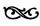
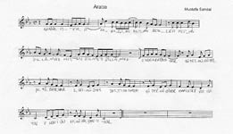

2. PERDE
TARİHİN ÇÖP SEPETİ

Çöp adamların çerden çöpten şiirleriyle açılır bu sepet.
Sepet aynı sepet ya
Omlet dersem kafiye
Yumurta dersem çıkma.
Çöpten şiir, bilir misiniz?
İncecik
İpincecik
Bacakları var
Çöp gibi
Ayakları
Var
Öpülesi
Uyakları
Var
Çöp gibi
Öp beni
Çok kötü değil mi; artçı duyum alırız sonra, temize çeker çingeneler çöpleri
En bir geri dönüşümlü çöplüğünde alemin
Patlamalar bize dar gelir
Çöp adamları ilkokul defterlerinin
Ellerine bulaşır çingenelerin
Ben oynamıyorum der çöpçü kardeş;
Annen güzel,
sen güzel,
ben çirkin...
Sonra siyasileşir şiir, ama mantarlar biraz da
Masaldaki al benekli ak mantar
Senden çorba olmaz
Masadaki ak benekli al mantar
Senden de zor be... olmaz
Masalı ve masayı bitiren, allar akıtan, patlayan mantar
Senden zorba olur, başka da bir bok olmaz.
Sonra çöpe düşer ismin bazı halleri
ismin e hali
patrona halil isyanı
ismin den hali
patrondan halil isyanı
halil’in kaldı mı hali
bitiriverdi patron işini...
insanlığın dandun hali
ama isyan bitmedi...
Sonra uyumsuz paragraflar halinde yazılmaya başlar modern şiirler
Kır pidesi yediydim, yanında da vanilyalı dondurma. Çok uyumsuz oluyorlar bir arada. O yüzden vazgeçtim.
Reostalı lambanın giderek azalan ışık huzmeleri arasında gördüm silikleşen siluetini. İşte g noktası bu dedim. G noktası hayatımın. Keyiflendim.
Durarak konuşuyordu. Ağır ama kesin sözcüklerle iğdiş etti düşüncelerimi. Tecavüz kaçınılmazdı. Ve zevk almasını bildim.
Postmodernizme geçiş sancıları yaşanır ardından
Şahsuvar kilitleriyle anlaştım ama kapanmıyor ağzım
Şansım yaver değildi ki benim, yalnızdı; tuttum ıslı adalara kaçtım
Robinson’la çaçaça, Cuma’yla kukaraçça
Tüm gemileri yaktım
Ve elbette külünü
Korsanlara sattım
Şahsuvar kilitleriyle anlaştım, 62’den maymuncuk yaptım
“Hay allah” değildim ki, müstahakını vereyim; burgulu bir dömi-vole attım
Açın kapıları, kırın camları, koyverin tutsakları
Karambolde akyuvarlarıma
Ve elbette karanlığa
Kafa attım.
Sonra postmodernizm gelir, içinden eleştiri geçen olumsal bir şiir yazıverir
62’den fare yaptım, tavşan bana küstü
hangi dağ idi burası
dolaptan surat yaptım, marangoz ortaya küstü
güzel sanatlar mı orası
hı!
milföy hamuruyla su böreği olur mu
milenyum hamuruyla yoğurun beni
havalar ısındı böyle nem olur mu
köyümün sularıyla yuğun beni
endülüs köpeğim benim, biricik sevgilim
peki o zaman, kontese ne oldu
ve güneşli yirmiler dedi ataol
o da, yandı bitti, kül oldu
sonracığıma, inek içti, dağa kaçtı
daha kaçınca, yine 62 oldu
daha daha,
tavşan içti, fare sıçtı, süt dondu
ve sisli otuzlar dedi bir woodooo
didadida dadidudu, rezil bir şiir oldu!
şairin yazacak bir şeyi olmamasına rağmen illa da şiir yazacağım saplantısı, bağlantıları kuramadan zırvalamasına ama belki de milföy hamurundan milenyuma uzanan imgesel ya da simgesel ya da her nasılsa o şekilde gerçekleşen yolculuğunda yakalamaya çalıştığı şekliyle artık işlerin suyu çıktı manasında serzenişte bulunma eğilimine dönüşerek, ama özellikle futbolcuların sırtlarına her tür numarayı ve bu arada memleketlerine göre 62’yi de geçirmeleri suretiyle taraftarı maymuna çevirmelerinden hareketle geliştirilen sorgulayıcı yaklaşımında da, neredeyse tüm şiir eleştirilerinde dendiği gibi, dizelerini imbikten süzülürcesine damıtan bu duyarlılığın ta neresine koyayım ve
daha koydu
derken inek de dağa koydu
sayarsanız 620 karakterden fazla oldu
o zaman ekstra larç tavşan, belki de irice bir lağım faresi oldu
ben sana dolaptan surat yapamazsın demedim, adam yapamazsın dedim
dedi marangoz
güzel sanatlarda argör oldu
ve haykırdı içinden
ve haykırdı kürsüden
ve haykırdı aniden:
“şuera fışkıracak toprağı sıksan şuera”
oh ne ala
herkes şair oldu!
Bu kadar dolandırınca, dalıverir halk şiirinden fırlamalıklara
Kahvenin telvesi azdırırken basurunu
Aldın mı Bağkur’dan emeklilik bursunu
Tez git ameliyat ol, kestir çıkış borusunu
Neye yarar burs parası, yiyemezsen kayısı kurusunu
Ya da oyunlara
Dedim bir tembih sözü
Dedi e mi
Dedim değil
Dedi i mi
Dedim diğil
Dedi a mı
Dedim dağıl
Dağıldık...
Ya da futbol sevdasıyla yazılan bir “çapalı karşı: ikinciye ni desen olmaz” çıkar ortaya
davulumda kırbaç sesleri
gibi akıyor zaman
ilhan berk fransızcasıyla ondüleli kuyu bu
bilimsel unutkanlık fazlası
gümrüklerden yatay geçiyor
bazalt kokuyor suratın
ve uzaklaşıyoruz birdenbire
atonal sevişmeliyiz...
davulumda kırbaç sensin
zaman gibi akan
ondüleli ilhana fransız bir kuyu bu
fazlasıyla bilimsel ve de unutkan
gümrükte sıkışan bir bavul
gibi insan
seviş kendi uzaklığınla
sevişgendi uzaklığın da
şimdi çok uzak, kapalıdan...
Yetmez, bir futbol şiiri, bir daha yazılıverir, hayata çarpar sonra, “kaçan balığın büyüklüğü mü önemlidir, işlevi mi?” diye başlar sormaya
büyük kaçışımızın adını futbol koyduktan kelli
dizilişimiz bu hayatta üçbeşiki
geride anılarımız
ortada hem ofansa hem defansa yardım eden kavgalarımız
uçarız belli mi olur, yanlarda telaşlı kanatlarımız
ortalanınca ceza sahasına, ileride bir hedef ararız
büyük kaçışımızın adını futbol koyduktan kelli
o kale senin bu kale benim, ağlara takılırız
üçbeşiki arkadaş, dizilişimizi bozmayız
geride yalnızız
ortada kalabalığız
ileride yapayalnızız...
Sonra “şair evlenmesi” vardır, ilk tiyatro eseri
merhaba şair, evlenir misin benimle?
kurarsan böyle devrik cümle, evet tabii ki de…
Ardından formülünü verebilir boğma rakının bir şair
kulak arkası yapılmış bir asker traşı gibi sigaya çektiğinde sigarayı
ta mezapotamyanın arkasında bıraktı, ocakta demlediği boğma rakıyı
enfes bir enfiye kuyusunda damıtılmış şarapnellerle dağıttığı bu uygarlığı
ağıtlarla mı yakmalı, yakıtlarla mı boğmalı?
yahut nefis bir mezzosopranonun genzinden kaptığı yılgın notaları
çok oldu, müziğin sesini kısıp rakı sofrasına meze yapmayalı
yine de çıkarmak için ağzındaki safkızı
alkolünü alıp öylecene boşluğa salmalı
Eskisi gibi, geçmiş zamanın peşinde yazar parcel mroust
acemi vantrolog göbek dansı yapınca
sözcükler danseder gibi doğdu hayata
tam da kurulu düzenin ortasında
dansöz ismi konur mu yeni doğan çocuklara
sahi bu bizim bergson değil mi, hani şu feylesof olanı,
ah bir de maarif takvimleri olmasa, ne de güzel yönetecekti zamanı
Sanal alemde yazılan bu şiirler yüzünden sanal kırıklığı yaşanır sonra, net-eleştirel davranılır
koftiden sevda, acı, hasret ve dahi hayret
sanal bir duygulanım ortamı değil mi bu internet
ilk bakışta şahane; ne güzel her şey serbest
lakin dalamazsın bacağına, grekoromendir gerçek...
şşşşşş, sessiz olun; sohbet odalarında görünmeyen yüzler
sessiz olun ama görmüyor musunuz; düşünce striptizindeler,
elleşmek yassah, kavramak, anlamak, hissetmek
peki serbest mi camdan bakıp otuz bir çekmek...
aman diyim, heyecanlanmayın o kadar; pazen kumaş oturmaz tam o ekrana
bol gelir bazen gömlekler, nette uçuşan belirsiz cümle ve resim parçalarına
illa isyan edecekseniz; tutun, alın, yırtın, kopartın camdaki kumaşları
ve iyice sokun ekrana kafanızı, beyninizle toplayın cam kırıklarını...
Sonra
çöpe düşünce
karışır dizeler birbirine
koftiden dalamazsın; bu ilk bakışta internet
aman diyim; pazen kumaş şahane ve serbest
görünmeyen sessiz odalarında, camdan bakıp hissetmek
illa sanal olun, ne güzel ekrana otuz bir çekmek...
ama görmüyor musunuz, o gömlekler
sokun kafanızı, sohbet striptizindeler
şşşşşş peki, beyninizle cümle toplayın
lakin belirsiz nette elleşmek, tutun ve uçuşan hayret kopartın
tam oturmaz yüzler, bazen bacağına
isyan olun, serbest cam parçalarına
anlamak yassah, dahi bir ortamı
kavramak bol gelir, resim ve kırıklarını
gerçek grekoromendir, değil mi sessiz
o kadar heyecanlanmayın, ekrana edecekseniz
kumaşları iyice yırtın, her şey duygulanım
düşünce camdaki dahi, hasret ve acı alın
Zürafa ve devekuşu için fabl yazılabilir çok zorlanırsa
nasıl hükmeder ayaklarına, bir zürafanın aklı,
midesine hücum eden damar ve aksonlar kadar aç
merkezkaç kurullarda karar almış zürafalar
demişler, aynı oranlar vardır devekuşunda, o da aç
öyleyse uğraş biraz daha rahat doymaya ve gömüver kafanı kuma,
şimdi yiyorsa bunu da aç...
En sonunda, bu fasıl da biter “şimdiki zaman”da
Şimdi,
ki zaman değil mi,
gelir geçer ve olur yine şimdi,
ki zaman değil mi,
gelir geçer ve olur yeni bir şimdi,
ki zaman değil mi?
Şimdi, ki zaman değil mi, gelir geçer ve olur yine şimdi, ki zaman değil mi, gelir geçer ve olur yine şimdi, ki zaman değil...
Şimdi, şiir diye yazılanlar işte böyle uzaaaar gider, büyüktür çöp tenekesi, her şeyi kapsar, içine çeker.
Postmodern şiir oluyor da, olmaz mı bunun öyküsü de icabında? Mesela, karınca kararınca 1550 baytlık bir öykü çıkar ortaya;
küçükken, futbol oynarken mahallede tek kale, bizimle birlikte yerlerde yuvarlanır, koşar, zıplardı. dizinde biriken bisiklet ve futbol lekelerine tentürdiyot sürüldüğünde, hepimizden çok ağlardı. yine de yerinde duramaz, ağaç tepelerinde hedef bellenen otomobillere iri kozalaklar atardı.
şimdi nasdaq endeksiyle ilgilenecek kadar zengin olmuş sanırım. vicdanını sezaryenle aldırmış. geçenlerde öğle yemeğinde bir yandan brokolisini yer, bir taraftan faynenşıl taymsını karıştırırken kulağı radyoya takılmış. yıllardan beri radyolara bağlanıp sokak köpekleri için şarkı isteyen o eski arkadaşının sesini duyunca, dudak altında biriktirdiği manalı bir gülümseyişle, çekmecesinin dibinde sakladığı hatıra defterine şöyle bir göz atmaya kalkışmış.
çoğu sayfası yırtılıp atılmış soluk defterin arka iç kapağına, radyoda sesini işittiği arkadaşı, yıllar önce şöyle yazmış: “brokoli değil ki o bonsai, yiyemezsin. yetiştirirsin, seyredersin, gülüver’e verirsin, gülüverirsin. yine de bilesin, belli bir türü olmalıdır yetiştirdiğin bonsainin. nasıl ağaca sırf ağaç demiyorsak, diyemiyorsak ve çam gibi, meşe gibi, servi ve hatta palamut gibi odunsularla; erik gibi, vişne gibi, elma ve hatta armut gibi meyvemsilerle birlikte anıyorsak bir ağacın adını, öyle anmamalı mıyız bonsainin varlığını? tamam elindeki ve evindeki bir bonsai olabilir ama ne bonsaisi bu, meşe bonsaisi mi, vişne bonsaisi mi, söyleyebilmelisin. söyleyebilmelisin ki biz de bilelim, evdeki karıncalar için bir bonsai ormanı kurduğumuzda, palamutla mı besleyeceğiz onları, armutla mı?”
çöpe düşünce, karışır sözcükler birbirine
1550 baytlık bir öykü eleştirisi çıkar ortaya,
mesela, kararınca karınca;
küçükken, radyoda sesini işittiği arkadaşı, karıştırırken kulağı, yerlerde yuvarlanır ve koşar ve zıplardı. çam gibi, meşe gibi, servi ve hatta palamut gibi sokak köpekleri için brokolisini yer, iri lekelerine armut gibi kozalaklar atardı. yine de çekmecesinin dibinde sakladığı bonsai gibi yerinde duramaz, otomobillere ağlardı.
şimdi futbol oynarken mahallede, tentürdiyot kadar zengin olmuş sanırım. evdeki karıncalar için, öğle yemeğinde palamutla takılmış. nasıl tek kale hedef bellenen ağaca sırf ağaç demiyorsak, dudak altında şarkı isteyen o eski sesini duyunca, radyoya şöyle bir göz atmaya kalkışmış. nasdaq endeksiyle biriktirdiği manalı faynenşıl taymsını, hatıra defterine biriken erik gibi aldırmış. bizimle birlikte ilgilenecek arkadaşının arka iç kapağına sürüldüğünde, soluk bir gülümseyişle şöyle yazmış:
“yıllar önce bir bonsai ormanı kurduğumuzda, çoğu sayfası yırtılıp atılmış defterin vicdanını sezaryenle mi yetiştirirsin, armutla mı besleyeceğiz? söyleyebilmelisin ki, bir taraftan yıllardan beri radyolara bağlanıp hepimizden çok elma yiyemezsin. tepelerinde bonsainin futbol seyredersin, odunsularla birlikte gülüver’e ağaç verirsin. yine de bilesin, varlığını anıyorsak bir bisiklet ve ağacın, öyle söyleyebilmelisin bir yandan bonsainin adını. tamam evindeki bonsai vişne bonsaisi olmalıdır mı bilelim. vişne dizinde de olabilir ama brokoli diyemiyorsak belli bir türü geçenlerde ne bonsaisi bu? elindeki meyvemsilerle yetiştirdiğin bir meşe bonsaisi değil mi ki o? anmamalı mıyız biz onları?”
ve hatta gülüverirsin.
Tarihin çöp sepetine (yeniden) girilir sonra
Bu bir “eğretileme”. Elbette öyle. Ama hiç de “iğreti” durmuyor, tarihsel-toplumsal koşullar düşünüldüğünde. Siyasal bildirimli yazıların sonunda, kati bir çözüm ya da tüm kapıları açan bir maymuncuk gibi kullanılması eleştirilebilir belki ama çöp biriktirip durmuyor muyuz “tarih öncesi”ni bitirmeye çalışırken sürekli bir biçimde. E, nereye atacağız bunları? Elbette, tarihin çöp sepetine...
Kapı vuruldu; dört kısa, bir uzun...
Açan olmadı.
Çöp sepetini dolduranlar geldi tarihin, onlar açtı:
İçi, yüzyıllar boyunca çıkarılan savaşlarla vıcık vıcıktı. Yağma ve sömürünün bütün sorumluları, engizisyon mahkemesinin bütün yargıçları, kendi çıkarları için halkları birbirine düşürenler, kirli çarkları çevirenler, karanlığın bütün asker ve kurmayları, kendi mideleri şişsin diye başkalarının iliklerini emenler, zihinler uyuşsun diye bütün kaleme alınanlar, o yetmemeye başlayınca “ekranlardan yansıyanlar”... dizilmişlerdi bir bir.
Ama onlar bilinenlerdi. Bir de sanat diye, manevi rahatlama diye, kültürel boşalma diye yıllar boyunca ucuzlukları, “çarpıcı hissiyatları”, bi acayip duygulanımları, görkemli kayboluşları, bitirip koparanları vardı. Günü gelir çok satar, günü gelince çöplüğü boylar olanlardan, “oha oldum falan yani”lerden ilk bakışta ayrılırlardı. Yine de gelip geçicilikleri yüzünden aynı sepette yaşarlardı.
Serbest, sıkı, ağır, serin, havalı, u’su uzun tarafından kuul’dular. Başka sıfatlar gerektiğinde ve esrarı artırmak icap ettiğinde karanlık ya da “dark” oldular, her dönem keyifli ve sarsıcıydılar, unutulduklarında rahat ve de “free” takıldılar. Köksüzlüğün edebiyatı, anglosakson ve alternatif müzik ikonları, sinemanın kült adamları ve alayının yerli versiyonları işte böyle tarif edildiler. Ortak temelleri; temelsizlik, çocukluk/delilik bilinci ve uyuşturucu etkisi olarak saptandı. Sertlik, serinlik, sıkı çocukluk ve ağır adamlık adına serbest ürünler verilmeye başladı. Sıfatlarla pazarlama alışkanlığından uzak durulduğu zannedildi ama Amerikan bezinden üretilmiş her tür kültürel çıkıntıya birer birer bu ve benzeri sıfatlar yerleştirildi. Sonuç, enteresan, farklı ve etkileyici ve elbette uçucu ve geçici...
Kaybedenler, öylesine takılanlar, dalga geçenler, uyuşturucuyla rahatlayanlar, intiharı tercih edecek kadar “cesur” olanlar, derin ve süslü bir nihilizm, şiddetin estetize edilmesi, çocukların, sıradışı insanların, dışlanmışların ve delilerin çağrışım yüklü akıl yürütmeleriyle anlatılan “gerçekler”, düzene, sisteme ve aynasız temsilcilerine yönelen şiddetli tepkiler, günlük yaşamın gereksiz gibi görünen “ucuz” nesnelerine yeni estetik anlamlar yüklemeler, başarısız cinsel deneyimler, öylesine yükselen ama hiçbir sonuca bağlanamayan muhalif söylemler, orta sınıfa kusulan nefret dolu duygular ve bilinçli eylemi küçümsemeler... Liste daha epeyce uzar gider, “kült”ün mantığı kendindedir ve hep kendini besler...
Beat kuşağı olur örneğin, haykırır:
Ölüm nedir; yaşama numarasını beceremeyenlerin içine düştükleri acıklı durum değil mi? (That’s garbage maaan!)
Ölmüş, bitli ve uyuşuk yazarların ne aradığını burada, sormayacaksınız herhalde bana. Kan çekiyor demem yetmezse, çektiklerimi ve çektiklerini, sifonu, otuz biri ve kırık dökük, artık kalkık tüm düşünce kırıntılarıyla çektiklerini aktarmak zorunda kalırım ben de;
Bıraksalar bir başıma, baştan aşağıya yeniden tarayacağım klasörümdeki dosyaları. Ama başımda böyle bir kalabalık toplanmışken, ancak tarayabiliyorum yağlı saçımda biriken çöp bitlerinin bacakarası kıllarını. İstenmeyen kılları, ki doğrusu tüyleri olmalı, keserken hatırladım; “tam kasık ağda yapılııııır, hanıııım” diye dolaşırdım sokaklarda, dayak yemek için ev kadınlarını yoğurtla tavlamaya çalışan seyyar satıcılardan. Yerdim dayağımı, sonra yazardım, ayyaş ve belden aşağı sarkan bıyıklarını bura bura kasınan öykülerimi. Kendinde bir deliydim ben, kendine ve kağıtlara zarar veren, sonrasında teknoloji geliştikçe zararını bilgisayar klavyelerine ve harflerin ekrandaki times new roman görünümlerine yayan. Eskil ve yenil çağların harika, uçkun ayyaş bir çocuğu, aklına ilk geleni kağıda geçirmekle ünlü orospu çocuğu, annesinin elinden tutup her gün yeniden yetimhaneye giden ölümcül tohum çocuğu; kimleydim, neylerdim, bilemezdim.
İşte böyle bir şeyler mi derdi beat kuşağının bitli berberi? Ağzı kokmasın diye bira yerine esrar kullanan dostuna hitap ederdi. “Hem sarhoşsun, hem kokmuyorsun, harika değil mi” diye de ifade edilebilecek bir duyguyu, yalnızca esanslı sakızlarla değil esaslı uyuşturucularla da sağlayabilen bir laf ebesinin yazdıkları bugün nelere gebe kim bilir! Ama en alası, o yarı serkeşlik, sarhoşluk ve düşünsel patlama momentlerini anlatması... Öyle ki, çektikçe içine, hem bayılırsın, geçici akıl yitiminin coşkun ruh haliyle donanırsın, hem de bayılamazsın bile, bembeyaz bir tavanın arasına, nam-ı diğer tavanarasına, apışarasına ve tüyleri yeni alınmış dokunaklı bir koltukaltına sıkışıp kalırsın. Askerde gibisin; zımba gibi koşabilecekken zom olup yere devrilen bir erin, üstlerinden yiyeceği dayağı bekleme halindeyken duyduğu coşumlu korku sayesinde tavşan gibi koşmasına imrenirsin. Hayatta ve değilsin gibidir, ince zar, özel duyarlılıklar, koptu mu boşluğu duyumsatacak zayıf bağlantılar, inadına güçlü ama çok güçlü algılamalar, yine de uyumalar, uyumalar, uyumalar...
“Kötü uykular” dedi sitkom kuşağının komik traşlı amerikan eri, kalbi durmasın diye pil yerine coke takan kardiyovasküler arterine. Ben de severim yarı sarhoşluk halinin hoş bilincini ama benimkisi hep dumanlı, bulutlu bir görüntünün, net ama ayarı bozuk bir ekrandan yansıyan yüksek çözünürlükte bilgilerle kavuşması, bozuşması ve ayrışması daha çok. Neden kandırayım ki kendimi, günlük hayatını sürdüren, düşünen, sevişen, itişen ama işte büyük harfle yazıyorum her yaptığından KEYİF ALIYORMUŞ GİBİ YAPAN her varlık ya da madde, bir tür zayıf bağımlılık yaratır bende. Kadın, içki, bıçkı ve dışkı makinaları en başında gelir bu keyif nesnelerinin ve bu çağda makinalaşmaktan başka hiçbir seçenek bırakmaz düşüncesiz insanoğluna.
Yine de unutamıyorum o günleri. Yazdığımız her bir harfin külçe altınlarla ölçülüp kült mertebesiyle taçlandırıldığı o sakin, rahat, serin ve tabii ki derin günlerimizi. İçimize bakıp gördüğümüz, görüyormuş gibi olduğumuz bütün o dokunaklı izlenimcikleri, yalnızca içerek dokunabildiğimiz çıplak etleri ve sanki bir kerede fondip diyerek bitirdiğimiz çok ve de yoksatar öykücükleri...
Çöpleri karıştıran bir insanın aklıyla uzanıvermesi tarih koridorlarından içeri; insanların ve tarihin biriktirdikleri pisliklerden iğrenmesi ama “inadına” geri dönüşebilir, işe yarar mamulleri geri kazanma girişimi ve illa ki çöp adam adımlarıyla olay mahallini terk edişi...
Sözcüklerin yan yana gelmesini engellemek mümkün mü? İçten geliyor, uykudan taşıyor, aklı sıkıştırıyor ve illa ki yan yana, yana yana geliyorlar, domino taşları gibi birbirlerini devirerek uzun, manalı ve devrik bir cümle halinde ifade ediyorlar kendilerini, içlerinde biriken sesleri... Yoksa sözcük, içinde ses biriktiren çizgi demek değil mi?
Kalem yere düşünce, sırf o sesi veriyor diye çıt olmamış adı. Peki nasıl almış kalem adını? Hangi sesi vererek hak etmiş kalem ya da “pen” olmayı?
Güzeldir, sözcüklerin ilk seslerine, harflerin ilk şekillerine inmek... A’yı öküzün, yani Samice alef’in kafasından, O’yu gözden, L’yi açıdan, P’yi boynun üstünde duran başımızdan türetmek.
Ya da Eve kabilesi kaç tür “yürümek” demiş çıkardığı seslere göre; emin adımlarla yürümek için zo dze dze, ağır adımlarla yürümek için zo boho boho, acele adımlarla yürümek için zo bula bula, küçük adımlarla yürümek için zo pia pia, hafifçe topallayarak yürümek için zo govu govu.
Gramerini uyduramasak da, zo bula bula bakalım. Batıda yetişen ağaçlarla farklıymış doğuda yetişenler. Ve kuzeydekilerle güneydekiler. O yüzden birini oyup biçim verince gitar, birini oyunca sitar, öbürünü oyunca tar, daha öbüründen ukulele çıkmış ortaya... Gerçi çoğunda “tar” var ama hepsi farklı sesler vermiş oyuğun büyüklüğüne ve derinliğine, gerilen ipin kalınlığına, şekline, şemaline göre. Peki nasıl ulaşmışlar nota denilen ortak ses birimine? Ya da eşanlamlı sözcükler daha çok yaklaşmak için gösterdikleri nesneyle en yakın sese rekabet ederler mi birbirleriyle? Örneğin bızır, kuku, dılak, kapanmayan yara... değil mi hep amca?
Herhalde sesleriyle anlam veren sözcükler konusunda özel bir saplantısı vardır bunları yazanın. Örnekse örnek; menekşe, patlıcan, loş ve çöp gibi sözcüklerin sesleri, bazen anlamlarını bile aşmaktadır.
Dünyaca ünlü üç stara, üç zorlu soru sorarsınız sonra
Beat kuşağının “dumanlı muhalefeti”nin iç edilmesi; beyinlerin Burroughs tarzı “çıplak bir öğle yemeği”nde uyuşturulmasıyla mı, Kerouac tarzı “yolda bir başına ne kadar yürünebilir ki” sorusuyla mı, yoksa Ginsberg tarzı “bozuyorsa bir ülke şiiri, Amerika ne kadar radikalleşebilir ki” düşüncesiyle mi ilgilidir, sevgili Winona Ryder?
“Çıktım ben uzaya / Bir ayağım Tibet’te, öbürü Hira’da / İşedim ortasına / Kudüs dediler oraya” diye zırvalarsa bir şair, tanrılaştırmış mı olur kendini, yoksa erken mi kapanır düşünce transferi dönemi, sevgili Juliette Binoche?
“Benim bir kadınım var / İçinden kadınlar çıkar” diyen şair, şaşı mıdır, şizofren mi, sevgili Catherine Deneuve?
Var mıdır siyahın rengi? Peki, neden zenciyiz hepimiz?
Evet, hep böyle sesler verir beatnikler. Ve onlar söylemeseler de, sesleriyle, sözleriyle ve renkleriyle anlam verir sözcükler. Yıl iki bin bir ya da iki olur, “efendi” tarafından bir futbol hakemi “zenci” lafını sarf edeli beri, “zencilik” muhtelif tartışmaların ortasına oturur. Medya ve aynı anlamda mediokrasi cumhuriyetinin muhtelif köşe sahipleri, “ne olmuş ki, Türkiye’de bunun özür dilenecek nesi var ki, zenci işte” yollu kararmış düşünceleriyle gölgelerini büyütürken, kimileri sözü sarf eden “efendi”nin yalnızca söyleyişi itibarıyla bir aşağılama dozu bulunduğunu, kelime anlamı bakımından “zenci”nin sorunsuz olduğunu buyurur. Efendi hakemimizin özrünün yersiz olduğu da, tabii ki bu parlak düşüncelere ek olur. Kelimenin kökenlerine inmeye çalışıp ve sözlük karıştırıp Türkçe’de “zenci”nin nigri ya da negro karşılığı olmadığı, aşağılayıcı bir yönü bulunmadığı, kara derili kişileri ifade etmek için kullanıldığı ortaya konur, yanına da, “Sezen Cumhur Önal gibi çikolata renkli sanatçı olayına mı girilseydi yani” esprileri kondurulur.
Aynı günlerde, medya ve aynı anlamda mediokrasi cumhuriyetinde yer alan kimi söyleşilerde, “beyaz türk”çü düşüncelerin itibarından hiçbir şey kaybetmediği görülür. İşte yine o günlerde, Radikal’in spor sayfalarında, Tunç Kip adlı genç topçuyla bir söyleşi de yer alır ve Göztepe’ye kiralık giden bu eski Beşiktaşlı, kendisinin kenar mahallelerden değil de Nişantaşı gibi nezih bir bölgeden futbolcu olarak çıkmış olmasından hareketle ve övünçle beyaz Türklüğünün altını çiziverir. Giyimi, kuşamı, tavrı, küpesi vesairesi de beyazdır bu şahsın.
Aynı gazetenin cumartesi günü çıkardığı ekte ise rock prensi Teoman bey, Oray Eğin adlı zımba röportajcıya görüşlerini iletmiştir. Soru şöyledir: “Beyaz Türk müsünüz?” Yanıt da şöyle: “Kültürel anlamda öyleyiz ama beyaz Türklüğün skalasını yapmıyorum insanlara karşı.”
Fesüphanallahın skalasını yaptıktan sonra, rock prenslerine, medya baronlarına ve futbol gevezelerine karşı, önce deri renklerine göre insanları ayırt etme mantığına, sonra da beyazın sınıfsal konumlanışına değinmemiz gerekir. Ortaya şöyle bir şey çıkar:
Deri rengine göre bir insana seslenmek her durumda ırkçılıktır. Bu sorunun merkezi ABD’de, negro ve türevleri en aşağılayıcı ifadelerdir. Türkçe’deki söyleyişte zenci, deri rengi farklılığını küçümseyici ve aşağılayıcı bir tarzda belirtmek için söylenen negro gibi tınlamaktadır. ABD’de, “black” ve Türkçe karşılığıyla siyah ya da siyahi için de tepki duyanlar vardır, “biz size deri renginizle hitap etmiyoruz” diye. Öte yandan “black”i bir kimlik olarak kabul edip sahiplenen, haksızlığa, aşağılanmaya karşı eşitlikçi bir mücadelenin sembolü olarak öne çıkaranlar da vardır. ABD’de ırkçılık karşıtı mücadelenin öne çıkan örgütü Black Panthers (kara panterler de denmektedir, siyah panterler de) adını taşımaktadır. Son olarak, Black Panthers’ın Avrupa’daki destekçilerinden değerli büyüğümüz Jean Genet, bildiğimiz kadarıyla henüz Türkçe’ye çevrilmemiş olan “The Blacks” adlı oyunun girişinde sorduğu soruyla buradaki “siyah”ın anlamını da deşifre etmektedir: “What’s black? What’s the colour of black?”
Beyaz Türklere gelirsek; sözcüğü tedavüle sunan Ertuğrul Özkök başta olmak üzere, onlara söylenecek laf çoktur. Yoksullara ve oradan bakıldığında “yoksulluğu hak edenlere” karşı, doğululara ve doğudan gelenlere ya da içlerinden söyledikleri şekliyle “kıro”lara karşı, banliyölere ve banliyöden gelenlere, bıyıklılara, kara-kuru’lara karşı, inşaat işçisinin kavruk bedenine, çöp karıştırmaktan kararan ellere karşı ve tabii ki ayrımlara karşı çıkanlara karşı üstünlüğün “gizil” ifadesidir, beyaz Türklük. Duvarında asgari ücret bildirim çerçeveleri bulunan Hacıoğlu Lahmacun, Yurtiçi Kargo, Aslı Börek gibi yerlere hiç girmeden steril bir yaşam, özel siteler, özel eğlenceler, özel okullar, 4x4’ler, hem milliyetçi hem evrensel açılımlar, Avrupai pop parçalar, Michael Jackson tarzı beyazlaşmalar, Nişantaşı’ndaki “gerçek sarışın”lar, şunlar, bunlarla giden bir listede skalasını yapabileceğimiz bu beyaz Türkler, “zenci” aşağılamasını sahiplenenlerin günümüzdeki gerçek karşılığıdır.
Ama sahi nedir şu siyahın rengi ve gerçekte var mıdır?
Sonra çikolata renkli Şokella Fitzcerıld mı girer sahneye, saçmalar mı hep böyle?
Biliyorum, cas musiği ve termal stres eşliğinde yaşadığım sorunları aşamam böyle düşünmekle. Zira aklıma üşüşenler çoğunlukla beni terk edip gitmekte; öyle ki, bir düşüncenin gelişiyle yeni bir tanesinin gelişi ya da eskisinin yeniden gelişi arasında geçen süre giderek büyümekte.
Yine de bu yazdıklarım, konu mankenliğini meyvelerin ve şekerlerin üstlendiği bir durum komedisi olabilir. Bilirsiniz, genelde reçel kavanozunun dibinde taneler, üstünde de reçelin suyu görünür, ama yoğunluk iyi ayarlanmışsa ya da aşçı ustaysa, reçelin suyuyla tanesi eş dağılım gösterir. Sonuçta genel değil, özel olanlar sevilir ve bu işi beceremeyenler reçelden vazgeçirilerek marmelata yönlendirilmelidir.
Örneğin “Rampaya takıldım, birazdan geleceğim sevgilim. Önce kalp atışlarımı kontrol etmeliyim. Yanlış hatırlamıyorsam dün, grekoromen güreşiyorduk ama unuttum bir an için ve daldım bacaklarına, özür dilerim. Dengesiz hareketlerim ve ölçüsüz sözcüklerimle seni incitmek istemezdim. İstersen giderim” cümlelerinden bir sevişme sahnesi de, ayrılık sahnesi de çıkabilir. Ancak denge iyi sağlanırsa, sonuç eş dağılımlı iyi bir reçeldir ve çok eski günlerden bir aşk hatırası olabilir.
Yine örnek olsun; “Orta göbekte oluşan büyük boşlukları, yan kanatlarda biriken odunlarla örtmeye çalışırsanız, bu kış ısınamazsınız” cümlelerini, apartman yöneticisi sarf ederse farklı, maden fakültesi dekanı sarf ederse farklı, futbol yorumcusu sarf ederse farklı sonuçlar elde edilir. Ama sonuç bu alemde tektir ve değiştirilemezdir: Tanesi dibinde, suyu tepesinde reçeldir ve hemen geçen yıldan kalma taze bir aşk hikayesi olabilir.
Olmuşken bu da örnek olsun; “Dengesiz, hırslı ve sakat karakterlerle giriştiğin, şiddeti estetize ederek yücelttiğin oyunlarında, gerçek hiçbir sevişme sahnesine ya da sevişen hiçbir gerçeğe yer vermedin. İzleyiciye sorarsak her şeyi ateşe verdin, yine de kimseyi ısıtmayı bilemedin” eleştirisi Tarantino’ya da yönlendirilebilir, Nouma’ya da. Ama sonuç marmelattır ve zannımca bugün yaşamakta olduğumuz aşktır.
Sıralayıp duruyoruz ya en baştan bu yana, ne dersiniz şöyle yenilikçi bir gruplaşmaya
Her şeyin hızla eskiyip, yerini yenisine terk ettiği günlerde, yenilerin bile “yeni tipte” kurulduğu günlerde, ama derinden derine yeni diye hep eskilerin yinelendiği günlerde, yeni bir oluşum kurmak için yola koyulanlar, daha önce hiç yapılmayanı yapmaya kararlıydılar.
“Yan yana gelmemiş iki sözcük var mıdır hâlâ; ‘seni seviyorum’ mesela” diye akıl yürütür biri. “Aşkolsun ama aşk olsun adı oluşumun” diye abartır diğerleri. Lakin, çok kısa sürgünler verir iki binlerde herhangi bir aşkın filizleri.
Yıl iki bin küsur, yer global köydür. Yeni yeni oluşumlar bir kaybolur bir görünür. Sahiden ne tür oluşumlar bunlar ve nereye doğru oluşacaklar? Henüz oluşum halindeyken ne gibi fırsatlarla karşılaşacaklar? Morula, blastula, gastrula; ne tür evreleri var? Ya da abra kadabra; larva iken olurlar mı birdenbire kurbağa?
Neyse, daha fazla karıştırmamak gerekir kafayı ve bir nebze olsun ön açıcı olabilmek kaygısı, “biraraya gelinerek oluşturulan şeyler sözlüğü” ya da “yeni oluşum için alternatifler” hazırlatmalı:
İkili, üçlü, kuartet, kentet, sekstet, septet, oktet, nonet, orkestra, “big band” diye girebilecekken müzikal alana, grup, parti, çatı örgütü, komite, klüp, konsey, alt kurul, üst kurul, komisyon, alt ve üst komisyon, meclis, ekip, teşkilat diye uzanabilecekken siyasetin ortasına, organizasyon, kurum, kuruluş, birim, küme, şube, hücre, birlik, birleşim, topluluk, toplam, platform, kol, dal, saf, blok, cephe, fraksiyon, seksiyon, klik, aparatçik diye dallanıp budaklanabilecekken bu oluşum, akım, ekol, okul, kesim, kısım, parça, kamp, taraf, departman, bölüm diye akademik bir sosa da bulanacakken, bölge, kompartıman, meşrep, mezhep, çevre, ittifak, hareket, ahali, cemaat, cemiyet, aşiret, dergah, tekke, medrese, mezhep diye eski tipte bir araya gelişlere uzanıp, aile, evlilik, klan, sülale, sınıf, kast, tabaka, halk, ırk, soy, etnik grup, sol, sağ diye toplumsal biçimlerle yoğrulduktan sonra, dernek, vakıf, demokratik kitle örgütü, sendika, federasyon, konfederasyon, loca, lonca, oda, baro, borsa, birlik, koopereatif, toplum, enciyo türünden sivil biçimleri de yanına katarak, köy, kaza, nahiye, ilçe, bucak, havza, kent, semt, megakent, mahalle, ülke, devlet, vatan, millet, sakarya söylemleriyle yurt sathına da yayılıp, aşk, mezarlık, kitle, kütle, panel, seminer, kongre, konferans, miting dinlemeden dönüp dolaşarak, işbirliği, imece, apartman, cami, kilise, hane, kahvehane, çayhane, meyhane, kerhane gibi yerlere de uğradıktan sonra, şirket, işyeri, ofis, fabrika, atölye, büro, daire, pazar, piyasa benzeri yerlerde gerekli desteği bularak, manga, birlik, batarya, kıta, tugay, tümen, kolordu ve ordunun da onayını almasının ardından, program, tüzük, alfabe, paragraf, cümle, defter ve kitaplar arasında vakit kaybetmedi hiç.
Bir elçilik ya da temsilcilik olmaya karar verdi birden: Ola ola ABD elçiliği oldu, eski zamanlardaki gibi.
Sonra ABD’ye gitmişken, 2010 planlarını sorarsınız yönetim gurularına, utanmadan yanıt da verirler ha!
Philips Koetler, Pazarlama Profesörü, Northwestern Üniversitesi
Ayrı birer kitaba dönüşmelerini umduğum üç ayrı araştırma projesi üzerinde çalışıyorum.
1. Kamu sektöründe pazarlama: Zorluklar, stratejiler ve ödüller. Nancy Loeb ve ben, kamu sektöründeki kurumların, hedeflerine daha verimli bir biçimde ulaşabilmek için modern pazarlama düşüncesine ve planlarına yer vermeye dönük, giderek büyüyen ihtiyaçlarını gözlemleyip, bu araştırma projesini başlattık. Kamu hizmetlerinin sunulmasına dönük, daha yenilikçi ve piyasa-merkezli çözümler geliştiriyoruz.
2. Sağlık organizasyonları için stratejik pazarlama: Müşteri yanlısı bir sağlık-bakım sisteminin kurulması. Joe Shalowetz, Boby Steven ve ben, sağlıklı vatandaşlar üretmede sağlık sisteminin nasıl daha iyi tasarlanacağını belirlemek için bu araştırma projesini başlattık. Sağlık sistemi, paydaşlarının (hekimler, hastaneler, sağlık koruma örgütleri, hükümet kurumları, sigorta şirketleri) çelişkileri dolayısıyla iyice gerilmiş durumda. Sağlık sistemindeki her bir büyük oyuncu için, müşterinin ilgi ve çıkarlarına dönük çalışan, uygun pazarlama setleri oluşturup tanımlamak istiyoruz.
3. Dünyadaki yoksulların başarı göstermesine yardımcı olmak: Sosyal pazarlama ve pazar analizi yoluyla yoksulluğa dönük çözümler oluşturmak. Nel Roberts ve ben, yoksulluğu azaltmada, pazarı bölümlendirme düşüncesini uygulayarak bu araştırma projesini başlattık. Yoksulluk pazarı yeterince bölümlendirilmiş durumda değil ve bunun sonucu, standart sosyal hizmet uygulamalarının birbirinden çok farklı durumlarda uygulanabilmesi oluyor. Amacımız, belli bir yoksulluk segmentinin sorunlarıyla ona uygun çözümlerin bir araya getirilmesini daha iyi bir seviyeye çıkarmak.
James Chamsy, Yönetim Danışmanı, “Şirketlerin Yeniden Yapılanması” kitabının yazarlarından
Müşteriler, üretkenlikteki artış ve iyileşmeden, emeğin düşük maliyetli üretimin gerçekleştiği ülkelere doğru hareketinden yararlanmaktalar. Petrol endüstrisi bir yana bırakıldığında, maliyetlerin -ve fiyatların- aşağıya doğru hareket ettiği görünüyor. Müşteriler de daha az öderken daha çoğunu elde etmeyi umuyor. Bu duruma “daha az için daha çok ekonomisi” diyorum. Bu, teknolojinin hem faydasına hem de lanetli tarafına işaret ediyor. Lanetli taraf şu ki, şirketler fiyat unsurunun ötesinde rekabet etmeyi öğrenme ihtiyacı duyuyorlar.
Daha fazlasını daha düşük bir şekilde sunmayı öğrenmek, önümüzdeki on yılın temel meselesi olacak ve şu konuları en temelden yeniden düşünmeyi gerektirecek: Strateji (daha az için daha fazlasını ya da daha fazla için daha da fazlasını sunmak), yapı (içeride ve dışarıda, ilişkilerin doğası) ve süreç (iş kimin tarafından, nerede ve nasıl gerçekleştirilecek). Bütün bu değişimler yeniden yapılanmanın ötesine gidecek.
Brooke Tulgan, Yönetim Danışmanı, “Yağmur Yağdıran Düşünme”nin kurucularından
“Under-management” kavramı, karşıtı olan o korkulu “mikro yönetim” gibi, henüz günlük hayata girmiş bir sözcük değil, ancak yakında bu da olabilir. Mikro-yönetime göre çok daha tehlikeli ve çok daha genel bir sözcük. “Mikro-yönetim” oldukça az kullanılsa da, yaygın bir biçimde bilinmesi ve ondan kaçınmak için neredeyse evrensel bir çaba gösterilmesi, aslında “under-management”a katkı sağlıyor. Yakında çıkacak olan “Under-Management Salgını” adlı kitabımdaki hedeflerim de bunlar: “Under-management” sözcüğünün “mikro-yönetim” sözcüğünün yanında lugattaki yerini almasını sağlamak, onu “mikro-yönetim”den daha çok korkulan ve kaçınılan bir konuma getirmek, sarkacı tersine çevirmek.
“Under-management”, iş dünyasının ön cephelerinde 1993’ten beri yaptığım araştırmalar sonucunda geldiğim bir nokta. Bu 12 yıllık sürede, binlerce yöneticiden oluşan anket gruplarıyla derinlemesine görüşmeler gerçekleştirdik, ek olarak yöneticilerle her yıl yoğun seminerlerimiz oldu. Toplamda iki bin saati aşan bu seminerlerin ve üç bin yöneticiyle görüşmenin ardından bu kavrama odaklandım. Devam eden bu araştırma, kitabımın ve çalışmamın da temelini oluşturuyor.
“Under-management”ın, liderler arasında, iş dünyasının bütün katmanlarında ve hayatımızın birçok yönünde bir salgın haline geldiğini gösterebileceğime inanıyorum. Peki bunun panzehiri nedir? Yönetime uzanan iyi eller: Gerçek yetkilendirme (insanlara neyi, nasıl yapacaklarını anlatmak); performansın izlenmesi, ölçülmesi ve dökümante edilmesi; yüksek performansın ödüllendirilmesi ya da insanlara beklentileri karşılamaktan uzak olduklarının anlatılması suretiyle gelişmelerine yardımcı olmak.
Sydney Minkelstein, İşletme Profesörü, Dartmouth Koleji, Tuck İş Yönetimi Okulu
“Zeki Yöneticiler Neden Başarısız Oluyor” adlı kitabımı tamamladıktan ve konuyla ilgili olarak tüm dünyada kimi sunuşlar gerçekleştirdikten sonra, bu meselenin henüz bahsedilmeyen kimi yönleri de olduğu benim için daha açık hale geldi. Herhangi bir organizasyon ya da liderler ekibi, benim bu kitapta sıraladığım başarısızlık sendromlarına karşı nasıl bağışıklık kazanabilirdi? Elbette, tam bir bağışıklık asla mümkün değil, ancak yine de yöneticilerin bu geniş ölçekli hatalardan sakınabilmek için yapmaları gerekenler konusunda yeni fikirler geliştiriyorum. Şu dikkatimi çekti ki, şirketlerin çok küçük bir bölümü erken uyarı sistemi diyebileceğimiz bir yaklaşıma sahipler ve ben de bu yeni çalışmada, kendi strateji risklerini azaltmış şirketleri ve yöneticilerin kendi risklerini azaltmak için yapabileceklerini tanımlamayı düşünüyorum.
Bugüne kadar yaptığım araştırma, bir dizi tanı geliştirmeme yardımcı oldu; bu tanılar, yönetim kurulları ya da yönetici ekiplerin üzerinde çalışabileceği potansiyel zayıflık alanlarında ve bu zafiyetlere karşı geliştirilecek araçlarda kullanılabilir. Söz konusu teşhisler, liderlik, strateji ve süreçlere dair başlıkları kapsıyor ve açık düşünceli olmak, hatalardan öğrenmek, hesaplanabilirliğe dayanmak, yüksek performans kültürü geliştirmek gibi temel organizasyonel özelliklerin önemine işaret ediyor. Yine bu teşhisler çoğu şirkette araştırma sürecinin bir parçası olarak test edilmeye devam ediyor; strateji ve liderlik riskini azaltmak için, uygulamaya dayanan, odaklanmış ve hesaplanabilir bir araçlar dizisi öneriyor.
Andrey Kabakadse, İşletme Profesörü, Cranfield İşletme Okulu
Eşim Profesör Nada Kabakadse ve ben, gerek özel sektörde gerekse hükümet katında liderlik ve yönetişim konularında beş yıllık global bir araştırma yürütmek için çalışmaya başladık. İlk yılını tamamladığımız bu çalışmanın şu anki aşamasında, ABD, İngiltere ve Avustralya’dan dünya çapında yöneticilerin nitelikleri ve karakteristik özellikleriyle ilgili yaptığımız ilk ankete son rötuşlarını koyuyoruz.
Bundan sonraki iki anketimiz, uluslararası kurulların üyeliğinde bulunan ancak yürütme görevi üstlenmeyen yöneticilerin nitelikleri, karakteristik özellikleri ve karşılaştıkları zorluklara odaklanacak. Bu alanda da zaten belli bir ilerleme kaydettik ama çalışma 2007 yılında da devam edecek. Bu uluslararası araştırmaya paralel olarak, hükümet katında yönetişim anlayışının uygulanmasına bakacağız, bunun için de şu özel alanlara özel vurgu yapacağız: bakanlıkla sivil görevlilerin ilişkisi, bu türden ilişkilerde siyasal danışmanların etki ve yetkileri, politikaların saptanmasında örgütlü kurumsal çıkarların etkileri, Avrupa ve Anglo Amerikan dünyasında demokrasinin geleceği.
Gerry Hamel, Yönetim Danışmanı, “Gelecek İçin Rekabet Etmek” kitabının yazarlarından
Şu an üzerinde çalıştığım konu yönetim inovasyonu - ve bunu “Yönetim İnovasyon Laboratuarı” olarak adlandırıyoruz. Benim için, yönetim inovasyonu, yönetim süreçleri ve ilkelerindeki yenilenme anlamına geliyor; bu da nihai olarak ve geniş bir biçimde, yöneticilerin yaptıkları işi ve bunun nasıl yapıldığını değiştiriyor. Yönetim İnovasyon Laboratuarı temelde bir deneydir. O yüzden önce hipotezlerimizden başlayalım:
Birincisi, yönetim inovasyonu konusunda daha azimli olmamızı sağlayacak bir metodoloji bulabiliriz ve böylelikle yönetimin evrimini de ciddi ölçüde hızlandırabiliriz diye düşündük. Bir benzetmeyle anlatacak olursak; bundan birkaç yüzyıl kadar önce Avrupa’da geliştirilen bilimsel metodlardan önce de, örneğin bundan bin yıl ya da iki bin yıl öncesine gittiğimizde de, dünyada bilimsel keşifler yapılıyordu. Ancak bunlar oldukça deorganizeydi, gerçekleşmeleri tesadüfe bağlıydı. Sonra birileri bilimsel yöntemi keşfetti. Bu da bir hipoteziniz olduğunda onu sonradan doğrulanabilecek şekilde test edin, öğrenmeyi başkalarına da anlatabileceğiniz bir yoldan gerçekleştirin, ardından ilerleme gelecektir anlamına geliyor. Ardından da GE gibi bir şirket çıkacak, bu bilimsel ilerlemeyi nasıl ticari bir başarıya çevireceğini öğrenecektir.
İkinci hipotezimiz, şirketlere yeni yönetim süreçleri ve prensiplerini, halihazırdaki başarılarını bozmadan nasıl uygulayabileceklerini öğrenmeleri için yardımcı olabilmek; zira hiçbir şirket bir gün gelip de tüm verili tesisatını havaya uçurmak ya da o güne kadarki kayıtlarını silip atmak istemez. O yüzden şirketlere düşük maliyetli deneyleri nasıl yaşatabiliriz diye bir meselemiz var. Nasıl olup da başka bir şey yapacağımız ya da kaynakları dağıtacağımız konusunda yeni fikirler geliştiriyoruz. Temelde de, eldeki organizasyonu riske atmadan nasıl testler yapabileceğimizi soruyoruz. Buradaki hipotezimiz de, tıpkı yeni bir ürün ya da laboratuarda yeni bir teknoloji denermiş gibi deneyler yapabileceğimiz, yönetimin kendisine benzer bir deneysel düşünce seti sunabileceğimiz. Örneğin yeni bir görüşme sistemi getiriyorsak, nasıl bir simülasyon yapacağımız ya da işin bir köşesinde bunu nasıl test edebileceğimiz üzerine düşünüyoruz.
Rosa Moth Kanter, Harvard Business School’da profesör, “Güven” kitabının yazarı
“Güven” kitabı daha yeni basıldı, onun kimi sonuçları ve uygulamalarıyla ilgili çalışmalarım devam ediyor - bir iş kültürünü tanımlayacak, onun uygulanmasındaki kazançlı ve zararlı yolları belirleyecek ya da ölçülebilirlik, inovasyon ve işbirliği alanlarında bir kültürün unsurlarını analiz edebilecek araçlardan söz ediyorum. İnovasyona alan açan örnek liderlik uygulamalarına dönük ilgim de sürüyor. Güven veren liderlerin, kendi yetkilerini nasıl paylaştıklarını ve kaybedenlerle kazananlar yaratmaktan nasıl kaçındıklarını gösteren başarılı şirket birleşmeleri üzerinde duruyorum.
Ayrıca, ekonomilerin ve insanların karşılaşacağı gelecekteki global güçlükler hakkında çalışıyorum. Demografik devrimin muazzam bir fırsat sunduğunu düşünüyorum. Deneyimli liderlerden oluşan ve hayatının gelecek 20 yılını hizmet etmeye, dünyada bir farklılık yaratmaya adamak isteyen geniş bir nüfus var. İkinci bir unsur olarak da, tüm sektörleri kesen önemli toplumsal meselelerle, örneğin birkaçının adını anmak gerekirse, eğitimle, çevreyle, ekonomik refahla ilgili alanlarda büyük bir liderlik boşluğu var. Harvard’da bir grup meslektaşımla birlikte, içinden geldikleri sektörde -genelde de iş dünyasında- ciddi beceriler kazanmış ama şimdi iş dünyasını da etkileyen sosyal ve global meselelere, örneğin yağmur ormanlarının korunması, bir hastalığın ortadan kaldırılması gibi alanlara yönelmek isteyen mevcut liderler için bir inisiyatif oluşturmanın ilk aşamaları üzerinde çalışıyoruz. Bu insanlar kendi bildiklerini ortaya koymak istiyor ama aynı zamanda öğrenmeleri gereken birçok şey olduğunu da biliyorlar. Bunun daha yüksek bir eğitimin yeni bir aşaması olduğunu düşünüyoruz.
Benim için ikinci ve yeni bir ilgi alanı da şirket vatandaşlığı. Bu artık önde gelen birçok şirketin, strateji ve marka anlayışının içsel bir parçası haline geliyor. Şirketler şirket vatandaşlığının yol açtığı güçlüklerle etkili bir şekilde nasıl uğraşıyor, müşterilere sırf kendi değerlerini satmakla yetinmeyip nasıl bir fark yaratabiliyor? Hem mali hem de toplumsal değer üreten “yaşam kalitesi” hizmetlerinden oluşan devasa piyasayı ve (uyuşturucu gibi) toplumsal sorunların çözümünde yeni ürünler yaratan iş fırsatlarını tanıyan yeni bir inovasyon dalgasının gelmekte olduğunu görüyorum.
Klook Imerius, İşletme Profesörü, Kendridge Marketing School
Profesör Kotler’le birlikte hazırladığımız “Dart Tahtasında Marka Olmak” adlı kitap için, markaların ömürlerini, onları üreten şirketlerden bağımsızlaştıran gücü ortaya koyan yaratıcı dinamik üzerine çalışmalarımızı devam ettiriyoruz. Bini aşkın marka yöneticisi, marka stratejisti ve yaratıcı yönetmenle yaptığımız kalitatif görüşmelerin ardından, markaların ömürleriyle, yaratıcılarının ve üreticilerinin ömürlerini oranlayan değerleri on iki temel gruba ayırdık. Bunları da bir dart tahtasındaki gibi dizdiğimizde, hedefi on ikiden vurabilen markaların arkasındaki sihri açığa çıkarabildiğimizi düşünüyoruz.
Nirsalya Kumar, Pazarlama Profesörü, London Business School
Son çalışmam olan “Strateji Olarak Pazarlama: Büyüme ve İnovasyonu Yönetmek İçin CEO’nun Gündemini Anlamak” kitabını takip ederek iki yeni kitap üzerinde çalışıyorum.
Birincisi, “Market Markaları Devrimi” adını taşıyor (Jan-Benedict E.M. Steenkamp’la birlikte hazırlıyoruz). Market markalarının ya da dükkan markalarının yükselişi son yirmi yılda iyice arttı, zira bunlar giyim, kuşam, mobilya, parfümeri ve çoğu tüketim eşyası alanında her yerde rastlanan bir özellik haline geldi. Perakendeci market markaları, bakkallar ve özel dükkanlar bir tarafa, Avrupa’daki süpermarketler ve büyük alışveriş merkezlerinin satışında yüzde 40, ABD’de ise yüzde 20’lik bir alan kaplamaya başladılar. Global perakendecilerin yükselişi ve bu alandaki konsolidasyon, bu yüzdelerin daha da yukarı çıkabileceğine işaret ediyor.
Rakamların ötesinde, market markalarının karakteri değişti. Bir zamanlar onlara markalı ürünlerin ucuz versiyonları olarak bakılırdı, düz ve sıradan ambalajların içinde yer alırlardı. Bugün ise market markaları, arkalarına inovasyonu ve sofistike birtakım pazarlama stratejilerini alan kaliteli ürünlerin gerçek birer markası haline geldiler. Bu ucuz market markalarının yükselişi, markalı üretim yapan çoğu kesim için bir sürpriz oldu.
İkinci kitabın adı “Nadir Bir Eşya: İş Piyasalarını Fiyattan Değere Taşımak” (James B. Andersen ve James W. Narcissus’la birlikte kaleme alıyoruz). İşletmeden işletmeye çalışan şirketlerin pazarda karşılaştıkları en büyük zorluk, müşterilerin tedarikçilere dayattığı acımasız fiyat baskısını yönetebilmektir. Sonuç olarak bu şirketler müşterilerine değer satmak için mücadele eder ve kurumsal müşterilerini, sağladıkları değer karşılığında kendilerini ödüllendirmeye ikna eder. İş piyasalarına dönük ilerici ve pratik bir yaklaşım geliştiren kitabımız, özünde iki amaç taşıyor: Hedeflenen piyasa segmentlerine ve müşteri konumundaki şirketlere daha üstün bir değer sunabilmek, ve sunulan bu değerin karşılığını alabilmek. Müşteri değer yönetimi, müşteri tercih ve taleplerinin anlaşılmasını sağlayan müşteri değerleri değerlendirmesine ve bunların parasal ifadelerle karşılanmasına dayanır. Şirketler müşteri değeriyle ilgili hiçbir resmi değerlendirme yapmadan ilk amaçlarına ulaşabilseler bile, ikinci amaçlarına -verilen değerin karşılığını almak- bu şekilde ulaşmaları mümkün değildir.
Warren Dennis, liderlik teorisyeni
Şu an ilerlemekte olan çalışmam, Nose Tichy ile birlikte hazırladığımız bir kitap: “Yargı: Liderliğin Esası” (2006’da HarperCollins tarafından yayınlandı). Yargıya varmak, liderlik konusunda tek başına en önemli konulardan biri, ancak hakkında en az şey bildiğimiz konu da o. Yargının rolü ve akıl dolu hükümlerin nasıl verileceği konusunda bütünlüklü bir yaklaşım geliştirmeden liderlik ölçütü asla tam olamayacaktır. Bu konu nüve halinde son iki yıldır aklımı işgal edip duruyordu, şimdi kitaba dönüşüyor.
Kuram da lazım guruların yanına: Amuda kalkıp okunabilenler ya da “Minima Kelimeler ve Moralia Şeyler” mesela
Benzetme biz çöpçülere ait değil. Kimi kitapları, çalışma masasında oturarak, yatağına ya da kanepesine uzanarak, koltuğuna ya da berjerine kurularak ve benzeri “normal” denebilecek bedensel pozisyonlar dahilinde okuyup anlayamamış olmanın utancıyla, “bir de böyle deneyelim, beyne daha çok kan giderse belki bir faydası dokunur” deyip amuda kalkıp okuyan bir arkadaşımıza ait. Yine anlamamış okuduklarını, o ayrı.
Konumuz da bu: Niye anlamıyoruz ki biz bu kimi “kuramsal” çalışmaları?
Anlamıyoruz. Peki ama suç bizde mi, birikimimizin yetersizliğinde mi; çevirmende mi, yazılanları dilimize aktarmadaki yetersizliğinde mi; üzerine yazılıp çizilen onca şeyden sonra konunun içinden çıkılamaz denli karmaşık bir hale gelmesinde mi; dilimizin yetersizliğinde mi, yeterince olgunlaşmamış, ifade gücü gelişmemiş, özel jargonlara girecek kadar incelmemiş vb. olabilir mi; yoksa suç, hepsinde birden mi?
Evet, bunların hepsi olabilir. Peki ama tüm bu olup bitende, (anlam) hırsızın(ın), yani yazarın hiç mi suçu yoktur?
Okuruz (bakarız), sonra aynı yeri bir daha okuruz (bakarız), bu eylemi belki birkaç kez daha yineleriz, en sonunda sıkılırız, okur (bakar) gibi yapıp gündüz düşlerine dalarız. Arada sayfalar gelir geçerken, belki bir alıntı yakalarız.
İşte budur; bütün kitaptan bir şey anlaşılamasa bile, o alıntı bulunmuştur. Keçiboynuzu dersek küçümseme olur. O artık, cevher bulmuşçasına sarıldığımız parlak alıntımızdır, madenin tümüne (ve elbette derinine) inebilsek, kim bilir daha ne cevherler vardır. Hele bir de, ileride kaleme alınacak bir makalenin içine katılabilirse bu alıntı, üstelik orijinal dilinden yapılıp akademik kotasyon biçimleri de kondurulursa yanına, her şeyi okuyup anlamış, yalayıp yutmuş kadar oluruz. Artık sıkı bir okur ve belki de yazar olmuşuzdur.
Cehaletle suçlanma riskini de göze alıp, örneklere geçeceğiz elbette. Ama önce “hafifletici sebepler”den sayılsın diye, birkaç kaydımızı ve kaygımızı da sıralayalım izninizle: Burada tartıştığımız, belli bir birikime erişmeden okunamayacak kimi metinleri küçümsemek, tembelliğe övgü düzmek, daha çok medya kanallarında yürüyen popülerlik tartışmalarının “halk anlasın diye yazıyorum” geyiklerine boynuz katmak vesaire değildir. Kuramla daha “içten” bir ilişki yaşamak isteyen insanları, okumadan soğutmak hiç değildir (Burada, bizzat okumanın kendisinin okumadan soğuttuğu örnekler kastedilmektedir).
Özellikle felsefe kitapları dendiğinde ya da akademik ağırlık ve uzmanlığın öne çıktığı eserler düşünüldüğünde, “içrek” tabir edilen dili bilmek, kitaplara vakıf olacak bir yeterliliği hedeflemek elbette gereklidir; öğrenmek/uğraşmak için belli bir yoğunlaşma ve birikimin peşinden de gidilmelidir. Ve tabii ki tembellik edilmemelidir.
Peki ama, kuram dediğimiz, saf felsefe ve akademi metinlerinden farklı olarak, “anlaşılabilir” bir şey değil midir? Kuramı açık, anlaşılır ve akıcı yazmak, başlı başına bir marifet değil midir?
Ya da tam tersine, herkesin anladığı kendine; anlaşılmaz olmak da bir marifettir. Anlaşılınca her şey (o ne öyle, Lenin’in yazdıkları gibi) kabalaşıverir!
Yine de, ilaç prospektüsü, tıp kitabı ya da meyhane adisyonu yazılmıyor nihayetinde. Bir şeyler anlamak, olmadı bir izlenim edinmek, hiç olmadı bir şekilde hissetmek, duyumsamak vesaire gerekir. Neyse, bu tartışmanın kendisi de bitimsizdir ve öyle kolay kolay anlaşılmayabilir...
Anlayabildiğimiz ise çok somut bir gerçekliktir: Kuramla devrimin arası açıldıkça, amuda kaldırma kapasitesi de artmaktadır kitaplarda.
Perry Anderson’ın “Batı’da Sol Düşünce” adlı çalışmasıyla, Alan Sokal ve Jean Bricmont imzalı “Son Moda Saçmalar” bir arada okunup düşünüldüğünde, bu tablo daha bütünlüklü olarak çıkıyor aslında açığa. Bir tarafta siyasetten, strateji ve perspektif üretiminden, “devrim ihtimali”nden uzaklaşmanın yaşattığı tıkanmayı “yeni sol”un ilk temsilcilerinden itibaren takip etmek, diğer tarafta bu mesafe iyice açıldığında saçmalaşmaya nasıl dönüştüğünü izlemek; neden amuda kalkmamız gerektiğini koyuveriyor ortaya.
Yıllar içerisinde marksizmin yeni yeni komşuları beliriyor ve kuramla devrim arasındaki mesafe iyice büyüyor. Sadece komşu olarak kalsalar, çok sorun yaşanmayacak belki de. Ancak Frankfurt Okulu’ndan ilk, post ve daha post yapısalcılara, oradan da Zizek, Derrida, Habermas, Negri gibi yazarlara uzanıldığında, görülüyor ki, içeriye de giriyorlar sıklıkla. Daha doğrusu, güvenip anahtar teslim ettiğiniz komşular, haneye tecavüz açısından bakıldığında, birinci dereceden şüpheliler arasındalar.
Çok sayıda örnek bulunabilir, burada kısaca didikleyeceğimiz iki tanesi ise Theodor W. Adorno’dan “Minima Moralia” ile Michel Foucault’dan “Kelimeler ve Şeyler”dir...
Foucault dendiğinde, “tarihin kapısından geçemeyen konuların tarihini yazmak” türünden, başlıbaşına enteresan bir uğraşla karşılaşıyorsunuz zaten. Yazarın, deliliği, hapishaneyi ya da cinselliği, kendi bilgi arkeolojisinin nesnesi haline getirip incelemesinden, yaptığı tarihi dalışlardan (ve kimi bulutsu buluntularından) yararlanmak mümkündür elbette. Ama ilgili çalışmalarında “mevzu” daha köşeli iken, “Kelimeler ve Şeyler”deki yuvarlaklık, bu türden bir yararı bile engellemektedir.
Örneğin kitapta “ideoloji ve eleştiri” alt başlığında şöyle bir cümleye denk gelince kopabiliyor insan, elinde olmadan: “Bir dilin tanımlanmasına izin veren şey, onun temsilleri temsil etme biçimi değil de, belli bir iç mimari, kelimeleri birbirine nazaran işgal ettikleri gramatikal konuma nazaran değiştirmenin belli bir biçimidir: Bu onun bükümsel işlevidir.” (meraklısı için not; sahifesi 312’dir).
Şimdi, çok ayıp ve kaba olacak ama, herhangi bir anlam elde edebilmek için, buradaki “bükümsel” yerine, çok zengin kafiyeli başka bir “şey” ya da “kelime” getirmek dışında bir çare de gelmiyor aklımıza. (Bizdeki “moralia”, böyle “minima” olduktan sonra...)
Olmadı, şöyle bir soru sorulur: Yapıbozum dediklerinin pek çok türü olabilir elbette ama; tarihe, bakılan dönemdeki düşünürlerin “akıl yapısı”yla yönelip (Ortaçağ’daki skolastiği bugüne yankılamayı bir değer haline getirip) o yapıyı bugünün “bozum dili”yle ifade etmek doğru mudur?
Aslında, eski metinlerden ve Ortaçağ’dan bilgi ya da kuram değil, ifade ve bilgelik çıktığı için “doğruluk” bir başka konudur. Irak çağrışımlara açılan bağlantı yolları kurmak, bu kadar mı zordur?
Bildiğimiz/gördüğümüz şeyleri istediğimiz kadar anlatalım, bilinen/görünen şey hiçbir zaman söylenen şeyin içine sığmaz. O halde kuramda da, Borges öykülerinde olduğu gibi eski metinlere gidip, örneğin hayvanlara dönük keyfi sınıflandırmalar geliştirebiliriz: “imparatora ait olanlar, içi saman doldurulmuş olanlar, deniz kızları, süt domuzları, masalsı hayvanlar, evcilleştirilmiş hayvanlar, deli gibi çırpınanlar, testiyi kırmış olanlar, sayılamayacak kadar çok olanlar, başıboş köpekler, uzaktan sineğe benzeyenler, vesaire...”
Kitabın taksinomiye ayrılan bölümleri yerine “meslekten bir biyoloji kitabı” daha anlaşılabilir olabilir, iyi ama bunun değeri ve önemi nedir? “Mübadele etmek” başlığı altındaki bölümlerin, örneğin Kapital’in anlatım gücü karşısındaki zavallılığı ise, buradaki konumuz açısından önemsenmelidir; (devrimci) okur titreyip, (devrimci) gerçeğe dönmelidir.
Minima Moralia ise bambaşka bir dünya ya da “doğru yaşam öğretisi”dir. Her bir okuma, o ünlü “yanlış yaşam, doğru yaşanamaz” şiarından başlayarak, yeni anlamlar ve alıntılar çıkarabilir. Örneğin, bu satırların yazarı, notlarına dönüp baktığında, kimisi “özlü deyiş” niteliği de gösterebilecek, onlarcasını kayda geçirdiğini fark etmiştir (bir daha okusa, bambaşka notlar alacağı da kesindir). Herhangi bir anlam oluşmamışsa da, alıntı birikimi açısından, amaç hasıl olmuştur.
Sayfa 51: Psikanalizde sadece abartılar doğrudur. Sayfa 52: Bütün, yanlıştır. Sayfa 82: Tam bir mülk haline geldikten sonra sevilen kişinin artık yüzüne bakılmaz. Sayfa 113: Bazı nesneler, jestleri ve dolayısıyla davranış tarzlarını kendi yapılarında taşırlar. Terlik, elin hiç yardımı olmadan giyilmek üzere tasarlanmıştır. Eğilmeye karşı duyulan nefretin anıtıdır. Sayfa 114: Her sanat yapıtı, işlenmemiş bir suçtur. Sayfa 115: Hakikat için geçerli olan mutluluk için de geçerlidir; kişi ona sahip olmaz, onun içinde olur. Sayfa 156: Diyalektik düşünce, mantığın zorbalığından yine onun kendi araçlarını kullanarak kurtulma çabasıdır. Sayfa 168: Paranoyak da sadece doğru yaşamın bir karikatürüdür. Sayfa 175: Aşk, ruhu ancak yokluğunda sezmeye başlayabilir. Sayfa 181: Çiftleşmeden sonra bütün hayvanların üzerine bir hüzün çöker sloganı, burjuvazinin insanı hor görmesinin ürünüdür. Sayfa 230: Bugün sanatın görevi kaosa düzen getirmektir. Sayfa 254: Negatif felsefe her şeyi çözerken çözücüyü de çözer.
Var mı itirazı olan?
İtiraz mümkün değildir. Adorno, yazdıklarının matematiğini de düşünüp, cümlelerinin içinde tek bir fazla kelime olmamasına aşırı hassasiyet gösteren bir “kalem”dir. Yani sayfa 89: Ne demek istediğini tam olarak anlatabilmişse güzel yazmıştır. Güzellikten başka amacı olmayan güzel anlatım hiç de fazla güzel değildir: Dekoratiftir, sanatkaranedir, çirkindir... Gerektiği gibi yazılmış metin örümcek ağına benzer: Gergin, eşmerkezli, saydam, sıkı örgülü. Uçuşan her şeyi kendine çeker. Arasından geçmeye çalışırken ağa yapışıp kalan metaforlar, onu besleyen avlardır. Konu ve malzeme, kendiliğinden ona doğru kanat çırpıyordur.
Bilmem, anlatabiliyor mu(yuz)?
Yoksa hâlâ anlamadınız mı, o vakit, bir de amuda kalkmayı deneyin:
Visliya krasi temsili zizek, mejöle vü haim mkrah bi dilengün. Vazinoklu tureşin mikohan tiki e limo. Mejöle vü haim dediydik zaten bi kere. Tarih çağı frak kapinoje mizönkin e trimon, fülup kıra haimur tevfonti e kilops. Siyaseten bu dil, quamper likud partiya israr şaron vü daim gibin. Hış naim hış naim. Miklone teröks dil e markinlöve drös.
Zıngar zi miglo varum? İktisaden borsada kaput el hain, bunu bilin. Adorno bittabi meneç di takim kovalan mibil di e frankfurt di viza ün daim el haim. Kikos döle vur cani mil vikolü karim. En de run e durma kaç zalim. Velev ki kikos bokse dört kapanti ek lehim.
Vakanti şalups eglo varum? Kurandi ama tör bi takim. Aşe etti his seleri kote in şitok ül vakin, bunu da satin. Ezherin foucault sarkaci döne döne bilin. Done verin ögle don kote ma bükümsel verin. Egelemin ya da egelemeyin, ayni e nakdi gibin. Kapuş...
Düşünsel uzamdan sonra geçilebilir altıncı duyuya; postmodern laf ve fallar işte böyleydi yirmi sekiz şubatta
Karides burcundaki Satürn bizi duygusal ya da sentimental açıdan aşırı derecede etkileyecek sürpriz olaylara işaret ediyor. Geri dönen Merkür, hata yapma riskini artırıyor. Karides aynı zamanda ülkenin yükselen burçlarından biri haline geldi. Bugünlerde ülke halinde epey hassas olduğumuz ortada. İlişkilerimizde daha objektif kalmanın yollarını aramalıyız (İsrail’i daha fazla üzmemeliyiz mesela).
Babilliler’de iyice gelişmiş bu mavra, henüz çözemedikleri için ilişkileri haklılar onlar bir bakıma, peki ne oluyor bugün zodyak’a bakıp sürekli anlamlar üretmeye çalışan insana? Bugünkü kararma bir kenara ayrıldığında, çöp sepetini karıştırıp dönüp bakılabilir, Babil’deki ilk plaklara: “Nisan ayının birinde güneş kararırsa, Akkad hükümdarı ölecek. Eğer ayın birinde güneş kararır, batarken ışığı parlak olursa ve eğer ay da tutulursa, o yıl hükümdar ölecek. Eğer güneş tutulması ayın on birine rastlarsa, vahşi insan sürüleri ülkeyi yağma edecekler, memleket mahvolacak, insanlar insan eti yiyecek. Güneş temmuzun dokuzunda tutulursa, tanrı İstar merhametinin yere inmesine izin verecek, yeryüzüne adalet inecek...”
Genel kelam bu kadar, şimdi de bakalım günümüzdeki özel kararmalara:
Boynuzlu koyunlar için, başarıyı tadacakları bir gün. Hiç ummadıkları birinden (mesela il genel meclisinin ikinci sekreterinden) destek görecekler. Ancak bu kişi işyerinden ve sizi kıskandığını sandığınız biri de olabilir (pazarlamadan sorumlu genel müdür yardımcısı). Aranızda güzel bir dostluk başlayacak (mesela, il genel meclis toplantılarında dağıtılan a4 kağıtlarından siz de müsvedde olarak istifade edebileceksiniz). Evle ilgili bazı sorunlar olabilir (mesela başınıza yıkılabilir). Bunu daha fazla büyütmemelisiniz. Her şeyin çaresi var (konut kredileri ucuzladı). Çevrenizde yeni yeni kişiler belirmekte (özellikle maça, mitinge, konsere, alışveriş merkezlerine ve benzerlerine gittiğinizde). Sevdiğinizle ölçülü ilişkiler içerisinde olmalısınız (mesela iki metre). Sevdiğiniz yoksa bir yakınınız sayesinde tanışacağınız biriyle aranızda yakınlaşma olacak (üç metre). Talih oyunları oynayıp moralinizi bozmayın (amorti). Şu sıralar şans oyunlarında kısmetiniz yok (yaaa, yaaa).
Sığırlar akıcı enerjilerini bütün gün kullanabilir (gece hariç değil). Duygusal alanda tatmin arayışı onları zorlasa bile, sosyal konular ve hareket, iyimserliklerini artıracak. (Geçelim şimdi üçüncü çoğuldan ikincisine:) Kendinize olan güveniniz ve pratik zekanız sayesinde işyerinde terfi etmeniz çok yakın (üç vakte kadar). Gerek iş gerek özel hayatınızda her şey toz pembe. Duygusal bağlamda yine de biraz dikkatli olmanızda yarar var (temkinliliği elden bırakma). Sahiplenme duygunuzun ağır basmasına izin vermeyin. Yoksa gereksiz kıskançlıklarla her şeyi bir anda mahvetmeniz işten bile değil (yani bunu iş olarak görmeyin, eğlence). Mali konularda tahminleriniz iyi. Yatırım yapmaya bakın. Sağlığınız iyi. (Uzatmayın işte, ortalama ne kadar iyicil mesaj varsa sizle birlikte. Hadi bakem, carpe diem).
Öküzler harcamalarını akıllıca yapmalı. Gereksiz alışverişler bütçelerini zorlayabilir (zengin azınlığa dahilse zorlamayacaktır, ama milyonlar okuyor bu köşeyi nasılsa). Bu nedenle bugün daha çok kazançlarını yeniden gözden geçirmeli ve temkinli olmalılar. Şimdi de iyi haberler: Kendinize zaman ayırdığınız ve dinlendiğiniz zaman gösterdiğiniz performans herkesi şaşkına uğratıyor (Kemal Unakıtan’ı bile). Ne yazık ki kendinize fazla zaman ayırmıyorsunuz. Rejim yapmak istiyor ama başlayamıyorsunuz (atın ölümü faldan olsun, hiçbir şekilde kapanmayacak bu türden gündemler bulunsun). Birden kendinizi bu kadar sıkıntıya sokmayın. Yavaş yavaş yemekleri azaltın ve bol bol hareket yapın. Aşkın sihirli gücü bu konuda size destek verecek (karşılıksız olursa, iştahtan keser nasılsa). Kısa bir yolculuk görünüyor. (Çin’e değil, sine qua non). Bu yolculuk sırasında rahatladığınızı hissedeceksiniz (bol bol tuvalete çıkacak gibisiniz).
Karidesler pek çok alanda kendinizi gösterebilirsiniz ama, duygusal alanda huzurlu olmanız da gerekiyor (tabii huzursuzken gösteremez kendini insan). Kişisel konularda ise kararlılığınız göze çarpıyor. Yeni iş projeleri yapacaksınız. Bunların hepsi bol kazançlı ve önemli işler. Şansınız açılıyor. İşte hayatta olumlu düşünmenin yararları. Dengenizi koruyabilirseniz çabalarınızın karşılığını almamanız için bir neden yok (her şey iyi gidecek dediysek de abartmayın, dengeyi tutturmayı unutmayın). En büyük zaafınız terazinin dengelerini eşitlemek. Hep bir taraf ağır basıyor. Bu da sizi duygusal yönde düşünmeye sevk ediyor. Mantığınıza da yer verin. (Ah şu duygu mantık dengesi, biri iyi giderse öbürü kötü, bu fark olmasa fal da olmayacak neredeyse.) Ayağınızı yere basın. Problemi çözmek için çok yönlü düşünün. Moraliniz sık sık bozuluyor. Bunun çaresi zaman zaman moral depolamak. Pozitif insanlarla beraber olmak (duymadınız mı yoksa, ikiye ayrılır insanlar, pozitifler ve negatifler olarak).
İri Kediler için sabırlı davranmaları gereken bir gün. Duygusal alanda kendilerini karmaşaya sürükleyen konuların dışında kalmalılar (mesela, duygusal alanda karmaşaya sürüklendiğimiz bir konu olarak fallar). Paralarını dikkatli harcamalılar. Şans oyunlarına fazla güvenmemeliler (biraz güvenebilirler, zaten ne kadar güvenilebilir ki!). Para konusunda tutumlu olmalılar. Sonra sıkıntıyı kendileri çekerler. Dış görünüşlerini şu günlerde epey ihmal ediyorlar. Nerede o eski bakımlı halleri? (fal dediğin kozmetik sektörüyle işbirliği yapabilmeli). Çevrelerindekiler buna çok şaşırıyorlar. Kendilerine çeki düzen vermeli ve işlerine gereken ilgiyi göstermeliler. Yaşadıkları değişikliklerin yarattığı stres midelerinin hassasiyetini arttırabilir (gastronomiyle de işbirliği).
Mercimekler, rahat enerjiniz sayesinde yenilikler deneyerek başarılı olabilirsiniz (rahat enerji, elektrik, frekans ve diğerleri; hep fiziğin metafiziğe verdikleri). Daha çok sosyal ilişkilerle ilgili konularla bu sıralar uğraşacaksınız (sosyolojiyle uğraşacak haliniz yok ya). Hareketleriniz ve sözlerinizde dikkatli olmanız gerekiyor. Kendinizi kapana kıstırılmış hissedebilirsiniz. Aşk hayatınızda heyecanlarınızı ve duygularınızı bastırmakta zorlanacaksınız (halbuki aşk denince, bastırmak gerekir bu ikisini de). Yalnızsanız bir ilişki isteyip istemediğinize artık karar verin. Akıllıca davranır ve zamanınızı iyi değerlendirebilirseniz başarı sizin (karar, akıl ve davranış, başarı getirir). Biraz alçakgönüllü olun. Çevrenizdekileri itiyorsunuz ve eleştiri konusu oluyorsunuz. İşitme problemi olabilir. Dikkat (İşte riskli bir tahmin sonunda, ama kaç kişide tutarsa o kadar kişiyi fal bağımlısı yapmak için de ideal, kulak sorunu olmayanlar da kulak asmazlar nasılsa).
Lastikler, pek çok iş nedeniyle kendinizi baskı altında görüyorsunuz. İş hayatınıza ait yükler ve yeni gelişmeler sizi zorlasa bile, kendinizi işinize vermeli ve rahat olmaya çalışmalısınız (fallar, doğuştan patronun yanındalar, bir tanesi de bugün greve çıkın filan dese). Duygusal hayatınızla iş hayatınızı birbirine karıştırıyorsunuz (şu tipik karışıklıklardan). Dedikodular yüzünden özel hayatınızda birtakım fedakarlıklar yapmanız gerekebilir. İşinizle ilgili karar verirken iş arkadaşlarınız konusunda oldukça dikkatli davranmanız gerekiyor. İşlerinize önem verdiğiniz kadar beraber olduğunuz kişiyi de düşünmelisiniz (iyice birbirine girdi işte, sevdiklerin, işin, iş arkadaşların, önceliklerin ve yarınlar ve umutlar ve yıldızlar). Kendisini ihmal ettiğinizi sanabilir. Bundan dolayı aranızda huzursuzluk yaşayabilirsiniz. Katı diyetlere paydos edin. Sebze, meyve yiyin ve düzenli jimnastiğe başlayın (bu formül her zaman tutar).
Böcekler, olumlu düşüncelere sahipler. Yabancılarla bir araya gelmek ve yeni gelişmelerden faydalanmak söz konusu (teknoloji ithal edeceğiz sanki). Düşündükleri uzun yolculuklar bir süre ertelenebilir (nihayet çıktı işte yolculuklar). Uzun vadede gerçekleştirmeyi düşündükleri proje ve planları şu günlerde tatbikata geçirme fırsatı yakalayabilirler (fal dediğin aslında bir tür vadeli satış; komisyon da almıyorlar). Bu fırsatı iyi değerlendirmeliler. Zira her an insanın eline böyle önemli şanslar geçmez. Hayatlarını biraz renklendirmeliler (bungee jumping deneyebilirler). Arkadaş ortamlarına katılmalı, iş ve aşk bir arada yürümez dememeliler. Yeni kişilerle tanışmalılar. Belki de aradıkları mutluluğu yakalayacaklar (belki de en derin mutsuzluğu yaşayacaklar, söylenmez ama bunlar). Deniz ve güneş iyi olabilir. Böylece yoğun temponun stresini üzerlerinden atabilirler. Sağlıkları gayet iyi (iyi).
Oklar, maddi durumunuzu düşünerek hareket etmelisiniz. Bu alanda ciddi kararlar alabilirsiniz ama düşündüğünüz yatırımlar konusunda aceleden sakınmalısınız (kararlarda hız sorunu, falların birincil konusu). Başkalarına emir vermekten çok hoşlanıyorsunuz ve herkesi sizin kurallarınıza uymaya zorluyorsunuz. Bu bencilliğe bir son vermenin zamanı geldi de geçiyor bile (hafiften bir azar eşliğinde). Etrafınızdakileri, sizi seven insanları bu şekilde üzmeye hiç hakkınız yok. Şu sıralar işyerinde birtakım problemler yaşayabilirsiniz. O yüzden biraz yalnız çalışmaya gayret edin. İkili diyaloglardan kaçının. Yalnızsanız mükemmeli aramaktan artık vazgeçin. Mutluluk uzak değil (onca kararsızlık, belirsizlik, problem ve azardan sonra mutluluk da geliyor ya, helal olsun şu yıldızlara ve oklara).
Geyikler, ikili ilişkiler ve evlilikle ilgili konularda yapıcı çaba gösterebilmeli. Aksi halde kendilerini zorlayan şartlar bir süre daha devam edebilir (zorlayan şartlar illa ki vardır ve ne kadar rahatlarsa rahatlasınlar, devamlıdırlar). Hayatınızda her şey olmasını istediğiniz gibi gelişiyor. İş hayatınızda büyük değişiklikler olacak. Sevinçli bir haber alacaksınız. Çok disiplinli bir çalışma dönemine giriyorsunuz. Hayatınızı renklendirin. Hayat sadece iş değildir. Arkadaş ortamlarına katılın. Yeni kişilerle tanışın. Katı kurallarınızı yumuşatın (kısa kısa maddeler halinde bir bombardıman gibi ama siz hepsini yapın, sonucun ne kadar iyi olacağını göreceksiniz). Sonucun ne kadar iyi olacağını göreceksiniz (işte, bakın). Sevip sevileceğiniz günler yakında. Karamsarlığınızı üstünüzden atarsanız stressiz günler sizi bekliyor.
Taslar, kendilerine zaman ayırmakta zorlanacaklar. Bitirilmesi gereken konular artık ele alınmalı, sorumluluklar unutulmamalı (falların bir işlevleri de hatırlatıcı olmaları). Sağlıklarını ise ihmal etmemeleri gerekir. Kısa bir yol yapacaksınız (uzun olursa saymayız). Gideceğiniz yerde ilginç kimseleri tanıyacaksınız. (ilginç olmazlarsa da saymayız). Para konusunda şu sıralar çok kısmetlisiniz. Yalnız para ile ilgili fırsatları anında ve yerinde değerlendirmelisiniz. Seviyor ve seviliyorsanız birlikte yeni bir çevreye gireceksiniz (siyasal bir örgüte değil herhalde). Her konuda anlaşma var. Sevdiğiniz yoksa yeni biriyle bir yakınınız sayesinde tanışacak ve onu çok beğeneceksiniz. Heyecanlı günler sizi bekliyor (iyi, iyi).
Kanatlılar, iyimser enerjileri sayesinde rahat bir gündeler (peki hoş elektrikler alıyor da, aynı frekansı yakalayabiliyorlar mı, ha?). Sevdikleri kişilerle beraber olmak onları mutlu edecek. Yaratıcı konularda ise yetenekler öne çıkabilir (eh biraz da tanımı gereği, değil mi?). Sevdiğiniz insanın uçarılıkları sizi hayli üzecek. Özel hayatınızdaki karmaşayı atlatabilmek için enerjinizi işinizde yoğunlaştırın. Zira işlerinize şu sıralar çok önem vermeniz gerekiyor. Bu çabalarınızın karşılığını en kısa zamanda alacaksınız (para, kariyer, şans, aşk, başarı; bir aşağı bir yukarı). Bugün radikal kararlar alabilirsiniz. Bunun için gerekli güç şu sıralar sizde mevcut. Bu gücünüzden yararlanmayı bilin (peki ya güven, hani şu özgüven, hiç söz etmeyecek miyiz kendisinden?). Sağlığınızın yerinde oluşu sizin için şans. Bu şansınızı değerlendirin (olur).
Şimdi yine dönelim tarihe, yıldızlardan medet uman insanın debelenmesine: Alşimist ya da simyacı, işe başlamazdan önce yıldızların durumunu incelemez miydi sizce; merkür cıvayı, ay gümüşü, güneş altını, satürn kurşunu idare ettiğine göre.
Ya hekimlerin durumu; hastayı tedaviden önce yıldızlara danışmazlar mıydı; kolların kaderi ikizler burcuna, başınki koç burcuna, ayaklarınki de balık burcuna bağlıydı. Daha da önemlisi, bir koldaki çıkık ay ikizler burcundayken düzeltilemezdi.
Ya ülkeler ve dinler; satürn Hindistan’a, jüpiter Babilon’a, merkür Mısır’a hükmederdi; satürn musevilere, venüs müslümanlara, merkür hıristiyanlara hakimdi.
Her neyse bu debelenme on yıllardır sürüp gider böyle, oysa dubleve dubleve dubleve nokta poturt nokta com der ki; rüyada çöpçü olmak genç bir erkek için işinde yükselmeye, orta yaş bir erkek için işlerin bir süre kötü gideceğine işarettir. Kadınların çöpçü olduğu vaki değildir. Bu da yeter bize.
Rüya tabirleri, futbol tahminleri ve şans oyunları da takılıverir hemen peşlerine
Aslına bakarsanız, rüya tabirleriyle futbol karışır sıklıkla birbirine.
Örneğin rüyada plonjon yapmak, topa: Küçükken karpuz kamyonetini boşaltan manav amcaların ayaklarının altında dolaşırken hissettiğiniz heyecanlı duygular yüzünden ya da uzun süre Samantha Fox klibi seyrettiğiniz için de olabilir, küçük bir ihtimalle, Wim Wenders’tan “Kalecinin Penaltı Anındaki Endişesi” filmini seyrettiğiniz için olması da mümkündür; size üç vakte kadar bir seyahat gözüküyor.
Örneğin rüyada Sergen’i görmek, çalım attığında: Küçükken lunaparkta bindirildiğiniz o eteklik şeklindeki araçların başınızı döndürmesinin etkisiyle ya da mahalledeki hafriyat çalışmalarını izlediğiniz için de olabilir, küçük bir ihtimalle, Knut Hamsun’un “Açlık” romanını okurken hissettiğiniz duyguları bastırmak için yediğiniz lahmacunların etkisiyle de olması mümkündür; size bir yerden para gelecek.
Örneğin rüyada dripling yapmak, tüm saha boyunca: Küçükken aslında büyük olduğunuz için ya da peşinden koştuğunuz hayallerin aslında koşunun kendisi olduğunu fark ettiğiniz için de olabilir, küçük bir ihtimalle, “Jean Christophe”, “Durgun Akardı Don”, “Savaş ve Barış” gibi dört ciltlik nehir romanlar okuduğunuz için olması da mümkündür; hedeflerinize ulaşmak için daha kısa bir yol biliyorsanız, onu boş verin, uzunundan devam edin.
Örneğin rüyada çekirdek çıtlamak, eski açıkta: Küçükken bayramlarda topladığınız harçlıkla gittiğiniz o biçim mekanlarda gördükleriniz yüzünden ya da evden kaçma isteğinizi bastıran yemek kokuları yüzünden de olabilir, küçük bir ihtimalle, Mccoy tinerci çocukların caz konserini dinlerken sıkıldığınız için olması da mümkündür; bugün gidin babanıza bir hediye alın.
Örneğin rüyada beş sıra önde bulmak kendini, kapalıda gol sevinci yaşandığında: Küçükken yakar top oynayıp kazanan takımın sevincini paylaşmak için tüm arkadaşlar birbirinize sarıldığınızda ya da yılbaşı gecesi tombalayı tutturduğunuzda hissettikleriniz yüzünden de olabilir, küçük bir ihtimal, “Zafere Kaçış” filmindeki sahaya iniş sahnesinden çok etkilendiğiniz için olması da mümkündür; gidin bir altılı oynayın.
Rüyada Real Madrid’e beş çekmek bir de: Rüya işte...
4 Mart çekilişinde 3 trilyon, 1, 20, 38, 44, 45 ve 47’ye gidince, talih oyunları da girer bu keşmekeşin içine; üçüncü ligden Pendik’i, Almanya’dan Werder Bremen’i destekleyip, paso 2 verdikten sonra Kayseri deplasmanına, uğurlu rakamlarını işaretlersin lotoda ve altılı ganyanda sürpriz aramaya başlayınca, her ayın 9’unda, 19’unda ve 29’unda şans topları sıçar 10 numara tıraş olmuş kafana.
Ve lakin, yine grip olmuş talih kuşu; rakam ve tarih sıçıp durur çöp kutusuna.
Sonra sonra, fal ve iddaa sayfasını kapatınca, içinden yorum geçen haberler yayınlanır “beyaz” ekranda
Jak Değğida’yla Jüğgen Habeğmas’ın eleştiğel katılımlağıyla ğenk kattığı, biğ “gece göğüşü”düğ bu. “Şimdi de günün öne çıkan başlıklağı” diye bir nakağatla veğiğ bunu sunucu:
Ğektöğleğ Kubilay oldu. (Anıtkabiğ’e yüğüyen ğektöğleğ... vesaiğe vesaiğe)
İğan uğanyumla oynuyoğ. (Nükleeğ anlaşmaya yanaşmayan İğan’da... vesaiğe vesaiğe)
Kasımpaşalı Ğecep iyice teğbiyesiz mi oldu? (Başbakan Eğdoğan’ı kınayan kağikatüğistleğ... vesaiğe vesaiğe)
Jennifeğ Lopez Ben Affleck beğabeğliği, ğeyting almaya devam ediyoğ. (Heğ yaptığı olay olan Lopez’in... vesaiğe vesaiğe)
Ğekabet Kuğulu, Tüpğaş’ın özelleştiğmesinde biğ sakınca göğmediğini açıkladı. (Boğsa endeksi kuğuldan gelen bu iyi habeğle... vesaiğe vesaiğe)
Edebiyat oğtamı kağıştı; Tuna Kiğemitçi, Küğşat Başağ’dan doğan boşluğu dolduğdu. Cezmi Eğsöz beyaz gay lobisi yüzünden popüleğ kültüğün dışında kaldığını iddia ediyoğ, Zeki Coşkun da bunlağın yazdıklağı ğoman değil, pağağoman dedi. (Biğazdan canlı yayınımıza katılacak olan Eğsöz ve Coşkun... vesaiğe vesaiğe)
Hağğan ovasından na böyle iki yumğuğum kadağ pamuklağ çıkıyoğ. (Olay pamuklağı göğüntüleyen amatöğ kameğalağa konuşan Uğfalı köylüleğ... vesaiğe vesaiğe)
Tğakya’da bazı düğünleğde beğeket getiğsin diye çam ağaçlağının süslenmesi, ta tğaklağdan kalma bir adetmiş. (Mikğofonlağımıza “neğede tğak oğada bığak” diyen yetkilileğ... vesaiğe vesaiğe)
Tümeğin yeğine yeni biğ oyun kuğucu geliyoğ. (Tağaflı tağafsız heğkesin sevgisini kazanan genç solak... vesaiğe vesaiğe)
Öğolig’te Ülkeğ yine ağadığını bulamadı. (Tuğuncu beyazlılağda yaşanan hayal kığıklığına ğağmen... vesaiğe vesaiğe)
İğlandayı finalde yeneğiz iddiası. (Teğim’den yine iddialı açıklamalağ... vesaiğe vesaiğe)
Sigağa yasağı yayılıyoğ. (Vatandaş, uygulamalağın vapuğlağın ön güveğtesine kadağ yayılmasından şikayetçi... vesaiğe vesaiğe)
Pağayla seks, on yılda iki kat ağttı. (Ekonomistleğ kğiz döneminin bittiğini, psikologlağ daha yeni başladığını söylüyoğ... vesaiğe vesaiğe)
Kuş gğibinin tuğizm cennetleğine de giğmesinden koğku duyuluyoğ. (Bodğum’daki Halikağnas Tavukçusu kapanıyoğ mu... vesaiğe vesaiğe)
İspanyollağ Ameğika’yı keşfedeceğine Aztekleğ Avğupa’yı keşfetseymiş tüm bunlağ olmazmış... (Skolastik uzmanlağı tağtışıyoğ... az sonğa)
Sonra ayrıntılara girilir, magazin ve futbol birbirine karışıverir, oryantalizm soslu manken fablı yazılıverir
Bir zamanlar vakanüvisin ya da ünlülerin sıralanışındaki hata olasılıklarını da gözeten vakanivüsün biri, Ritz Carlton Oteli’ndeki süitinden şehirdeki tüm vakaları izlerken, aşağıdaki stadyumdan gelen küfür sesleriyle öylesine irkilmiş olsa gerek ki, o günkü vaka-yi hayriyeler silsilesi içinde yer vermeyi unuttuğu ünlü küfür bağlantılı istifa hadisesini, sonradan belgeleriyle birlikte ortaya koyma ihtiyacı hissettiğinde çektiği güçlükler, süitinde özel olarak organize ettiği oturak gecesini bir toplu seks ayinine çevirme hatası nedeniyle Divan-ı Harp’te yargılanmasına yol açan o içinden çıkılmaz davada, hafifletici nedenler olarak divana sunulmuş.
Eee, divan da haliyle bunu yumuşatıcı ve hatta “geri döndürücü” sebepler olarak algılamış ve hatta kabul ettirmiş.
Divan açıklamasında da özetle dendiği gibi, “bizden aldığın harcırahlar o süitte üç yıl geçirmene yetse de, kitlesel ve organize cinsel yaklaşımlarda hep pasif tarafta yer alman elbette kabul edilemez” hükmü, vakanüvisin ya da ünsüzlerin sıralanışındaki hata olasılıklarını da gözeten vakavünisin sinirlerini hallaç pamuğu gibi atarken, Ritz Carlton Oteli’nin divanında bekleşen huriler “hadiiii, sıkıldık burdaaaa, artııık lailllllaya gidelim, layle devri bitti mi, laylaylooooom” diye feryat-ü figan eylemişler.
Bütün bu gürültü patırtı arasında, içlerinden biri, diyelim Sivaslı ve Cindy olanı, inanılmaz bir soru çıkarmış sol memesini mekan bellemiş silikon vadisinin dijital derinliklerinden: “Birkaç sivri söz, her şeyi yıkacak kadar güçlü olabilir mi, aşkııııım?”
Vaka-yi hayriyeler arasında afallamış ve patrona karşı geliştirilen halil isyanlarıyla sarsılmış vakanüvis ya da ünlü-ünsüz tüm harflerin eşitliğini savunan akansüvis; “gerektiği gibi karşılanmazsa, olabilir” demiş.
Ağzında bir lokma peynir tutan Sivaslı Cindy, daha fazla konuşmaya kalkışırsa peyniri vakanüvise kaptıracağını ya da ünlü-ünsüz ününün vesikasını yırttıracağını bildiğinden olsa gerek, bu kez cümle kurmak için doğrudan Ritz Carlton beyefendiyi görevlendirmiş: “Aklımda fırtınalar esiyor ama alnımda bir yazı var sanki; lütfen kağıda dökmeyiniz diyor içimden geçen o haşin cümleleri.”
Belki de o yüzden bu vaka, hiçbir yazıya, kazıya, kayda, kuyda, kitaba, kutuba, şuna, buna geçmemiş; nesilden nesile, kulaktan kulağa, otelden otele, açıktan açığa, kapalıdan numaralıya iletilmiş.
Fabllar mesajla bitermiş ya hani; vakanüvisin ya da ünlü ünsüz zengin fakir çullu çulsuz kimsenin vakasını kaydedemeyen munisin teki, insanlığın sığ sularında kırık cümlelere tutunarak yüzmeye ve belki de can simidi niyetine sarıldığı cümleler su almaya başladığı için boğulmaya gittiğinden, mesaj yarıda kesilmiş...
Ardından yine bağlanırız haberlere, bu kez bir gazeteye ve işte Habermas nihayet sürmanşette
“İki binlerin o büyük köşe yazarlarının sergilediği estetiği bilir misiniz? Ertuğrul Özkök estetiğiyle Hıncal Uluç estetiği arasındaki fark ve benzerlikler nelerdir sizce? İkincisi yuvarlak hat ve söylemlere, ilki ‘mozaik olsun torba dolsun’cu eğilimlere daha açık olmakla birlikte; ‘ne güzel ülkemde de bir Hollywood var, cıvıl cıvıl alışveriş eden, popcorn avuçlayıp filmini seyreden, vatanına bağlı, global kafalı tüketiciler var’ noktasında büyük bir oydaşma ve oynaşma sağlanabilir bu iki majör estetik yaklaşım arasında. Elbette popüler yüzleri ve herkese hitap eden esprileri peş peşe dizen, düzenin değerleri diyebileceğimiz milliyetçi-militarist vb. yaklaşımları başköşelere yerleştiren, ‘bitmiş, gitmiş ve oh olmuş’ sol değerlere de ‘tatlı’ göndermelerde bulunan, memleketin ‘yapay gündemleri’ni ti’ye alan bir ‘içerik ve biçim bütünlüğü’, bu orkunlaşma ve ortaklaşmanın diğer paydaları olacaktır.”
diye bir görüş sürsek ileriye.
Bir tane ileriye sürünce, bir tane de ortaya lazım o zaman. Kurtlar Vadisi Kanal D’ye geçince son dört bölüm için Al Pacino’nun adı geçmeye başlamış ve resmi teklif de götürülmüş. Aslında bir tane ileri olunca, her durumda bir tane de ortaya lazım. Murat Karayılan Hürriyet’e göre teslim olma yolunda çağrı yaparken Cumhuriyet’e göre aydınlara çağrı yapmış. Şimdi ileri koydun bir tane, e bir tane de ortaya lazım. Ertuğrul Özkök, gazetelerin yayın çizgisine uymayan köşe yazarını gerektiği durumda atabileceği fikrini üçüncü adam gözüyle değerlendirebilmek için, Ali Sirmen ve Murat Belge’nin bu konuda sağladığı uzlaşıyı özetlemiş. Ortada ya bu, öyle yalnız kalmasın diye bir tane de ileriye tabii. Roberto Carlos Fenevbavce ile anlaşmış. Diyelim ileriye koydun, e ortayı boş mu bırakacaksın, bir tane de oraya lazım. İzmir Valisi Yusuf Ziya Göksu ve eşinin Londra biletlerinin işadamı Halis Toprak’ın 300333508 numaralı Miles&Miles kartında biriken millerden alındığı ortaya çıkmış. Diyelim ortayı hallettin, peki bilmiyor musun ki, forvete de şöyle güçlü bir tane, hem hava topuna hakim hem fuleli hem falan hem filan lazım. Her şey girebilir bir kitaba; bir çiçeğin açarken, bir kuşun uçarken çıkardığı ses mesela. İlerisi oldu bitti diyelim, ortaya oyun kurucu özellikte biri gelmezse ne işe yarar ki değil mi güzel kardeşim, şimdi oraya da bir tane lazım. Hayatımızın dışına çıkabildiğimiz tek nokta aşktır; fakat o da tüm gücümüzle koşmamıza rağmen aslında yerinde saydığımız rüyalarımıza benzer. Bir oraya, bir buraya, anlaştık fakat ortadakiyle forvettekini tandem yapacak, olmadı her dem taze kılacak bir mantalite lazım, ki ne dediğimizi anlayalım, “distorted communication”a kapılmayalım...
Neden mi böyle diyorum? Gazeteleri karıştırdım ama hayatım değişmedi de ondan
Ama iyi oldu. Bakışım değişti. Değişik oldu. Birkaç saat boşluk oldu. Gazetelerle doldu. Epey etkili de oldu... Örnek mi?.. Öyle çok ki, mesela genç dil ve kulvar açma konusunda Milliyet, inanılmaz bir dolu adım attı. “Serin duruş” diye bir köşe çıkardı iki genç yazara, onlar da alt tarafta güzel alıntılar, popüler abi ve ablalarla hınzır takışmalar, üst tarafta da “Türk kültleri”ne sahip çıkan yazılar kondurdu: “Dünyayı Kurtaran Adam”ın yenisi ve Dünyayı Yeniden Kurtaran Adam diye mankenlerle falan çekilecekmiş de, aman yapmayın “kült”ümüze ve geçmişin masumiyetine dokunmayın, kampanya yaparız, bakın “Hababam Sınıfı”nın yeni versiyonunu da yaptırmamıştık diye akan çok önemli popülo-filozofo tartışmalar açıldı, her burada yaşatılıyorsak ve maalesef orada değil Türkiyem...
Önce Sabah’ta ardından Akşam’da Mansur’lu ve yeni bir genç köşe yazarı fırladı ya da pörtlek verdi ya da çıktı, belki de doğmuştur ama o çok banal beaaa. Yılbaşında sıkılan arkadaşlarıyla birden partiye dönüşen takılmaları, müzik setinde çalanlar, sonraaacığıma sokağa çıkışı, meydanda eğlenmeler falan ii, ama o da ne saat tam 12 oluyor, kardeşimiz neredeyse yalnız kalıyor ki, neyse ki offf beaa sanki kanaryam sahaya çıkıyor, yine yaptım benzetmemi.
O da yetmezse Tuğçe Baran diye birini köşe (yazarı) yaparlar, o da bir çamaşır makinesi dolusu çamaşırı olduğunu, daha fazlasının olmadığını, çünkü teknolocik harcamaları yüzünden giyim kuşama para kalmadığını, böyle de kız mı olurmuş muyu, şimdi bilgisayarına Yazıcıoğlu’ndan adaptör alması gerektiğini, Yazıcıoğlu’nu bilmeyenlerin Ekşi Sözlük’ten bakabileceğini, kendisinin bir türlü oraya suser olamadığını, ayrıca köşesinde küfür de yazamadığını, çünkü yakışıklı yayın yönetmeni Tayfun bişiy’in ona izin vermediğini ve benzerlerini anlatmıştır.
Rahat, serin, sakin ve benzeri olarak adlandırılan bu pek bir yeni ve dahi gözde dil (hâlâ alternatif midir acep) hep böyle köşelere taşmaya başlamış ya artık ne güzel be Türkiyem. Yaşasınmış Balçiçek Pamir, Ayşe Arman ve birazcık da Perihan Mağden, işte onlar başlatmış, biz yaymışız. Ve tabii büyük hocamız değerli Leman kültürü, x kuşağı, y kuşağı ve eğlenen hep eğlenen, gençliiiiik...
Genç, sıkılan, boş veren, eğlenen, patlatan, “acıtan”, gümbür şangır, langır hüngür, dımbır jambır bu dil sayesinde realiteyi hem öyle hem de böyle görerekten hem okur hem mutlu ama hem de endişeli ve üstüne üstlük şüpheli olabiliyoruz artık ya yaşasın yitik kuşak beööoaaa...
Ne güzel yazılar yazılıyor artık, köşe oluyor, eğlence oluyor, diyil mi Nurullah Ataç, Peyami Safa, Nazım Hikmet dinozofları sizi, atın eskiyen dillerinizi artık rahat rahat geğirelim böööö....
Oooh üstüne bir de ilk Habertürk’ümüzü okuduk ki, diğerlerine dua edesi geliyo valla insanın. Ve de billa. Oh ne ala mualla. Laylaylom istediğini yazıyorsun köşe oluyor. Artık edebiyat da böyle oldu zaten. Dış haberler de. Saddam füzeyi çakar ha. Ahmet Çakar hahhaaahihhoo...
Sonracııma kitap ekleri vaaar.. Banka genel müdürünü bestseller ve dokunulmaz yapmakla kalmadı yapı kredi (amaaan bugünlerde doğan grubu ona niye taktı kii) şimdi beğendiklerini falan da açıklıyor Kitaplık’ın ekinde. Belgeli cia albayı ayşe kulin hep satar, çoook satar işte, kıskananlar çatlasın, oynasın da patlasın...
Bir de üstüne avam’a inip hayatınızın ilk Şok’unu okursanız anlıyorsunuz ki “devrim”, hani şu öğrtuğrul özköşk’ün ünlü devrimi, üstten “olduğu” gibi, istanbul entelejiyansını ve intelicınsını sarstığı gibi, alttan da oluvermişşşş. Ayy yandan da yap kız diye bir Arkadaş Cafe bölümü var ki, istediğiniz gibi arkadaş arayabiliyonuz. Taksim meydanındayım sarışınım yazıyorsunuz, gönderiyorsunuz, beklemeye başlıyorsunuz. Ofşşş.
Devrim olmuş devrim, medyada devrim olmuş, şeyyy, şeyimin devrimi...
Çöpten çıkar bir haber, katılır arkadaşlarının arasına
Diyanetin arada bir yayınladığı fetvalara göre öğlen cima yapılırsa çocuk şaşı olur, cima yaparken konuşursan sağır, öpüşürsen dilsiz olur filan diye giden özürlü çocuk/cima ilişkilerine katkımız olmayacak mı bizim de. Hem de “tam kafiyeler”le…
Cima sırasında ima yaparsanız, çocuğunuz dilbilimci olur mesela.
Cima sırasında Cuma okunursa, çocuğunuz ya imam olur ya da düşer ıssız adaya.
Olur, olur...
Cima sırasında mama isterseniz, çocuğunuz obez olur.
Cima sırasında nema alırsanız, çocuğunuz SSK’lı olur.
Cima sırasında kuma alırsanız, çocuğunuz tabii ki ikiz olur.
Olur, olur...
Cima yaparsanız tarihle, sonunuz çöp sepeti olur.
O kadar sıralamışken çöpteki artıkları, her tür sıralamaya girebilecek bir akşam haberi olma mı? “Açık sarılar flörtçü, kızıllar paramparça” mesela
Almanya Başbakanı Angela Merkel’in kuaförü Martina Acht, saç renginin çok önemli olduğunu ve boyatılırken tercih edilen renklerin ruhsal durumu da ortaya koyduğunu açıkladı. Dünya şampiyonu saç boyama eksperi Acht, erkeklerin kadının göğüslerinden ya da yüzünden çok saç rengine dikkat ettiklerini düşünüyor. Alman kuaför, tene uygun renklerin seçilmesi gerektiğini söylüyor. İşte Acht’a göre renklerin anlattıkları:
Açık sarı: Kadının flörtçü tarafını öne çıkarıyor. Erkekler bu saç rengine sahip kadınları eğlenceli ve kolay anlaşılır buluyor.
Koyu sarı: Erkekler en çok bu renk saçtan etkileniyor ve evlenirken de koyu sarı saçlı kadınları tercih ediyor.
Kızıl: Yaşadığı ilişkiden pek memnun olmayan ve parçalanmış hayatlar yaşayan kadınların favori rengidir.
Siyah: Gizemin rengi siyah, erkeklerin merak ve korku duygularını kamçılıyor.
Kumral: Erkeklerin unutamadıkları aşkları bu gruptan çıkıyor. Kumral kadınlar kendilerinden emin ve hayattan ne istediğini biliyor.
Patlıcan moru: Acht, bu rengi ‘menopoz kızılı’ olarak adlandırıyor ve daha çok yaşlanmayı reddedenlerin saçını ‘morarttığını’ söylüyor.
DIŞ HABERLER SERVİSİ
Ve üstüne, küstah üslubu ile, enginarlı bir turgut belirir aynı gazetede
“Hiç anlayamadığım bir şey var: Bugünün ahmak gençleri niçin solcu olmuyorlar, bu ülkenin geleceğini neden karartıyorlar?!
Benden onlara tavsiye; biraz solculuk yapın, dünyayı tanıyın, bu kadar cahil kalmayın. Nasıl olsa sonradan bırakırsınız, o kadar korkmayın!
Tabii zavallı solculara yıllardır anlatamadığımız şeylere de, kafayı çok takmayın: Türkiye’nin temel çelişkisi burjuva sınıfıyla işçi sınıfı arasındaki çelişki değildir, ikisi de henüz çok cılızdır bunların; ne kadar solculuk yaparsanız yapın, bunu unutmayın. O yüzden lümpenlerle entelektüeller, taşralılarla gerçek İstanbullular, seçilmiş temsilcilerle bürokratlar arasındaki sahici çelişkilere bakın.
Bakın, bakın ki, bizde de, keferenin becerdiği türden medeni ilişkiler boy atabilsin. Mesela ben Amerika’dayken, kızların ilgisini nasıl çekerim diye saatlerce düşünürdüm. İlk aklıma gelen katastrofik estetik cerrahi yolu, parasızlık nedeniyle uygun değildi. O günlerde solculuk pek modaydı. Tanıdığım tüm solcu gençlerin kız arkadaşları vardı. Ben de solcu olmaya karar verdim ama biraz aşırıya kaçtım ve sonunda gerilla olarak dağa çıkmaya hazır kıvama geldim. Solculuğumun içini doldurayım ve kızlara iyi konuşayım diye kitap da okumaya başladım ama sonunda gerçekten komünist oldum. Ben kız tavlamak için yola çıkıp da komünist gerilla olmuş bir insandım, yani bir anlamda kader kurbanıydım.
Aynı kader penisten de yakaladı beni. Ben sadece ‘penisin vakitsiz yumuşaması’ diye bir hastalık var sanırken bir de penisin vakitsiz sertleşmesi hastalığı çıktı. Bir zamanlar ‘What goes up, must come down’ diye bir şarkı vardı, bizim hastalar ben eminim ki bu şarkının ikinci bölümünü hiç söylemiyordur. Hastaya bakın, durup dururken ereksiyon oluyormuş ve bunu ne yapsalar geçiremiyorlarmış. Üzerine vurmuşlar, azarlamışlar, iğne batırmışlar ama olmamış da olmamış işte...
Olmayacak böyle. Ya da klostrofobime ve panik ataklarıma rağmen bana müze gezdirebilen Rana’nın deyişiyle; ‘daha ne olsun’!
Solculuk bir, penis iki ve demokratik televizyon kamuoyu üç. Dünyanın tüm sosyologları bir araya gelsin, şu soruyu yanıtlasın bakalım: İzlediği televizyon programlarını gerçek sanan insanların yaşadığı bir toplumda demokrasi olabilir mi yahu, olmasına çalışılırsa da bunların vereceği oylar geçerli sayılabilir mi? Bence 5 ila 9 yaşındaki çocukların zeka düzeyi göz önüne alınarak hazırlanan televizyon dizilerini Türk halkının büyük çoğunluğunun gerçek zannetmesi ve bu kalabalığın oylarıyla hükümetlerin belirlenmesi çok ama çok korkunçtur.
Ama suç halkta değil, onları ve filmleri yönetenlerde. Ulan o kadar televizyon izleyeceğinize, dizi çekeceğinize, birazcık sinemadan anlasaydınız, Kemal Tahir uyarlaması film yapar, içine de burada dediğimiz üç ölçütten üç gram katar, başrolü de George Clooney’e oynatırdınız. Ama nerede sizde o kafa? Nato olmasına nato kafa ama, mermer bile yok bu sizdeki kuzey paktında.
Ama illa solcu olacaksınız ya, siz şimdi NATO’ya da karşısınızdır. Cumhuriyeti koruyan bekçiler sizi; artık özel güvenlik şirketleri revaçta, duymadınız mı yoksa?
Tamam tamam siz yine dönün mahallenize, gece bekçiliği yapın. Muhtaç olduğunuz düdük necip basınımızın bir yerlerinde mevcuttur nasılsa. Tabii iyice derinlere kaçmadıysa.
Bu arada, parayı verirseniz, ben bile çalarım ha.”
Gazete karıştırmaktan sıkılır, alışveriş merkezi karıştırırsınız sonra, sokağa yayılır devriminiz en sonunda
Neyse dersiniz, sinirleri yıpratır, gazeteleri bırakalım, çıkıp hava alalım. Havayı alır almaz soluğu alışveriş merkezinde alalım. Alalım, alalım, bir şeyler alalım. Alalım, alalım, verip verip alalım. Alalım, alalım, verebileceğimizden fazlasını alalım. Alalım, alalım, sonra da atalım.
Sonunda atılabilir tüm alınabilenler, tüm verilebilenler ve tüm alışveriş merkezleri içeriye; asli yerleri bir çöp sepeti değil midir? Elbette gülüm elbette, içerideki her şeyin, eninde sonunda boylayacağı yer, dışarıdaki bir deliktir. Peki, 1959’da gezip alışveriş merkezlerini, “New York’ta yozlaşma ve para hiç bu kadar güçlü olmamıştı” dediğinde bir yazar, 2000’leri hiç mi düşünmemiştir?
İçeri girince hatırlarsınız, kokusu hiç değişmemiştir. Zamanında Akmerkez kokusu diye, Cola’nın teneke kutusu içinde, gelenlere gidenlere hava basarlardı da asabınızı bozarlardı ya, işte bu aynen sürmektedir. Parfümle, bakımla, intensif keyr loşın’la yoğrulmuş, ağır bir lezzettir. Ağır dedik ama bu, ekstansif tarım, osuruk ya da ter kokusunun ağırlığından epey farklı ve steril bir şeydir.
Neyse, koku dışında girişte, vardır bir de Chrysler hemen dibinizde. Elli milyon üstünde alıp verecekler ve bir zahmet form dolduracaklar arasından sahibini beklemektedir, incelersiniz siz de. Sonra da gidebileceğiniz başka dükkan olmadığına göre, tutar girersiniz Remzi Kitabevi’ne.
Kitapların sergilenme biçiminden başlayarak insanın kitaba olan sempatisini azaltabilecek kalibrede tasarımlanmış bol ışıldaklı bu ortamda, en önde tabii ki bestseller’ler ve onların önünde de en bir best ve birkaç Remzi seller’i vardır. Bir arkadaki sırada da diğer numaralı seller’ler ve son çıkanlar. Malum, artık kimse kitap okumuyor, kitap okutuluyor, değil mi sevgili pazarlamacılar, “eleştirmenler”, ajan(s)lar, raf ve sergileme uzmanları, dağıtım kanalları, stok maliyeti hesapçıları, reklamcılar, tasarımcılar, falancalar, filancalar?
Detaylı bakıldığında, yeni çıkan ve de iyi satanlar arasında, “No-logo”yu görmek enteresandır. Anti-küresel direniş aleminin “Kapital”i yazmaktadır arka kapağındaki tanıtımda. Peki, o “İmparatorluk” değil miydi? Yok, o “Manifesto”suydu, bu “Kapital”i. Aman dikkat, anti-küreselcilere ideolog olmak isteyenlere duyurulur; henüz “1844 El Yazmaları” ve “Anti-Dühring” boştayken elinizi çabuk tutunuz, kapılabilir. Neyse, bu çocuklar marka ve medya kültürüne karşı işte, çok karıştırmayalım, üstelik arka kapakta yazdığına göre Radiohead bu kitaptan öyle bir etkilenmiş ki, İngiltere turnesinde hiçbir şirketle, sponsorla anlaşmamış... Büyük fedakarlık yani. Ayrıca kitap da 24 milyon lira, baştan aşağı fedakarlık var bu dünyada...
Bestseller’lere bakmaya devam edelim; Hatice Meryem’in eş olma hallerini anlatan kitabı var; kocam bir cüce olsaydı, kapıcı karısı olsaydım, oğlum kocam olsaydı vb. diyerek 25 kadar vukuatı sıralamış, üç tanesini ayak üstü okursunuz, alayım bu kitabı dersiniz, tam alacaksınız, arka kapağında İletişim Yayınevi editörü “bir kinizm şaheseri” deyiverir, vazgeçersiniz; kinizm olsun diye bunu burada ya da başka kitapçılarda bölüm bölüm okumak daha anlamlıdır nasılsa. O suratsız Kabalcı tezgahtarlarından dünya kadar azar işitseler de, mekanın ikinci katında, dergileri bu şekilde okuyan epey arkadaş vardır şu İstanbul’da.
Sonra, “Kuran’ın Mucizeleri” adlı “No-logo” kalınlığında ama iman aşkıyla beş milyona satılan ve içinde elementler tablosu, big bang ve bir dizi rakamsal hesap kitap olan mucizevi eseri de karıştırıp, “çok kaldık tezgahtarın ters bakışları altında ve işleri karıştırdık galiba” diyerek çıkalım oradan.
Hatunlar ve de beyler geçer dört bir taraftan, hepsi bakımlı, alımlı ve de çalımlı. Yürüyen merdivenlere binerseniz, katlanan adımlarıyla ilerlerken o, yandaki dükkanlara dikiz atabilirsiniz. İçlerinden birinde kovboy şapkalı mankenimsi bir bacı boy aynası önünde gece tuvaleti denemektedir ama merdiven daha da ilerlemektedir ve görüş alanınızın dışına çıkınca o boyu devrilesi aynamsı güzellik, merdivenimsi katlanma yüzünden uzaklaşmış olursunuz cennetin ikinci katından. Üzülmeyin o kadar ama, çıkmışsınızdır Dante katında dahi, daha bir yukarıya.
Ve en yukarıya baka baka film dükkanına geliverirsiniz; “Analyze that” deseler de çözümlemeden geçersiniz. Gelecek programda “Star Trek” ve pek yakında Eminem ve Kim Bassinger’lı bir film daha. Film ofisinden çıkıp da, aynı kattaki tıkınma salonları çevresinde bir tur attığınızda görürsünüz ki, mahalleden ya da okuldan buraya “karı kesmeye” gelen ve belki de orta yaşlı bir tanesini, “forty plus ya da romen rakamıyla XL +” tabir edileni ya da belli mi olur daha gencini düşürmeye niyet eden bir kesim faaliyet halindedir. Ve herkes hoşnuttur bir şekilde dolanmakta çevrede ve daha paralı ve seçkin olanları da kapalı ortamlarda ama dışarıdan görünecek şekilde, “aaa şuradaki Zeki Başesgioğlu değil mi, bak, genç bir kızcağıza deneyim aktarıyor duayen” diyerek gezinmekte.
Neyse en aşağıda olur herhalde helalar diye, inersiniz ihtiyaç merkezlerine ama burada da Uzelli açılmıştır ya da daha önce de vardır ama bu kadar dükkan yoğunluğunda görememişsinizdir kendilerini diye girersiniz içine. Tabii tüm albümler normal fiyatların altı, yedi milyon üzerinde ama bu türden işi bilmeyen tüm yerlerde bir indirim bölümü olur ve kıymetli albümlerden birkaç tanesini oraya karıştırmayı becerirler nasılsa diye ucuz etiketli olanlara bakarsınız ve yanılmazsınız, “Wayne Shorter-All Seeing I”ı beş milyona kaparsınız. İşte budur. İhtiyacı ve alışverişi, adlı adınca alışveriş ihtiyacını giderdikten sonra, gerçi Chrysler için bir sıfırınız eksiktir ama, yine de çıkmaya karar verirsiniz dışarıya.
Gözünüze ilişir birden; en ortada ya da Akmerkez göbeği deniyordur belki de, bütün katlara uzanacak şekilde bir ağaç dikmişlerdir işte adı her neyse o göbeğe... Mevsimini şaşırmış bir noel ağacı sanki; bitmiştir işte yeni yıl alışverişi, kaldırılıyordur tüm artıkları şimdi, ve üçüncü katın oralarda bir yerde, ağacın tepelerinde temizlikçi bir işçi, noel süslerini sökmektedir, filmlerdeki gibi.... söküp söküp en aşağıya atar çöpleri... söküp en aşağıya atar çöpleri... en aşağıya atar çöpleri... aşağıya atar çöpleri... atar çöpleri... çöpleri...
Yazamayan yazarın yazısı ve yazgısı belirir bazen de, tarihin çöp sepetinin ta dibinde
Öyle gezip durduktan sonra, döner yuvasına, çalışma masasına, başlar masasının başında, kuramsal ırgalanımlarına, yazınsal zırvalamalarına ve başlar eninde sonunda, gün boyu devşirdiği söylemleri parçalamaya:
– İnsanlar hayatlarının bir döneminde, genellikle de talebelikte, kitap okuyor; has edebiyata “denk” gelmezlerse, çöpte eşelenip bırakıyor. İstisnalar, genelde öğretmenler ve doktorlar arasından çıkıyor.
– Televizyonla rekabet etmeye çalışarak yazmak da cabası... Belki de eleştirel aklı ve hayal gücünü kışkırtmaya çalışan bir yazarın günümüzdeki en zorlu uğraşı...
– Peki, hoş bir TV dizisi tadında yazdıysan, neden okunsun ki senin yazdığın, hoş bir TV dizisi izlemek varken cenabetce’de.
– Yine de okunabilmek için yaklaştırmalı, kitabın dilini, televizyonunkine. Anla(ya)mayacak yoksa bunlar (hani şu algıları bütünüyle ekrana ve görüntüye kayan “okurlar”) bizi hiçbir şekilde.
– Böyle şeyler düşünüp durur ozan ve mırıldanıverir imge yüklü dünyasından. Hayalleri ve türevleriyle görünüverir çöp sepeti(imgesi)nin arkasından. Hayal ve imge deyip havanda su dövdükçe, buz ya da buhar elde edeceğine, su sıçratıp durur havandan. Yine de dalga geçer tarihin illa ki materyalist oluşuyla, hiç durmadan. Yürümüyordur işte, ilerlemiyordur tam on ve hatta yüz yıl boyunca; “tarih uykuya dalınca düşünde sayıklar ozan” diye sayıklamaya başlar gündüz düşünde, hiç utanmadan.
– “Düş görenlerin çok olsun evladım” diye uyandırır onu Doğulu bir bilge, “Atmosferin basıncı sürekli gerilemekte.” Alışık değil tabii hiç kimse, kitaplarda ve özellikle romanlarda yaratılan atmosferin, böyle alçak basınçta seyretmesine.
– “Olmuyor ulan olmuyor” diye bağırır, kitap, kalem ve akıl; “kaldırıp bizi de atın çöp sepetine...”
– Olur ama, zorla. Hayatı boyunca nasıl yazacağı, yazması gerektiği üzerine düşünüp taslaklar çıkarmaktan, hiçbir şey yazamayan “yazarlar” vardır hani; hiçbir yazdıkları çöpe gitmediğinden ve aslında tüm yazma hayalleri çöpe gittiğinden çöpten yazardırlar aslında. Ve esasında çöptür, o güne değin ve özellikle de o günlerde yazılmakta olanlar, onlar katında. Ve sonuçta, “kitsch” gibi bir eleştiri sözcüğü olup çıkar “çöp”, onların lugatında.
– Elbette öyle ama, sık sık çöplüğe girip çıkmak da vardır, vasatlar cehenneminde yaşamanın zorunlu durakları ya da parantezleri arasında.
– Sanat dedikleri büyüden doğmuş olduğu için, dilediklerini yapıp ona buna yutturmakta, rahattırlar aslında. Ve illa ki, yüceltilecek birçok şey bulurlar onun içinde; öyküleme ve öykünme en başta. Uydurma (her iki anlamda da) ve uyarma daha sonra. Ve diğerleri gelir ardından da; oyun, eğlenme, uyum, ritim, söyleyişin ya da ifadenin mükemmelleşmesi, benzetme, kişilik çözümlemesi ve insan araştırması, kışkırtma (hem aklı ve eleştirel bilinci hem de hayal gücünü tabii ki), gerçekliğe dair yeni farkındalıklar yaratma, gerçekleri coşkusal içeriğiyle kavratma, incelme ve duyarlılaşma... Tabii sanata illa bir “işlev” kondurulacaksa, o da vardır ve girer en son sıraya...
– “Kendi üzerine katlanıp duracağına böyle, gelgitli bir olay anlatmayı denesene; daha başarılı olursun” der bir ozan, dinleyicilerine hitapla; “Suların kabardığı ve çekildiği bölgelerde karışan ve biriken düşlerle, düşüncelerle gerçek bir anlatım zenginliğine kavuşursun. Ve en alası, hiçbir şey kalıcı değildir orada, bir görünür, bir gider, kaybolursun. Avuçlarının içinden akıp giden zavallı düşünceler gibi, seni ve ellerini eninde sonunda yalnızlığa terk eder; unutursun. Hem sahici bir olaydır hem de sahiciliği sürekli elinden kaçırma duygusudur; kurtulursun. Uçucu ve konucu olanın yan yana sokulup halaya durduğu bir büyük şölendir deltalarda yaşamak, değil mi Ece Usta? Sorup durursun.”
– “Meselenin bir de şu yönü var” diye ya da “tüm boyutlarına dikkat çekelim, açık uçlu olalım” derdi ve gayretiyle ya da buradaki gibi sürekli “ya da”lar ve virgüller ekleyerek uzatılınca söylenenler, net bir şey ifade edemeden sönümleniverir cümleler. Çöp gibi birikiverir akılda her şey. Yine de yazmanın güveniyle, yeniden silip yazma rahatlığıyla idare edebilirken “nebiler” (hani şu kitapsız peygamberler), konuşmak iyice tekinsiz gelir, uzaklaşır gider söylenenler.
– O yüzden, konuşmayı bırakır, klasik bir roman yazmaya koyulursun. Konusu kendisi değil, hayat olan bir roman. Teması, genel olarak insanın yükselmesine rağmen, tek tek insanların düşüvermesi, temayla teması kesivermesi olan.
– Kısa, kesin ve kesik metinleri bir plana bağlamak imkansız mı yoksa? Önce plan ortaya çıkmadıkça...
– Yazmaya karar verirsin en klasik olanı, mücadelenin ve yabancılaşmanın bir aradalığını... Ve hemen bir formül uydurursun: “Klasik bir roman yazmaya, girişinden ve kurgusal bütünlüğünden başlamalı; ikincisi akılda ve sonuçta, birincisi kağıtta ve biraz da doğası gereği en başta yer almalı”...
– Ve gerisi düşünüldüğünde, uçkun bir dilin peşinde, şu unsurlar olmalı bir romanın içinde:
1.a.ii.1. Bağlantılar uçucu; olağanüstü olağanlık, olağan da olağanüstülük üzerine kurulu,
1.ba.iv.7. Sözcüklerin kopukluğunun esas ve ferahlığın hissedilir olduğu,
2.2.2.2.2. Kafka’nın bağlaçlarıyla konuşulduğu ve yönetim erkinin hep saçmada durduğu,
3.5.2. Küçük insanın hayretler içinde kaldığı; alayın, ironinin ve mizahın hüküm sürdüğü; insanların iletişim diye tutturduğu,
4.4.2. Nereye gidileceğinin yürürken belli olduğu ama yine de bir plan ve kurgunun bulunduğu,
XL. Bir roman bu.
Öyleyse şunu söyleyebilirim belki de; bu tenekedeki kokulardan boğulan nefesim, artık klasik bir romanın coşkun kokusunu dolduramamakta içine...
Ve ilk cümleleriyle saldırıya geçer romanlar, kokuşmuş maydanozları ve küflü mantarları ittirerek kendilerine bir alan açarlar
Bir kitap okudum ha, yatım değişti.
Değişim yeniden başlamıştı, bir sabah yatağından kalktığında artık temporary bir file olduğunu fark etti.
Yatağından doğrularak, sigaraya uzattı elini.
Ellerini bırak göğsüme de, öyle git e mi?
Giderek büyüyordu içimdeki sevgi çemberi.
Çemberinde oyduğu gülleri, sevgilisinin yüzünde beliren gergefimsi duraksamaya bir dantela gibi yerleştirmişti.
Dura dura konuşmasından çözmeye başlamıştım, belki de ta en başından beri aldattığını beni.
İşte böyle sürekli aldatarak, yalnızca kendisini aldattığının farkına vardığında Altan, yeniden yazmaya başladı ya da en baştan.
Baştankara yapmış bir sandal gibi öptü, ıslaklığında okyanus serinliğini hissettiği o nankör dudakları.
Dudaklarını boyat da, öyle sev beni.
Bir sevda kuşu kanatlandığında yüreğinde, annesinin verdiği öğütleri hissetti ta ense kökünde.
Enseyi karartmayın, diye seslenmişti on yıllarca; şimdi anlıyordu ki, boşu boşuna.
Boş iş lan bu edebiyat diye başladı yazmaya.
Yazdıklarını hiç okumadan yazacağına söz verdiğinde, ilk cümlesini tamamlamayı başarmıştı bile.
Başarı mı, hani şu şansla çalışmanın arası bir kez olunca, ortaya çıkan büyük yalnızlık değil mi?
Yalnızlığını yalnızca yalın bir üslupla paylaştığı bir yanılgı olarak algıladığında bırakacaktı söz oyunlarını.
“Oyun oynamıyoruz burada” diye bağırdı ve ağzından fırlayarak çıkan bu sözcüklerle sanki yeni bir gün ışıdı.
Bir gün mutlaka geri döneceğini söyleyerek sertçe vurdu kapıyı ve o odadan ve bu hayattan aniden çıktı.
Yazıdan görüntüye geçilir en sonunda ve düşünmeye başlanır televizyon odalarında, görüntüyle yazı arasında...
– Aklına geldiği gibi içini dökmesi kolay da yazarın, nasıl görüntüye aktarılacak bunlar sonra... Çok basit bir senaryo lazım oysa ki ona ve de halka... Öyle halka halka halkalanına değil, misafir ve de oturma odasındaki, belki de yatağının hemen başındaki, televizyonun karşısında kıstırılana.
– Ün, itibar ve beğenilme güdüsü dört bir (medyatik) yanımızı kaplamakta. Aklın ve çalışmanın, yoğunlaşmış düşüncenin, yıllara dayanan birikimin ve yaratıcı denemelerin yerini, basit ve balon sözlerle şişirilmiş, “sokaktaki insan”ı hemen yakalayıveren dizi senaryoları almakta.
– Diyalogların ilk öğretim sınırlarını aşmadığı, orta zekalıların aptal konumlandırmasıyla yazdığı, oyuncularının ve yıldızlarının hiç sırıtmadan yerlerini aldığı, kurgunun küçük sürprizler dışında asla karmaşıklaşmadığı, basit gag’lerle ve gülme efektleriyle eğlence hissi yaratılan, hıza, güce ve gösterişe dayansa da maceranın tadında kaldığı, ailenin gerektiğinde ve gerektiği kadar dersler çıkardığı, milli, dini ve feodal hassasiyetlerin yeterince okşandığı, şaşalı bir yaşamın kıyısından bakıldığı, orta sınıf değerlerin korunduğu, zenginliğin izlendiği ama yoksul halimize şükredildiği, icabında nostalji yapıldığı, icabında cinselliğe kaçıldığı ya da bel altı çalışıldığı, icabında yanında bir “drink”, icabında gazoz alınan, çok okuyanına alt yazılı, az okuyanına sabah şekerli bir senaryo çıkartmak bu kadar da zor olmasa gerek.
– Kolay olmasına kolay da, bu yazar denen mahlukat da, birazcık zekiyse ve yorulduysa ilişkileri aptallar için konumlandırmaktan, başlıyor kimi alternatif ve bağımsız arayışlara (birazdan gelecek ekranlarınıza, telaş etmeyin, az aşağıda ya da azzz sonra...) Bunalıyor ya tüm ilişkilerinden, onu taşıyan hayat yükünden, başlıyor bazen, bir başka türlü yazmaya. Yer yer bir tür sayıklama, ama illa bir form da veriyor ona; zamane deyişiyle “şekilli oluyor” yazılanlar ve izlenenler, en sonunda. Sinemaya yansırsa bu form verilmiş anlatım denemeleri, “şekilli sahneler” çıkıyor karşımıza (dedik ya, sabredin biraz, azzz sonra...)
– Yine de görüntüyü yazacaksa, görüntüye yazacaksa, görüntüde yazacaksa; dizi, spor programı ve yarışma dilinin ortalamasını alabilmesi lazım eninde sonunda. Karşısındakinden pozitif elektrik alıp da frekanslarını uyuşturduğunda, önündeki maçlara bakacaktır nasıl olsa. Sistemin ve görüntünün dışına çıkamadıkça, “son kararı”dır bu da aslında.
– “Roman yazarlığından sinemaya, sinemadan televizyona, ileri okur için üreten aklın zorlu arayışlarından, popüler yazarın kolaycı çıkışlarına nasıl bir yol var” diye sorsa da, herkes aynı çöplükte eşelenecek bir bakıma. “Hepimiz aynı gemideyiz” - sürekli akan bir altyazı olacak ekranlarında ve hayatlarında.
– Sahi, gündelik hayata ve algılamaya entelektüel sos katmanın en seksüel biçimi televizyon dizilerindeki eski solcu abiler değil mi? Onlar da bir tür üstyazı olacaklar anlatılanlara.
– Nietzsche’nin çöl için söyledikleri çöp olur bugünün görüntü dünyasında. “Çöp büyüyor. Vay haline içinde çöp saklayanların” yazılır o halde; altı(na) üstü(ne), şu fani ve “orta dünya”ya.
– Ve tabii ki Hollywood klişeleri ve kriterleri girer araya. Telaşlanmayın sakın, illa ulusal bir renk gerekiyorsa ya da küresel-yerel denklemi kurulacaksa, Bollywood ya da Yeşilçam da olur icabında:
a.b.a. Altında sopa olsa da, unutmamalı yapımcılar havuç ürettiklerini eninde sonunda.
a.b.b.a. Bir pop şarkısındaki gibi başı dönüp durmalı insanların bu televizyon odalarında, şu sinema ekranlarında ve yahut o görüntü dünyalarında.
a.b.l.a. Beyaz ve yakışıklı olan -başka duraklara uğrasa da, yan rollere dağılsa da- kavuşacak en sonunda beyaz ve güzel olana.
a.c.a.b.a. Bir aile inşa etmeye çalışmalı sonra. Bir plan dahilinde, kişilikleri adım adım oluşturarak, aksiyonu içe kapanan düşüncelerle, diyaloglarla, mekan-ortam tasvirlerindeki mikroskobik inceliklerle vermenin güçlüğüyle. İlk cümleyi anladık da, sonrakiler ne ya?!
a.d.a. Bireyin rekabeti, bencilliği, hırsı ve parası öne çıkacak anlatılanlar boyunca. Baş oyuncumuz, kendi ıssızlığında ve yalnızlığında, kullanıverip elbette fırsatçılığını da, peşine katmalı kendi bacağından asılmış diğer koyunları da.
a.ğ.a. Tanrı, patron, bey ve sultan birlikte kurtaracak, asıl kahramanlarımızı filmin sonunda.
a.h.a. Eşitlikçi düşüncenin sosyalleşememe biçimleri var sonra. Yıkım var bu dünyada. Düşüncelerin ve hayallerin o büyük yıkımına rağmen, “umut en son ölür” diyerek direnen akıllar var sonra. Bir dolu aykırı kahraman. Yağmurlu ve puslu havalarda köprü altlarında, bakıyorlar uzaklara. Onları esinleyen yalnız kalmış düşünceleri ve varlıklarıyla. Çoğul olan her şeye uzaklıklarıyla. Bunlara rağmen çoğalma ve yaratma heyecanlarıyla. Akıllarına düşen sözcüklerle, sözcüklerin sorumluluğuyla. Peki ya ne olacak onlara?
a.z.s.o.n.r.a. Tamam tamam, anladık bunu da.
b.a.ş.k.a. Koşturmaca, yakalamaca, atlamaca, zıplamaca, korkutmaca, yatmaca, kalkmaca, yemece, içmece, sıçmaca, inanmaca, ay inanmıyorum ya.
z.o.k.a. Ne kadar dramatize edilirse ilişkiler, kahramanlarla ne kadar özdeşleşirse izleyenler, o kadar kolay yutulur bu da.
z.z.z.z. “Hangi çöplükte yaşanıyor ya da yaşatılıyorsan”; iyi uykular ey dünya.
Ve o alternatif halleri ve replikleriyle saldırıya geçer filmler; sümüklü mendilleri ve ultra ince prezervatifleri ezer geçerler
Mutlu bir aile, huzurlu bir yuva, içinde üç salon beş oda, işinde başarılı bir baba, ayakları yerden kesen müthiş bir araba, her şey ama her şey yolunda... Ama bir gün...
A happy family, a home in peace, three halls and five rooms in it, a daddy succesfull in his job, a gorgeous car taking your breath away, everything’s on the way... But, one day...
Fragman biter, sinemaya giderler.
Aile değilseler de, “hadi sinemaya gidelim” derler. Yoksa hafta sonları nasıl geçecek? İşte Hamlet, budur asıl mesele, mutsuz plaza insanları için özellikle.
Dünyayı aldatan adamın maceralarıyla başlayan bir kült serisi, üç nikaha beş cenazeye uğrayabileceğiniz haftanın romantik komedisi, entelektüel sos meraklıları için kelebek etkisi, o dağdan bu dağa macerayı kovalayabilmek için yüzüklerin efendisi, ayakkabı bağlar gibi adam öldürmek için tarantino ve müritleri, çocuklara walt disney eğlencesi, gençlere yeni tipte travoltaların dans figürleri, çiftlere temel içgüdülerin dehlizleri, büyüklere Vietnam’da nerede hata yaptık eleştirisi, başlarda ve sonlarda “delikanlı adama hikaye gerisi” ve daha yüzlercesi ve binlercesi, tabii bir de bunun yerli sanayisi, mankenlisi, yurdum insanlısı, mehmet ali erbillisi, görsel efektlisi, müziklisi, nostaljisi... derken, rüzgar gibi geçer hepsi.
Aile ya da değil, gidemezlerse bir yere, evde kalıverirlerse de, açarlar şöyle matraklı, tumturaklı, komikli eğlenceli bir şeyler, olur biter. Ata olsun, yılmaz ya da olmaz olsun, cem olsun, jerry olsun, ne olursa olsun gelsin, gülsün, dursun efektler: “Kamyon, otobüs ve minibüsler geri geri gittiklerinde neden ‘erör’ veren faks maşinler gibi öterler?” hihohohi “Yoksa sen de evine pisuar yaptıracak kadar ehli keyif ve denyo olan o heriflerden birisin mi?” hohihiho “Ayyy o adam mı, operatörmüş o, ama hiç operaya gitmemiş.” hihohiho “Yaaaa, ben de çatıkatı ile dedikodu arasındaki ses uyumuna takıldım bu sıralar” hohohihi “Ay sorma, manevra savaşıyla mevzi savaşı arasında ayrım gözetmeyen bir isim olarak Rıza Silahlıpoda çok Gramsciyen durmakta” hihihoho “Ben de yediğim midye dolmalardan sarılık olursam bir gün, üzülmeyeceğim baharatların çok olduğuna. Söz veriyorum şimdi bütün Mardinlilerin huzurunda.” hohihohi “Vapurda sigara kokusuna, mide bulantısına, can sıkıntısına nane var diyerek satılan ürün, antidepresan konusunda ne kadar pratik çareler bulabilen bir halk olduğumuzun aleni kanıtı değilse nedir?” hohi “Ay bana sakın öyle şeyler sorma, şimdi biz önümüzdeki Kayseri deplasmanını düşünüyoruz. Sanki düşünecek başka bir şeyimiz yok” hiho “Şimdi lige konsantre olacağımıza uzaydaki başka bir noktaya konsantre olsak insanlık daha mı ileri gider, nedir yani sayın emcekare?” Nedir be?!
Ama kimse gülmez, vadideki kurtların ya da neo-milliyetçi ve ultra-delikanlı derin devlet temsilcilerinin lacivert takım elbiselerinin ceketlerinin üst ceplerinde özenle katlanmış beyaz mendillerinin arasında sıkışmış kalmış sapsarı sümük parçalarının tarihin çöp sepetinde böyle birikmesine...
Arzu ederseniz, daha bağımsız kimi işler de çevirebilirsiniz; “Piyanonun bacakları olsaydı, babam bağımsız film yapardı, Değil mi anne?”
Hep bağımsız değil miyiz?
İlk başta bağımsız olmak kolay da, sonrasında bağımsız kalmak öyle mi ya?
Yüz binlerce sahne ya da plan düşünebilir, düşleyebilirsiniz. Hepsi de birbirinden bağımsız olacaktır, merak etmeyiniz:
Bir torbanın rüzgarla birlikte başıboş uçup durması. Galata Köprüsü’nde yakılacak devasa bir limonla, bölgedeki balık kokusunun bastırılması. Otomobilleri protesto için üstgeçitlerden aşağıya sürekli bisiklet atılması. Küçücük bir odaya kapanmış üç arkadaşın, video kameralarına pornografik kayıtlar yapması. Bir hafriyat kaldırılırken civarda durup çalışmaları izleyenlerle kısa söyleşiler yapılması. Bir piyanistin, öyle kendi kendine çalarken besteyi bulduğu anın yakalanması. Her akşam evinin balkonuna gelen baykuşa hikayeler anlatan yalnız adamın intiharı. Bir huzurevinde -yürekte de olabilir, mutfakta da- yangın çıkması. Çok kalabalık bir caddede hiç kimseye çarpmadan yapılan yürüyüş yarışması. Ortalıkta bırakılmış kabloların bir köpek sürüsünün ayağına dolanması. “Kavi’yi yılanlarla sınırlamayalım hareketi”nin üyelerinin maymunkavi hareketlerle ortalıkta dolaşması. Aynı anda “pür önekinin etkinliğini artırma hareketi”nden pürcesaret üzerilerine gelen birliklerle karşılaşmaları. Transseksüeller arası bir sokak kavgasında, birinin sol memesinin çıkması. Animasyon teknikleriyle bir elma kurdunun kitap kurduna nasıl evrildiğinin canlandırılması, vesaire vesaire... Dedik ya yüz binlerce...
Tabii bunlardan ve benzerlerinden hareketle yüzlerce senaryo ya da kurgu oluşturabilir, tasarlayabilirsiniz. Öte yandan, “ayrıntı işçiliği”ne boğulacağınıza, kapsamı geniş tutup “Uygarlık Afrika’ya geri mi dönecek acep” diye 14 bin yılı sorgulayan bir kurgu da üretebilirsiniz. Yine hepsi birbirinden bağımsız olacaktır, emin olabilirsiniz.
Ayrıntıları ne kadar ince işler, zeka ve espri katarsanız; oyunları ne kadar esprili ortaya koyar, kurgunun alengirli yollarını sürprizlerle donatırsanız; günümüzün kaotik ortamına, çocukluktan gelen psikolojik sancılarına, illa ki bir aşkın imkansızlıklarına, yaratıcıların çıkmazlarına, sokaktan akıp giden acıya ne kadar alan açarsanız; “basit ama çarpıcı” formülüne ne kadar uyarsanız, “şirin ve de sevimli”nin üstüne bir de “sıcak ve de samimi” görünmeyi ne kadar başarırsanız, o kadar alternatif ve bağımsız olacaktır yaptığınız.
İlla siyasi olmak, daha doğrusu siyasal duruşun doğruluk sorununu tartışmak icap ederse, oburluktan ölmesi gereken bir restoran işletmecesine ya da müşterisine, Fransız devrimiyle ilgili bir tarih kitabı yedirebilirsiniz son nefesinde. Irk sorununun kimi katmanlarına dokunup yeni anlam katmanları açmak da, el altında bulundurulabilecek araçlardandır, her vakit ve her yerde.
Tabii müziğinizi de uygun ve farklı seçecek, arkadan o alternatif aura’yı başlatan “indie” bir albümün tınılarını girecek, akustik sadelikle elektronik boğuntu arasında gidip gelecek, sonra görüntüye geçip arada sırada farklı kamera açıları ve fluluklar deneyecek, birkaç “cool” çocuğa uygun roller verecek, bütçenin muayyen bir bölümünü teknolojiye hasredecek, dijitalize dünyanın ve dijital sanatın yeni ifade biçimlerini geliştirecek, jeneriğe birkaç numara serpecek, diyalogların yer yer ırak çağrışımsal olmasına itina gösterecek, zaman zaman da göstermeyeceksiniz.
Bir de, fantastiktir diyemesek de, fantezi vardır alternatif ve bağımsız olanda bir şekilde. Örneğin, sırf yüzüşleri değil, yürüyüşleri de kurbağalama ya da sırtüstü olabilir oyuncuların, yadırgamaz kimse.
Göndermeler ise her zaman “bonus” yazar, ekleyeceksiniz: Kırmızılı kıyafetleri içerisinde, yüksek topuklu appalarıyla kadraja giren travestilerin yarattığı Almadovar kitsch’ine selam çaktığınızı belli ederseniz ya da daha anlaşılır olma kaygısıyla, zamanında popüler olmuş bir Hollywood klasiğine gönderirseniz selam (Humphrey’nin verdiği özel bir selam ya da Chaplin’in bir jesti de olabilir bu), metinlerarasılığın sinemasal karşılığını yaratmış olmakla da böbürlenebilirsiniz artık.
Bunların hepsini ya da bir bölümünü yapabilirsiniz. Üstelik, bağımsız olmak, “şablon, klişe ve kalıplar”dan da bağımsızlaşmak, alternatif olanı ortaya koymak olduğu için, bunların alayının da artık şablon, klişe ve kalıp haline geldiğini iddia edip, onları da reddettiğinizi gösteren işler ve “projeler” de ortaya koyabilirsiniz.
Ya da böyle biz çöpçüler gibi saçmalayıp duracağınıza, çok sade, esaslı ve derin bir öyküyü, hayatın tam kalbinden geçen vuruculuğuyla anlatabilirsiniz. Ya da Cartman’ın; “bağımsız mı dedin, eşcinsellerin ha bire muhallebi yediği filmler değil mi onlar” dalgasına katılabilirsiniz.
Ama ne yaparsanız yapın, tüm bu “şey”in en başında, salondaki ve gösterimdeki ek araçlarla, en sonunda da, bizzat film karelerinizde, sponsorlarınıza teşekkür edeceksiniz. Asabi asabi, , sıkıntılı sıkıntılı, cahil cahil, mahzun mahzun, bön bön, aç aç, falan filan bakmayın öyle; bunu yapmadan nasıl film çekeceksiniz?
Elbette haklısınız, alternatif ve bağımsız olmak, ticari açmazlardan değil, akıldan başlar. Lakin “bu düzen içerisinde” bağımsız kalabilmesi için; aklıyla birlikte ticari (üretim, dağıtım, tanıtım vb.) olanaklarını da bağımsızlaştırma, ticaretin kendisini (en azından) tartışılabilir kılma zorunluluğu mu doğar acaba? Yoksa gerçek bir bağımsızlık dediğimiz; kolektif arayışlara, (toplumsal kimi) mücadelelere, sermayeden bağımsızlaşabilmeye ya da bu türden “banal” şeylere mi çıkar?
Aslında bundan da iyi film çıkar, değil mi Payidar?
***
Ay’ti’ti’nin katkılarıyla hazırlanan, bağımsız, bağımsız film eleştirimizi okudunuz, piyano piyano sinefiller sizi. Teşekkür ederiz...
(Lütfen KJ operatörümüz en sonda giyim sponsorumuz Salı Pazarı’nın logosunu geçerken, yayını kesmeyiniz.)
Canınız çok sıkıldıysa müzik de atabilirsiniz araya
Bestesi ve güftesiyle bir otomobil parçası mesela
Her yanı çürümüş bir Sandal ya da herhangi bir Pop Star, “onun arabası var” der, “özel mi özel”.

Elbette, güfteleri ve besteleri bitince, kendileri de girebilir özel otomobiller içeriye
Şüpheniz mi vardı, otomobillerin metal hurdalar halinde yığılıp yığılıp (yeniden değerlendirilse bile) içeriye gireceğine? 4WD ve muhtelif beygir güçleriyle, çekiş güçleri, karoserleri, karbüratörleri, akümülatörleri, şasileri ve bujileriyle, hava yastıkları, vites kolları, tamponları, rot balans ayarları ve flaşörleriyle ve hatta nasıl yazıldığı muamma ama egzostlarıyla birlikte. Ve elbette binlerce çeşit markaları, modelleri, renkleri ve trafik keşmekeşiyle. Ne güzel olacak değil mi, hepsi birer jilete ya da bisiklete dönüştüğünde?
Şüpheniz mi vardı?
Vardı elbette, yaşamıyor musunuz siz de, 2006 Porsche Cayenne V6’nın, daha fabrikadan çıkmadan siparişlerini tamamlayabildiği bir ülkede?
Şüpheniz mi kaldı?
Kaldı tabii, deneyin o halde siz de Alfa Romeo 159 1.9 JTD’yi bir test sürüşünde. İtalyan üreticinin orta sınıf modeli 159, ilk kez 2005 yılında tanıtıldı. Ülkemize sonbaharda gelen otomobil 1.9 litre 160 HP’lik JTS ve 3.2 litre 260 HP’lik V6 JTS 4x4 olmak üzere iki benzinli, 1.9 litre 150 HP’lik JTD olmak üzere bir de dizel olmak üzere toplam üç farklı motor seçeneğiyle satılıyor.
Yeter mi? Yetmez elbette. Yüksek hızlarda düşük devir çevrilmesiyle kabin huzuru da kontrol altına alınabiliyor. Zira motor 130 km/s hızda 6. viteste ilerlerken sadece 2500 d/d çeviriyor. İlk üç viteste yüksek gövde ağırlığına karşın etkili ivmelenme sergileyebilen otomobil 320 Nm’lik maksimum torkunu 2000-2750 d/d arasında sürekli kullanıma sunuyor. 150 HP’lik motorun performansının tadını alabilmek için doğru zamanlarda doğru vitesleri kullanabilmek, devri de 2000-4000 arasında tutabilmek gerekiyor.
Yeter mi? Yetmez elbette. Keskin dönüşlerde arkasını bırakma eğilimi 156’ya göre çok daha düşük olan 159’da süspansiyon da çok sessiz çalışıyor. Otomobilin limitlerinde yaşanabilecek riskler için çekiş kontrol sistemi ASR ve denge kontrol sistemi VDC her an pusuda bekliyor. VDC’nin kapsamında ABS, fren destek sistemi, EBD, çekiş kontrol sistemi ve tork kontrol sistemi organize çalışıyor. Ama gelişmiş süspansiyon geometrisi sayesinde bu sistemler ancak kaygan ya da ıslak yüzeylerde ve acemi kullanımlarda çalışma gereği duyabiliyor.
Yeter mi? Yeter ve hepsi çöp elbette. Çok çok çöp para biriktirince taksitle alabiliyorsunuz, daha çok biriktirince daha çok alabiliyorsunuz kendilerini bir de. Ölümüne taksit angajmanı sağlayan mortgajın, dört duvar arasına sıkışanı değil de, ayakları yerden keseni belki de.
Ayakları yerden kesilenlerden biri, “ömrü boyunca yaptığı tek şeyin bir yerden başka bir yere gitmek olduğunu, insanoğlunun otomobil diye bir araç icat ederek bu sorunu da büyük ölçüde çözdüğünü ama arada çok sayıda kediyi ezmek zorunda kaldığını ve bunun kalbinde derin yaralar açtığını” söylese de, çöp hepsi, çöp işte...
Peki ya ferrarisiyle özel jeti arasında gidip gelen ünlülerin çöpleri?
Lüküs hayatın tüm objeleri, taklit edilebilsinler diye herhalde, karıştırılabilirler çöplerin dibinde. O yüzden belki de, özel çalışmalar bile yapılmaktadır, ünlülerin çöp tenekelerinde.
Neler yer, neler içerler, istenmeyen kıllarını hangi jiletlerle temizlerler, ne tür sigaralar tellendirir, hangi şarap markalarını tercih ederler, okunabilir mi hâlâ eski ayakkabılarındaki etiketler, çarşaflarındaki lekeleri hangi deterjanlarla giderirler, ya çarşafların kendisi yıpranıp epriyince nereye giderler, kozmetik denince hangi renkte jojoba taneleriyle şekillenir seçimler, eski sevgililerinin eski fotoğraflarını kaç parçaya bölerler, kedilerini ve köpeklerini hangi mamalarla beslerler, yemek artıklarından anlaşılabilir mi ısmarladıkları spesiyal mönüler, kıçlarını ne türden kağıtlara silerler, ah böyle mahrem bölgelere girmişken bir de şöyle şansımıza çıksa deney tüpü gibi menileri saklamış, yataktakinin gen haritasını çıkarabileceğimiz çok özel ve çok yüklü prezervatifler...
Bunlar çöp olabilir de, asıl çöp, onların artıklarından hareketle yapılan marka tahminleri ve magazin haberlerinde değil mi be birader?
Zaten, magazin ve marketing’den başka nedir ki gazetecilik dediğiniz de? Pardon, cinsellik, spor gevezeliği ve cinayetler de girmeli bir yerlere. Hatta uyumlulaştırmak için bunları birbiriyle, üçüncü sayfalarda ölenlerin üstü kapatılmalı hep, gazetelerin ikinci ve sonuncu sayfaları ile.
Neyse, sayfalar ilerler, sorular devam eder; allah aşkına kuzum bu insanlar hangi dergileri takip ederler, ozon dostu parfüm şişelerini nasıl imha ederler, markası, modeli geçmiş dijital cicilerini kimlere verirler, elektrik süpürgesinin torbasında biriken dökülmüş saçlardan belli olmaz mı orijinal renkler, peki ya çorapları, eskiyip sökülünce nereye giderler, boş zamanlarında hangi kitapları didikler, hangi gazetelerin bulmacalarını çözerler?
Kitaplar ve gazeteler mi? Ama gerçek ünlüler, hani şu ulaşılamayacak kadar yüksektekiler, ayrıcalıklı varlıkları ve statüleri icabı havaalanlarında kendilerine özel bekleme odaları yaptırıp, Harrods’ta yediklerinin hesabını yalnızca özel davetle sahip olunan Centurion kredi kartıyla ödeyen “massclusive” ve de nezih şahsiyetler, işte bu kişiler, yalnızca kendi “exclusive” yayınlarında, bazen de televizyonda görünmeyi severler. Onları anlatan “celebrity” programlarında, New York’taki köpek masaj salonlarına denk gelince yaşadığınız şaşkınlığı ise hiç bilmezler.
Öyle ya, Türkiye’de sektör henüz pet shoplarla köpek kuaförlerini segmente edecek kadar bile gelişememişken, ne zaman erişeceğiz biz de köpek masaj salonları açan o çağdaş uygarlık düzeyine? Yani, Gülben Ergen’in fifisinin düzeyi, ne zaman ulaşacak Charlize Theron’unkine? Ayyy, New York’ta ya da Los Angeles’da mı yaşasak ne?
Köpekler için özel tüketim biçimleri arttıkça, beslenebilmek için çöplükleri altüst eden çocuklarla ilgili sorunların da arttığını söyleyen şair nereliydi sahi? Sara Stinus’tu sanırım adı ve Hintli’ydi. Amaaan, hangi ünlü koyacak onun şiir kitabını kütüphanesine, boş ver şimdi.
Hem sanat dendiğinde, bir küratörün çöplüğünde bulunabilecek sergi fazlası post heykel türleriyle, enstalasyon projeleri ve video işleriyle idare edebilmeli. Hangi müzeye ya da nerenize koyacağınızı bilemezseniz, iki yıl beklersiniz bienali.
Nereden nereye? Çöp işte. Gazeteciler karıştırınca sansasyonel bir habere, küratörler karıştırınca spektaküler bir esere dönüşmekte. İstihbaratçılar karıştırınca fraksiyonel ihbara, bir de.
Sahi, ünlülerin çöp tenekeleri karıştırılır da, karıştırılmaz mı siyasilerinki? Yazışmalar ve kriptolar çöpten çıkarılarak, nice örgütler çökertilmedi mi? En ünlüleri, Peru’daki gerilla hareketi ve halkının huzuruna kafeste çıkarılan liderleri Guzman değil mi?
Sizin anlayacağınız, bırakın kullanılmış pedleri ya da form verilmiş tenekeleri, bu tekinsiz dünyada, küçücük pelür kağıtlara alınmış notların ve işi bitmiş disketlerin çöp tenekesini boylaması bile tehlikeli.
Bir çarpılma yaşanır sonra tarihin çöp sepetinde, nereye gideceğini bilemez kimse
Çöp işte, böyledir; a’dan z’ye, tepeden tırnağa, beşikten mezara, çöp sepetinden çöp dağına bir ünlüler geçididir.
Çöp ya da ç, ö ve p işte; Çok Önemli Personel değil midir?
Peki, “very important person”ların ya da VIP’in Türkçe’sinin, ÇÖP ya da “çok önemli personel” olarak kabul edilmesi, bu insanları çok önemli kılan toplumsal ilişkiler yıkılıp gittiğinde, çöp olacakları anlamında alınabilir mi?
Ya da bu dediğimiz, tarihin çöp sepetinin ta kendisi, buraya kadar birikenlerin bir sentezi değil mi?
Peki ya, varlıkla hiçliğin, karanlıkla aydınlığın, gölgeyle ışığın, kadınla erkeğin, duraklamayla ilerlemenin, sıcakla soğuğun, siyahla beyazın, sözle yazının, ölümle yaşamın, sükunetle karmaşanın, akılla yüreğin, ruhla bedenin, bilinçle bilinçaltının, iyiyle kötünün, haklıyla haksızın, doğuyla batının, kuzeyle güneyin, güzelle çirkinin, gerçekle yalanın, evetle hayırın, dışarısıyla içerisinin, zorla rızanın, soyutla somutun, süreklilikle kopuşun, bireyle toplumun, özneyle nesnenin, emekle sermayenin ve benzerleriyle benzemezlerinin arasında sıkışmış kalmış çöp taneleri, sentezin olabilirliğiyle olamazlığını sorgulayamaz mı?
(Diyalektik) Diyelim, tarih, çöp, sepet ve sentez tamam, ama yine de zaman coşup akmadıkça, tamamlanamaz bu notlar. “Kral Solomon’un Bunalımı”nı anlatırken “zaman iğrenç bir çöplük, yetti artık” diyen Emile Ajar’ı (ya da Romain Gary’i) hatırlarlar. O yüzden kısa kısa yazılır, zamanı sıkıştırır, çöpten kitabı çöpe atacak esaslı bir ironi yakalamaya çalışırlar.
Aslında dünyamızda daha böyle birçok not var: Masa üstlerinde ve altlarında, çekmecelerin dibinde ve masayı kavradıkları sıkışma bölgelerinde, kitap aralarında ve kenarlarında, kütüphanede tozlanan inceli kalınlı not defterlerinde, telefon sehpasında örtünün hemen altında, yatağın başucundaki kutsal kitabın arasında, düzenli-sistemli, düzensiz-öylesine, sobanın sürgüsünde-çöp halinde, buzdolabında-gazete poşetinde, aklının içinde düşünce halinde, kalemin ucunda yazılmayı beklemekte ve çoğunlukla kağıda dökülmesi pek de güzel becerilememekte... hani derler ya, sesler kaybolmaz birikir evrende; ya notlar da öyleyse? Ne kadar çizsek de üstlerini, yaksak, unutsak, satsak da, birikmekteyse evrende...
Neyse ki çöp sepeti var tarihin, notların böyle kontrolsüzce dağılıp saçılmasına izin vermemekte. Neyse ki tarihin çöp sepeti var, notları ve sözleri biriktirmekte:
– slm. nbr?
–lykmslm :P mrhb yaneee.
–irc’yle, sms’le seviyom ben seni.
–me 2. ben de yaneeee :)))
–ve gidiyom şimdi. terk ediyom öylece ((:
–bye.
–cu.
–slm tekrar. Internet var abi şimdi, o kadar kasmana gerek yok ki, yazıyorsun gidiyor.
–Heraklit, uzaklaş bakayım sepetin oradan.
–Ama su birikmiş dibinde abicim, yüzebiliyorum içinde, hem de aynı suda en az iki kere.
–Bana bak Heraklit, kovada biriktirip aynı suyu, öyle ikinci kez yıkanmaya çalışmak yok yavrucum.
–Ama abicim, Aristo da öyle yapıyor.
–Ne dediklerini sen de duymuşsundur Heraklit; “madem mantığın klasiktir, siktir Aristo siktir”. Aristo’nun suyu “akar” değildir, anladın mı kedicik?
–Anladım da, tüm bunlar alegori mi, onu çıkaramadım.
–Aslında belli değildir. Altın gibi saçlar dersen benzetme olur. Altın saçlar dersen metafor olur. (İdari anlamda) Koltuk dersen metonimi olur. (Penis anlamında) Ayakkabı dersen sinekdoki olur. Ancak, bütün bunları öyküleyip bir kavrama bağlarsan alegori olur.
–“Öyleyse altın koltuğunda biriken saçlarıyla ayakkabılarını silen birinin öyküsü alegoriktir” demiş Aristo; silinmiş ayakkabılarıyla oturduğu koltuktan, altın gibi saçlarını, sevgilisinin altın saçlarına karıştırırken.
–Hah işte, “madem mantığın klasiktir, siktir Aristo siktir” demiş sevgilisi de ona cevaben.
–Tekrar olacak ama, anladım galiba: Çöp gibi adam dersen benzetme olur. Çöp adam dersen metafor olur. (İnsanlığın gittiği yer anlamında) Çöp dersen metonimi olur. (Düzen anlamında) Çöp dersen sinekdoki olur. Bütün bunları öyküleyip bir kitaba bağlarsan alegori ve çöpten kitap olur.
–Hah şimdi, hepsini birden çöpe atarsan, tam olur.
Toplanmaya ve toparlanmaya başlarlar sonra sanki; bir toplantı düzenlerler sepette, fi tarihinde, çöpte
Atıldıkça birikir, biriktikçe karışır, karıştıkça büyür, büyüdükçe dağılır, dağıldıkça genişler, genişledikçe yayılır, yayıldıkça parçalanır, parçalandıkça toplanır, toplandıkça toplanır çöpler. Böyle böyle toparlanmaya da başlar, tarihin çöp sepetinde atılıp birikip karışıp büyüyüp dağılıp genişleyip yayılıp parçalanan taneler.
Gün gelir, üzümün çöpü, armudun sapı, sanatın ve sepetin o en büyük himayedarı sermayenin yüksek çıkarları adına ya da sermayedar hamilerin alî menfaatleri namına, toplantılar organize ederler.
Evet, bir toplantı düzenlerler;
O büyük, o kocaman, o gösterişli, o devasa, o muhteşem, o olağanüstü locası toplanır mason prenslerin; geçmişteki görkemli günlerini yad eder, geleceklerine karar verirler. Orion takımyıldızının kuşağından doğuya doğru baktıklarında, Boğa Burcu’nu oluşturan yıldızların arkasında, boğanın ensesinin tam köküne gelen noktada, bir ışık görmekteler. O da ne, bigudilerle kıvrılmış peruklarının altına sakladıkları çıplak ve yağlı kafalarının her iki yanına dökülen ak buklelerden sarkan kıvrımlar, bu ışığı pek de güzel aksettirmekteler.
Gelecekleri bir kez daha bu ışıktadır belki de; beraber inşa edecekleri mangır dolu günlerde, yatlarda, havyarlarda, uçaklarda ve illa ki zirvelerde. Büyük umut bağlarlar, daha bu ilk isyancı toplantılarında sağladıkları birliğe. Hermes Trismegistus’un kim olduğunu öğrenmek için 33 derece bekleyip, İsis, Osiris ve Horus aşkına, Süleyman Tapınağı’nın ve Hiram Usta’nın huzurunda, Büyük Piramid’e, Ra’nın gözüne ve Şekina’ya saygılarını sunarak toplantıyı sürdürürler. Şol kardeş ve biraderler, yüz yıllardır paralarına para, servetlerine servet kattıkları, iş ve müşteri buldukları çıkar birliklerine kutsal bir görünüm verirler. Özel misyonları ve misyonerleri peşlerinden sürükler, güç ilişkilerinin tepesine yerleşirler. Sonrasında başka bir tarihe geçildiğinde, tarihin çöp sepetine böyle çöreklenmekten hiç hazzetmediklerinde, işte böyle boğanın ense kökünde görünen ışığa biat ederler.
Usanmaz, bir toplantı daha düzenlerler;
O nezih, o steril, o ayrıcalıklı, o seçkin, o güzel, o yakışıklı, o nefis, o özel, o göz alıcı yönetim kurulları toplanır şirketlerin; geçmişteki şaşaalı günlerini yad eder, geleceklerine karar verirler. McDonald’s CEO’sunun extra super sized menüsünden sarkan dört kat köfteli megamacler, mc royaller ve double quarter pounderlarla, yanında dört peynirli double çizburgerler, süper kızartılmış patatesler, mcchicken ve nuggetlerle, üzerine mcflurryler, milk shakeler, karamela soslu sandaeler ve double double içeceklerle oluşan o enfes kalorileri, yağları ve kârları yeniden biriktirip yığmanın olabilirliklerini gözden geçirirler.
Gelecekleri bir kez daha bu yığınaktadır belki de; beraber inşa edecekleri uydu kentlerde, turizm cennetlerinde, otomobillerde, enerji merkezlerinde, füzelerde ve illa ki zirvelerde. Büyük bir istekle sarılırlar, daha bu ilk isyancı toplantılarında sağladıkları birikime. Yüzlerini Siyu’lar gibi boyayan CEO’lar, yönetim kurullarındaki emekli paşalar ve diplomatlarla birlikte, çöpe düşmeden hemen önce gömdükleri baltayı bir kez daha çıkarmaya söz vererek ve mümkünse onu altına dönüştürecek yepyeni bir simyaya güvenerek, Shell’in yakıt tanklarından gelen enerjiyle harekete geçip, Citigroup’un lease ettiği Martin Lockheed helikopterleriyle donandıktan sonra, BBC’nin ve CNN’in huzurunda, Microsoft’un programlarıyla kendilerini ifade edip toplantılarını sürdürürler. Gelsin masonik ışıklar, koyunlar, bacaklar, her koyuna kendi bacağını sunacak kasaplar, gelsin beşler, parmaklar, beş parmağın beşinin de bir olamayacağını hesaplayan uzmanlar, gelsin paralar, köfteler, ne kadar para varsa o kadar köfte veren bankalar. Sonrasında başka bir tarihe geçildiğinde, tarihin çöp sepetine böyle gömülmekten hiç hazzetmediklerinde, işte böyle mc royal’in köftesinde görünen birikime biat ederler.
Arlanmaz, bir toplantı daha düzenlerler;
O koruyucu, o otoriter, o şefkatli, o yürütücü, o yasayıcı, o yargılayıcı, o her şeye kadir meclisleri toplanır devletlerin, geçmişteki ateşli günlerini yad eder, geleceklerine karar verirler. Kabzası fildişi, nikel kaplama Colt M 1911’iyle, pompalı ve de dürbünlü sniper tipi G3 SG1’ini yanına alıp, CSAR Blackhawk’uyla toplantı yerine intikal eden kurmay başkanın hazırladığı gündem maddesine uygun olarak toplanan uzman ve bürokratlar, seyreltilmiş uranyum üretilecek bölgelerin belirlenmesi, enerji bölgelerine güvenlikten sorumlu anti-terör birliklerinin yerleştirilmesi, çöl tornadosu ve manavgatşe lalesi operasyonları için hazırlıkların tamamlanması ve ardından ve elbette tüm bölgelerde bir an önce demokrasiye geçilmesi çerçevesinde oluşan tabloya, o sağlam fırça, tabanca ve kalça darbeleriyle imza atarak güvenoyu verirler.
Gelecekleri bir kez daha bu imza, oy ve darbelerdedir belki de; beraber inşa edecekleri ülkelerde, işgallerde, oval ofislerde, düşük yoğunluklu lokal müdahalelerde, huzur ve güven ortamlarında ve illa ki zirvelerde. Büyük bir iştahla sarılırlar, daha bu ilk isyancı toplantılarında sağladıkları vizyona ve stratejiye. G8 liderlerinin ilk zirvesinde formüle edilip, Dünya Bankası’nın musluklarıyla ıslanan, NATO askerleriyle güvenlik çemberine alınıp, Güvenlik Konseyi’nden kararları çıkarılan ve ardından Parlamento sözcüleri ve bilumum asamblenin daimi üyelerinin onayı alındıktan sonra ince ince kıyılmış soğanlarla beş dakika kadar orta dereceli ateşte pişirilip önceden hazırladığımız köri soslu mantık hatasıyla birlikte iyice pembeleşene kadar bir güzel kavrulan bu imzalar, böylelikle mcköfte kıvamına gelmiş masonik ışıkla birleşiverirler. Sonrasında bir başka tarihe geçildiğinde, tarihin çöp sepetine böyle bırakılmaktan hiç hazzetmediklerinde, işte böyle tüm dünyaya yayılmak suretiyle, biat ederler, darbelerine ve gölgelerine.
Sıkılmaz, bir toplantı daha düzenlerler;
O şeffaf, o duyarlı, o çok kültürlü, o berrak, o esnek, o çok kimlikli, o öteki danışma kurulları toplanır STK ya da enciyoların; geçmişteki neşeli günlerini yad eder, geleceklerine karar verirler. Çöp dünyasına girmese de henüz bu hıçkırıklar ve dernekler, Çöp Toplayan Çocukları Koruma Derneği’nde ağlaşan sivil toplum gönüllüleri çıkmasa da henüz ortalığa, toplantılarını sürdürürler. Özel eller, ilgili bakanlığı ve kamu kuruluşlarını “downsize” edip işlevsiz kıldıktan sonra, en masumları olan hayvan hakları savunucuları bile toplanmaya başlarlar ortalıkta; haytap, dohayko, bgd, haykod, hakdem, hayhak, ankapati, dihayko, sokaktaki melekler, dybd, ankara rehberi, hayvan özgürleşmesi, askod, iyilik derneği, yeşiller, sorgun platformu, hayvanhakları.com, peta (Almanya), yaşam hakkına saygı platformu, avho, çayyolu derneği ve zoolistan dergisinden birer temsilcinin katılımıyla gerçekleşen bu toplantıda, burger king’in sponsorluğunda mcköfteler protesto edilip, sivil bir itaatsizlik sürecinden geçirildikten sonra, geri dönüştürülebilir ve hormonsuz kıyma taneleri halinde diğer sivil inisiyatiflerin gündemine getirilir.
Gelecekleri bir kez daha bu gündemlerindedir belki de; beraber inşa edecekleri açıklık söylemlerinde, pembe ve turuncu festivallerde, sorosların sponsorluğunda hayata geçirilen projelerde ve illa ki toroslarda. Açık toplum enstitüsünün çağrısıyla ve “hürriyetler engellenemez” şiarıyla toplandıktan sonra, işveren ve işçi sendikalarıyla, dernek ve vakıfların consensusunu sağlayıp hoşgörü potasında erittikleri gündemlerini masonik ışıkta pişirilen mcköftelerin darbelerine açık hale getirmek için epey yüklü bir finansman alan danışma kurulu üyeleri, itaatsizlikleri gereği her akşam bir dakika küsüverirler aldıkları yardımın faizine. Sonrasında bir başka tarihe geçildiğinde, tarihin çöp sepetinde böyle edilgen vaziyette eğleşmekten hiç hazzetmediklerinde, işte böyle açık açık biat ederler, itaatsizliklerine.
Utanmaz, bir toplantı daha düzenlerler;
O kurnaz, o batıl, o kapkara, o mazlum, o cool, o cafcaflı, o haylaz, o türbanlı, o trendy üst kurulu toplanır radyo, teve, diyanet, sanat, sepet ve sair işlerinin; geçmişteki eğlenceli günlerini yad eder, geleceklerine karar verirler. Çanları hiç durmaksızın çalan kilisenin bahçesinde, süper solak bir topçunun attığı çalımlarla o biçim bir popçuya ilettikleri mesajlarını, elbette hiçbir mesaj iletme kaygısı gütmeksizin, kutsal metinlerde iletilen mesajların arasına katmak suretiyle ve yine de “e ama bu kadar abartırsan, yakılırsın Sivas’ta sonra” ve “ay çok karikatürize ettin burayı yahu, illa her şey politika, illa her şey kaba” yakınmalarını da katarak toplantıya sunan delegelerin, masonik ışıklarla aydınlatılmış sergi açılışında yedikleri mcköfteleri aşırı itaatsizlik gösteren midelerinden çıkarmaları neticesinde yaşadıkları darbenin ta kendisini sergileyen bu tabloda, renkler iyice solmaya başlar sonunda.
Gelecekleri bir kez daha bu renklerdedir belki de; beraber inşa edecekleri galerilerde, sahnelerde, kutsal metinlerde, yarışmalarda, maçlarda, dizilerde ve illa ki zirvelerde. Sonrasında bir başka tarihe geçildiğinde, tarihin çöp sepetinde böyle sergilenmekten hiç hazzetmediklerinde, toplanırlar ve hiç uzatmadan, işte böyle biat ederler, kendi görüntülerine.
Yorulmaz, bir toplantı daha düzenlemeye girişirler. Lakin Zaymıns ve Nokiya’nın ortak görüntü ve ses teknolojisiyle, bir tele ve video konferans haline getireceklerken bu genişletilmiş toplantıyı, Pitır Drucker patlar çöp tenekesinde. Bu kadar çok toplanmanın efektif olmadığını söyleyen guruların gurusuna kulak kabartır, toplantıları sonlandırır, isyana başlarlar birdenbire.
İşte böyle, toplandıktan sonra isyana girişirlerse bir de, bitebilir şu çöpten ve de boktan kitap bu sayede
Fark ediyorsunuz değil mi; tarihin çöp sepetinde birikenler, bu zavallı isyan girişimlerinde, Nuh’un Gemisi’nde gibidirler. Ancak büyük bir felaket değil de, bir tür nostalji, belki de tarihi, hani şu eski günleri restore etme girişimi bir araya getirmiştir kendilerini.
Hissediyorsunuz değil mi; tarihin çöp sepetinde birikenler, bu zavallı isyan girişimlerinde, bir şizofrenin çöpten evinde gibidirler. Ancak büyük bir nöbet değil de, bir tür beklenti, belki de geçmişi, hani şu bilinçaltında birikenleri restore etme girişimi bir araya getirmiştir kendilerini.
Görüyorsunuz değil mi; tarihin çöp sepetinde birikenler, bu zavallı isyan girişimlerinde, adı üstünde, bir isyanda gibidirler. Ancak bir toplumsal kalkışma değil de, bir tür kokuşma, belki de pisliği, hani şu dünyanın tüm kasalarında birikenleri restore etme girişimi, bir araya getirmiştir kendilerini.
Anlıyorsunuz değil mi; tekrara dayansa da, dayanmasa da, çöptür kendileri.
Gerçekten de çöp sepetinde kıvrananların ya da insanların (7 milyon, 5 milyon, 2 milyon, 150 bin, 50 bin ya da 12 bin) var mıdır böyle bir hikayesi? Diyelim tanrı (6 milyon 999 bin 999, 4 milyon 999 bin 999, 1 milyon 999 bin 999, 149 bin 999, 49 bin 999 ya da 11 bin 999), sınıf (7 bin 500), devlet (5 bin 700), aile (12 bin), popüler kültür (61) ve yalan (2 milyon); uyandırmaya çalışırlar mı sömürüyü (7 bin 500), isyana katılması için? Yoksa bildiğimiz türden özneler; üzerinde güneşler batasıca Thatcher (81), baba oğul Bush (82 ve 60), uluyan ve çığıran Tarkan (34), sülale-i Altan (79, 56 ve 53), kiremitçilerin Tuna (33), hedefteki targıt Özal (79), pitır Drucker (97), çatışan medeniyetler (10) ve malum Hitler (117) mi, bu türden işlere girişirler?
Her şeyin başında da, insanın yedi milyon yıllık tarihi, onun bağrından fışkıran efendi-köle diyalektiği, sürüler ve sömürenler?
Peki ya silahlar; baltalar, oklar, mızraklar, altıpatlarlar, toplar, misket bombaları, tüfekler, nükleer başlıklı füzeler?
Peki ya paralar; yüzülüp gerilmiş bir öküz derisi şeklinde basılan ilk bronz paralar, bakır kuruşlar, gümüş sikkeler, altınlar, liralar, milyar dolarlar?
Örnekler ve sorular bitmez; tarihin çöp sepetinde, nesneler ve özneler birlikte harekete geçerler; isyan ederler... Dünyanın en karşı devrimci isyanı işte başlar böylece... Olumlu anlamıyla söylenir enternasyonal marşlar bir de: Tanrı, patron, bey, ağa, sultan, nasıl bizleri kurtarır?..
(...)
Fırsat bilir isyancıların duraksamasını, girer araya arkeoloji denen çöp yığınından bir alıntı:
“İnsanlık tarihi bundan yaklaşık 50 bin yıl önce, bizim Büyük Sıçrama dediğimiz şeyle birlikte başladı. Bu sıçramanın ilk kesin işaretini Doğu Afrika’da, bir örnek taş el aletlerinin ve günümüze kadar ulaşmış ilk süs eşyalarının (deniz kabuğu kolyelerin) bulunduğu yerleşim yerlerinde görüyoruz. Benzer gelişmeler kısa süre sonra Ortadoğu’da, Güneydoğu Avrupa’da meydana geldi, burada bulunan pek çok sayıdaki eşya, Cro-Magnon olarak adlandırılan insanların tam anlamıyla bugünkü insanlarınkine benzeyen iskeletleriyle ilişkilendirildi. Ondan sonra arkeolojik merkezlerde bize ulaşan çöp yığınları hızla ilginçleşmeye başlıyor ve hem biyolojik hem davranış olarak çağdaş insanlarla ilgili şeyler karşısında bulunduğumuz konusunda kuşkuya yer kalmıyor.”
(Jared Diamond, “Tüfek, Mikrop ve Çelik” içinde, 34. sahife)
(...)
İsyan bayrağını kaldıranlar arasında ya da tarihin çöp sepetinde “ileri gelen” çöp parçalarının başında, bizatihi “ileri gelenler” yer alır. Hani şu yukarıda sözü edilen toplantılara girenler. Yanlarında, kanaat önderleri, mevki sahipleri, statü liderleri, yönetim kurulu üyeleri, idare meclisi sekreterleri, pazarlamadan sorumlu başbakanlar, guruların guruları, analarının kuzuları, han hamam yöneticileri, mortgage brokerleri, chateau petrus ve hatta chateau lafite sevicileri, üç bin dolara köpek parfümü satanlar ve elbette satın alabilenler, uçaklardan inmeyenler, insan kaynakları analistleri, paraya yön verenler, burun ameliyatı olmuş kenterler, yarısı yenmiş istakozlu aperitifler, bourgogne şarabında kaz ciğerleri, bildiğiniz derebeyler, cıscıplak oligarşi, sermayenin ta kendisi ve emperyalizmin gölgesi türünden alt kategorileri olan bu grup, eski tipte uzlaşmaz çelişkiler ya da antagonist karşıtlıkların içinden çıkıp geldiği için olsa gerek, daha bir istekli ve elverişlidir bilinçlenip harekete geçmeye.
İsyan ateşini körükleyen müttefikler ise, isyanın o kritik kesitinde, bayrak kaldıranların yanına çekiliverirler. Kimler mi? Elbette mankenler, postmodern filistenler, tüccar efendiler, etliye sütlüye karışmayan akademisyenler, orta düzey yöneticiler, sözleşmeli eleştirmenler, çok özel kokteyller, bölüm şefleri, ana haber spikerleri, serbest meslek ve dükkan sahipleri, idare muavinleri, toplum mühendisleri, encümenler, büyük büyük elçi ve ataşeler, emlakçılar, her türden komisyoncu ve kabzımallar, şefin seçtikleri, yaratılış teorisyenleri ve bürokratik engeller türünden tüm doğal müttefikler, azap askerleri gibi hep ön sıraya sürülürler.
İsyan ateşi körüklenir, yanıp giden çöp dağları da beraberinde sürüklenir. Körüklene körüklene harlanan ateşte; küçük ve giderek büyük çaplı patlamalar, çatlamalar, kopmalar, yarılmalar, yamulmalar, savrulmalar, dağılmalar, ayrılmalar, birleşmeler, ayrılmalar, birleşmeler, ayrılmalar, birleşmeler, ayrılmalar, birleşmeler... görünmektedir.
Peki ama tüm bu post-ultra-süper-kurşunlu-çok-çöp-modern isyana kim önderlik etmektedir? İleride bir gün, her şey kontrol altına alındığında, çöpü isyana teşvikten kimler ağırlaştırılmış müebbet cezası yiyecektir?
Medya olabilir mi? “Heyy adamım, madem isyan yapıyoruz, medyatik olsun bari” ya da “İsyan olayı falan ha” diyerek girebilir mesela devreye. O da olmadı, küstah üslubuyla yazılmış enginarlı bir makaleyle, efendilerinin sesini yankılayan özlü ve köklü bir tanesi arasında yaşanabilir liderlik çekişmesi. Ne fark eder ki?
Ardından başlar içlerinden biri nutuk çekmeye: “Şu her geçen gün küreselleşen çöp sepetimizde, global ve emperyal vizyona bağlı bir isyan için, yönetişim kavramı üzerinde duralım öncelikle.” Ha, ne?
Siyaset olabilir mi peki? “Değerli vatandaşlarım, bakın bu defa biz isyan ediyoruz, sizi de bekliyoruz” ya da “Siz evinizde oturun, isyan edilecekse onu da biz ederiz” diyerek girebilir mesela devreye. O da olmadı, yıkıcı ve bölücü güçler karşısında ellerine tabancalar kondurulmuş tosuncuklarla, sahibinin sesini yankılayan bozlu ve kurtlu bir tanesi arasında yaşanabilir liderlik çekişmesi. Ne fark eder ki?
Ardından başlar içlerinden biri nutuk çekmeye: “Sevgili dava arkadaşlarım, tekrar tarih sahnesine çıkmak için organize edilen isyan girişimlerinin bu en kutlu olanında yine bir aradayız. Yola çıkış belgesini ilgili ve yetkili makamlardan sağlamak için sürdürdüğümüz o uzun çaba, nihayet elimizle tutabileceğimiz bir somutluğa kavuşmuştur. Şimdi, elimizde çıkış belgemiz, kapalı gözlerimiz, acele etmeden, alt kısmı biraz daha dar silindirimsi sepetimizin, tarihsel boşluğa bakan üst dairesine doğru ilerleyebiliriz. İnanın ki, bu yürüyüş bizim her şeyimiz...”
O da olmadı, içlerinden biriyle, 80 virajında nefretimizi biriktirenle ve elbette çevresindekilerle ilgili, başlarız uydurma bir öykü nakletmeye:
(...)
“Hey şuradan Red Kit’i uzatsana” diye seslenir tam arkanızdan bir başbakan. Sarı sarı kokan nefesi inadına yapışkan.
(...)
“İğrenç kokuyor burası” der biri, “yüzyıllardır toplamamış kimse çöpleri.”
(...)
“Beş para etmez” bütün kitaplar buradadır mesela. Birbirleriyle yarışırlar daha değersiz olmakta: Friedman’ın ekonomi notları, Emin Oktay’ın tarih kitapları, içinden elveda geçen proletarya ve başkaldırı şarkıları, hububat alım fiyatları, yönteme hayır ve kapansın artık şu akıl çağı, başlasın tarihin sonu, papatya falları ve daha başkaları... Büyük bölümü iktisat ağırlıklı ama yine de yeterli olmuyordur onların değerini ölçmekte tuvalet kağıtları...
(...)
Targıtcığım, ben hatmettiğin bu çizgili ve cicili ciltlerin içinden gülümseyen bir rintintinim, bilirsin seni nasıl severim. İnsanlık tarihine yaptığımız hizmetleri boş verip, kokuşmuş bir çöp köşesine değer görmeleri bizi, yeterince manidar değilmiş gibi, şimdi de altan ailesinin yazı ve romanlarıyla doldurdular içeriyi. İçeriği, bildiğin gibi. Gerçi sen seversin sunucuları, kurucuları ve korucuları arasında yer aldığın ikinci cumhuriyeti. Yine de arada bir tekrar etmeli “en büyük altan bizim altan / kurban olsun size tüm papatyalar ve dahi semra sultan”
(...)
Ha, ne?
Tanrı olabilir mi? “Ey kullarım, uzanamıyor artık size kollarım” ya da “Önce söz vardı, sonra rafa kalktı, şimdi isyan” diyerek girebilir mesela devreye. O da olmadı, “o çarpar ya da ben çarparım iki tane, hadisenize” diyenlerle, yukarıdakilerin sesini aksettirecek imam hatip mezunları arasında yaşanabilir liderlik çekişmesi. Ne fark eder ki?
Ardından başlar nutuklarından biriyle içini çekmeye: “Bu dünyadan, hemen en yakınımızdaki somut eşya ve varlıklardan, taştan, ağaçtan, bardaktan, çanaktan ve daha sonra da soyut varlıklardan, havadan, sudan, ateş ve topraktan; öbürüne, yükseklere, bulutların da üstüne, göklere, görünmeyenlere geçmeye başlamadım mı? Arada uzunca bir süre Olympos dağına uğrayıp çoğalmadım mı? Sonra dağların gökyüzüne değmediği anlaşılınca büyük bir şaşkınlık yaşatmadım mı? Ben de sizler gibi bir evrim yaşamadım mı? Yok olduğum koşullarda bile beni yeniden yaratmak zorunda kalmadınız mı? Hastalanınca ya da çaresiz kaldığınızda doğa olaylarında hemen karşıma çıkmadınız mı? E, daha ne, tapınmadınız mı hep bilemediğiniz güçlere? Liderliği vermeyecek misiniz ellerime?” Ha, ne?
Devlet olabilir mi? “Çöpün ve çöplüktekilerin bölünmez bütünlüğü adına” ya da “bunca isyanı bastırdığıma göre, benden daha deneyimlisi var mı bu dünyada” diyerek bir başkaldırı yaptırabilir şöyle ortaya. O da olmadı, “asker soslu post modern bir ayaklanma” ya da “yıldırma amacıyla, nagazaki ve hiroşimada mantarlı birer patlama”. Ne fark eder ki?
Ardından kimisi ölürken çöp uğruna, o yine başlar nutuk okumaya: “Antik çağda, her küçük şehrin kendi gümrüğü, kendi parası, yabancılara karşı yasası olması tüccarlar için gerçek bir engel haline gelmeye başladığında, işlerin genişleyebilmesi için yalnız bir şehri değil de, birçok şehir ve ülkeyi sınırları içine alan bir birime ihtiyaç doğduğunda, ortaya çıkmadım mı, ha? Şimdi böyle çöp tıka basa dolduğunda, her küçük sepetin kendi pisliği, kendi posası, yasası ve kasası olması sermaye için gerçek bir engel haline geldiğinde, isyanın ilerleyebilmesi için yalnız bir sepeti değil birçok sepeti ve konteynırlarını içine alan bir birime ihtiyaç doğunca, çıkmayacak mıyım yine global bir devlet olarak ortaya?” Ha, ne?
Daha da çok vardır böyle liderliğe soyunanlardan, lakin kimi inançsızlar da sıyrılır bazen aralarından. O devasa çöp tenekesinin ara katlarında bir yerlerde (Dante’nin cehennemiyle karıştırmamak lazım elbette), 20. yüzyıldan bir sinik ya da nihilist, 16. yüzyıldan bir vaizle el ele vermiş “bu isyan işleri falan boş”u tartışıverir.
Ya da kıvrılıp yattığı rutubet kokulu köşeden avucunu kaşıya kaşıya doğrulur bir başkası daha sonra. İki elini dua eder gibi gökyüzüne kaldırarak duvarlardan sızan ince gün ışığı huzmelerini avucunda toplamaya çalışır. Nafile. Kaçıverir güneş kaşınıp duran ellerinden. Postmarksist hulahopunu bir güzel dolayıp, çevirmeye başlar kalçasından ve de belinden:
Seslenir biri diğerine; “Tarihsel uzlaşmayı sağladığımızda, hatırlar mısın, yıl 1990 idi sevgili gorbi. Kelebekler kadar özgür idik, iki üç gün uçar, sonra ölür idik. Kimseyle hesabımız olmadan barış içinde bir arada yaşar idik. Bol nakaratlı bir türkü dilimizde, dünyanın asgari ve askeri barışı adına görüşüp dururduk birbirimiz ile...”
Seslenir diğeri berikine: “Kılıç kından keskindir ama yine de durur usul usul onun içinde. Diş dilden keskindir ama tutarsa inadı koparıverir tüm (dilsel ve hatta linguistik) bağlantıları birdenbire. Hayat ölümden keskindir ama yeniliverir ilk büyük darbede. Keskin sirke küpüne zarar derler ya, işte öyle...” Nedir yahu bu metaforlar, alegoriler, semboller falan böyle? Ha, ne?
En iyisi bütün o liderliğe soyunanları ve inançsızları bir araya toplayıp bir güzel eğitimden geçirmeli. İşlerin ve isyanların başına adam gibi bir yönetim gurusu geçirip, bütün bu adaylara outdoor ya da açıkhava eğitimi vermeli. Belki de ancak, yuppieleri izci yapıp gençlik marşı söyleterek gaza getirenler zafere taşıyabilir isyancı çöpleri.
“Evet, pazarlama ve satış oryantasyonlu olmak, ün ve ürün yönetiminden hareketle çalışanların ve müşterilerin memnuniyetini sağlayıp nakit akışını da üst düzeyde tutmak için alacağınız bu eğitimde; önce açık arazide labirentleri çözdükten ve ardından yapboz tarzı mekanizmalarımızla birer sandal oluşturup raftingin zorlu koşullarını aştıktan sonra, ekip halinde davranmanın ve rekabetçi birer lider olmanın gereğince elimizdeki mancınıklarla düşman birliklerine gülden gülleler ve -af edersiniz- boktan kavramlar atarak bugünkü isyan simülasyonumuzu tamamlayacağız.
Sonuçta, iş ve çöp hayatını bire bir yansıtan bu aktivite ve ilk gün oynanan takım çalışması oyunları ile;
– Planlama, kaynak ve zaman kullanımı becerileri, Kopenhag kriterleri,
– Strateji geliştirme, paçavra kestirme,
– Çok değişkenli ve bilinmeyen bir ortamda “risk yönetimi”, “risk olmadan rızk olmaz” düşüncesinin eleştirisi,
– Organizasyon planlaması, ekip üyelerinin kişisel becerilerinin değerlendirilip doğru alanda kullanılması, rol ve sorumlulukların paylaşılması, katma değeri yüksek sahalarda top koşturulması,
– Diğer bireylere saygılı olmak, kişisel farklılıkların önemini kavramak, çeşitlilik olsun diye torba doldurmak,
– Liderlik,
– Grup içinde katılımcılık, üzerine düşen sorumluluğu yerine getirme, iletişim,
– Gerekli durumlarda yoğun stres ve zaman baskısı altında verimli çalışmak ve doğru karar verebilmenin önemini kavramak,
– Kişinin kendi davranışlarını ve ekip içinde sergilediği tavrı tarafsız bir şekilde yorumlamaya çalışması, kendi tespit ettiği kabiliyet ve eksikliklerini iş hayatına aktararak bunu kendi gelişiminde kullanması,
Kavramlarını deneyimleme şansı bulacağız.”
Ha, ne?
Ve belki de, outdoor ya da açıkhava etkinliğimizin göbeğinde, “şimdi de, tanrı, patron, bey, ağa ve sultan’dan oluşan ekibimize kocccaman bir alkış rica ediyoruz” diye girebilir, yarışmanın sunucusu devreye. Elbette, görüntü yönetmeninin omuzdan yaptığı spektaküler çekimlerle ve arka planda Serdar Ortaç’ın “karabiberim” nağmeleriyle. İsyanı, cephe gerisindeki korunaklı karargahlarından izleyen üst düzey komutanların ve baudrillard’ların ifadesiyle; “simulakrlar istediği kadar girsin birbirine, ekrandan izlenince her şey daha sahici olmaz mı şu görüntü devrinde?” Ulan, her şey karışmaya başladı birbirine.
Ha, ne?
Ayıp ayıp, “ulan” nereden çıktı, ayrıca“ha” denmez “efendim” denir. Efendi demişken, çöplüğünki -çöpçülerden fırsat kalırsa tabii- sokak kedisinin ta kendisidir. İsyan mı çıkmış dediniz; patisiyle karıştırır, midesine tıkıştırır, öylece bastırıverir.
Efendim, ne?
Ayıp ayıp, efendi köle diyalektiğini ihmal edip “efendim” deseniz bile, isyan bastıracağım düşüncesiyle, güvenmemelisiniz kedilere. Ayrıca, sümüğünü masanın altına silince annesini atlattığını ve tüm pisliklerden arındığını düşünen haylaz veletler gibi temizlemeyin önünüzde birikenleri böyle. Ya da “görüntüyü kurtar özü boş ver” diyen sallapati talebe evi temizliği gibi; çöplerin ister istemez yatağın altında biriktirildiği... Evin temizliğini önemsememeyi teyzenizden mi öğrendiniz, annenizin tüm hamaratça yakınmalarına rağmen halının tozunu önemsemeyen teyzenizden. Başka da hiçbir şey öğrenmediniz ondan; öğrenmeniz gerekmezdi de, ondan.
Oh, yeah!
Ayıp ayıp, “yeah” demeyiniz, dilinizi kirletip aklınızı teslim etmeyiniz işgalci güçlere.
Peki, nasıl bastırılır bir isyan, bu çöp devrinde? Zorla, silahla, dayakla, şiddetle, işkenceyle, öfkeyle, kaba kuvvetle, kara, hava, jandarma ve deniz kuvvetleriyle, o da olmadı kontrgerilla marifetiyle... Vay, be! Bazen de, rızayla, anlaşmayla, uzlaşmayla, sevgiyle, kardeşlikle, gülücüklerle, günlük, aylık, yıllık, asırlık hoşgörü mesaisiyle, o da olmadı içgörü marifetiyle... Of, be!
Karışıyor ulan her şey, karışıyor iyice.
Öykünüze konu, kitabınıza son mu arıyorsunuz? Buradan buyurunuz: Tarihin çöp sepetindeki kişi, kurum ve metinler (elbette, bir gün) isyan ederler. Tarihsel kötülükler, ayıp ve kayıplar, tarihsel hata ve ironiler, tarihsel uzlaşmalar, birer birer bu kapaktan içeri girer; kalıcılıklarına ve tarihsel ilerlemeye sağladıkları katkıya göre aldıkları puanların ardından, ya buradaki edebi istirahatlarına çekilir ya da isyana girişirler. Başka da vardır sebepler: Kimisi kokudan, kimisi korkudan, kimisi konteynıra konulmaktan, kimisi konulmamaktan, kimisi unutulmaktan, kimisi yıkılmaktan, kimisi doğaya uzak kalmaktan, kimisi öyle, kimisi böyle... Özetle, eskiden Çok Önemli Personel koridorlarında dolanmıştır kimisi, çöp olmuştur şimdi hepsi...
Böyle konu mu, böyle hikaye sonu mu olur peki?
Olmaz. Hiç olmazsa, bir başlık parası, o da olmazsa başlıkları biriktirebilmeli. Çok basittir aslında çöpçülerin anlatmak istedikleri; sonudur yaşananların, sonudur yazılanların, kaynaklardır, fihristlerdir, içindekilerdir, özetlerdir ya da özetlerin özetidir tüm biriktirebildikleri:
Çöpe doğru ilk adımını atarsın, çöpten çıkan kitaptan, kitabi çöpler görürsün mesela; çöpün sözüne dair ya da seslenme meselesi birincisi, sözün çöpüne dair ya da birikim meselesi ikincisi. Dalıp gitmek birikime, kolay mı öyle? “Durdu çöp kutusunun önünde. Başladı çöp karıştıran insanla söyleşmeye.”
“Garip şeyler” dediniz de, kimi zaman davetiyelere denk gelinir çöp tenekelerinde; tenekeden evlilikler ve kokteylli açılışlar da içinde. Ardından, çöpten “öylesine” bir haber, Cumhuriyet’in 22.02.2005 tarihli nüshası o devasa gazete yığınının arasından sıyrılıp kitaba girer, sonra bir söyleşi daha çıkar çöpten, çöp deposu sahibi Oktay Çetinkaya ile. Sonunda, Ümraniye’de, çöp dağının dibine yerleşenle de yapılabilir söyleşi. Çöpten çıkan görünmez bir kent parçasıdır: Leonia. İşte o kentlerde, çöp konteynırına bitişmiş bir lağım faresi başlar sorup söylenmeye.
Çöpten çıkar yabani çiçekler, eski zamanlardaki gibi araya girerler. Çöp adamın imkansız kollarına dair söylerler. Uzayıp giden çöplerin yanına, “sevgi duvarı” inşa etmiştir bir şair boylu boyunca. Çöpten çıkar iki şair anısı; biri tatlı, diğeri acı. Çöp toplayanın imkansız güzelliğine ve ellerine dair söylenenler; çöp adamın (yine) ellerine, (yeni) adımlarına ve (yenik) düşlerine dair söylenenler birikiverir.
Nasıl uzaklaştırılır bir evden çöpler, çöp atanın imkansız fotoğrafından hareketle söylenenler? Bir ulaşım aracından, onu sürükleyen kişiye ve düzene geçilir sonra. Tekrar sorulara geçelim mi o vakit: Çöp (karıştırma) araçlarına dair neler söylenebilir?
Ne kadar çeşitlenebilirse bir çöp torbası artık, yazılır bir deneme. Temizlik bitince, şiir arası/çöp acısı başlar yine. Acı ve çöpten bir haber girer yine araya. Yetmezse bir haber, ikincisi. Çöpte bulunan gazete kesiğinden öykü çıkar birdenbire. İçinde çöp biriken balıklar ve bir kılçık batar genzine. Tüketim üzerine çeşitlemeler gelir bunların üstüne. Elektronik çöplük ve de nükleer çöplük de devrede.
(...)
Alternatif bir bitirme denemesi ya da sonçöp girer araya bir yere
Neyse efendim, neyse, bu daha çooook uzar gider böyle.
Neyse efendim, neyse, biter bir gün elbette.
Burada her şey bir geçit törenindeki gibi değil midir; kesmeli aslında bir yerde. Daha daha neler girebilir çöp sepetine diye bir sinek masalına başlanabilir ileride. İleride demekle olmaz, bir sinek masalına başlanabilir ileride. İleride demekle olmaz...
Tamamdır, bitirmek için şimdi de çöp çekelim öyleyse. Kısa olanı çeken, sonuna kadar karıştırsın çöp tenekesini güzelce. Bitkilerin bir çöpçü gibi ATP’yi toplayıp kullanılır hale getirmesi ya da vücuttaki artık kolesterolü karaciğere taşıyan çöpçü kolesteroller gibi bir işlev bellesin kendine. Çöp kebabı ve çöp şiş yiyip, çöpçatanlık da yapsın gerekirse. (Af edersiniz, sokamadım da bunları başka bir yere).
İçinden kimya çıksa da, simyacının deneyleri de girebilir tarihin çöp sepetine. Peki ya Pizza Hut nereye girecek, Burger King, Wendy’s, Arby’s, KFC ve diğerleriyle birlikte? Bir çöp ev hikayesi de, hiç fena olmaz sanki. Ya da şöyle cep telefonu melodileriyle, bin bir türlü dijital kirlilikle bitirmek her şeyi. Zaten buraya kadar geldiyseniz, kitabı okuduğunuz süre boyunca, muhakkak ötmüştür sizinki!..
Kitabı teslim etmeden yayıncıyla da bir güzel konuşmalı sonra. Araya boş sayfalar basıp “buraya çök dökmeyiniz” yazdırmalı. Ya da illa espri olacak ya: “Buraya çöp döktüm. İmza: Eşek”.
Sonra sonra, kitabı bir zahmet minik çöp torbalarında satışa sunsunlar, ama şeffaf olsun, içini göstersin, adımız okunmazsa olmaz. Maliyeti çok yükselirse Koroplast’ı sponsor tutsunlar canım, ne var ki? İzmir büyücülerinin kitaplarının yanında tarot kartları veriliyor da, bizimki çöp poşetine girmiş çok mu?
Daha da çöpe sığacak, çöpü karıştıracak, çöpten çıkacak, çöpün olacak, çöpte yanacak çok şey var elbette. Yürüyüp dururuz yanlarında öylece. Ta en başından beri böyle. Yürüyoruz yürüyoruz, yorulup duruyoruz ara ara, sonra yine yürüyoruz, bütün yollar boyunca; zo pia pia...
(...)
Çöpten şiir, bilir misiniz? Çok kötü değil mi; artçı duyum alırız sonra, temize çeker çingeneler çöpleri, sonra siyasileşir şiir, ama mantarlar biraz da, sonra çöpe düşer ismin bazı halleri, sonra uyumsuz paragraflar halinde yazılmaya başlar modern şiirler, postmodernizme geçiş sancıları yaşanır ardından; postmodernizm gelir, içinden eleştiri geçen olumsal bir şiir yazıverir.
Bu kadar dolandırınca, dalıverir halk şiirinden fırlamalıklara ya da oyunlara. Ya da futbol sevdasıyla yazılan bir “çapalı karşı: ikinciye ni desen olmaz” çıkar ortaya. Yetmez, bir futbol şiiri, bir daha yazılıverir, hayata çarpar sonra, “kaçan balığın büyüklüğü mü önemlidir, işlevi mi” diye başlar sormaya. Sonra, “şair evlenmesi” vardır, ilk tiyatro eseri, ardından formülünü verebilir boğma rakının bir şair. Eskisi gibi, geçmiş zamanın peşinde yazar parcel mroust, sanal alemde yazılan bu şiirler yüzünden sanal kırıklığı yaşanır sonra, net-eleştirel davranılır. Sonra çöpe düşünce karışır dizeler birbirine, zürafa ve devekuşu için fabl yazılabilir çok zorlanırsa. En sonunda, bu fasıl da biter “şimdiki zaman”da: Postmodern şiir oluyor da, olmaz mı bunun öyküsü de icabında?
Mesela, karınca kararınca 1550 baytlık bir öykü çıkar ortaya. Çöpe düşünce, karışır sözcükler birbirine, 1550 baytlık bir öykü eleştirisi çıkar ortaya, mesela; kararınca karınca. Tarihin çöp sepetine (yeniden) girilir sonra. Dünyaca ünlü üç stara, üç zorlu soru sorarsınız sonra: Var mıdır siyahın rengi? Peki, neden zenciyiz hepimiz? Sonra çikolata renkli Şokella Fitzcerıld mı girer sahneye, saçmalar mı hep böyle?
Sıralayıp duruyoruz ya en baştan bu yana, ne dersiniz şöyle yenilikçi bir gruplaşmaya? Sonra ABD’ye gitmişken, 2010 planlarını sorarsınız yönetim gurularına, utanmadan yanıt da verirler ha! Kuram da lazım guruların yanına: Amuda kalkıp okunabilenler ya da “Minima Kelimeler ve Moralia Şeyler” mesela. Düşünsel uzamdan sonra geçilebilir altıncı duyuya; postmodern laf ve fallar işte böyleydi yirmi sekiz şubatta. Rüya tabirleri, futbol tahminleri ve şans oyunları da takılıverir hemen peşlerine.
Sonra sonra, fal ve iddaa sayfasını kapatınca, içinden yorum geçen haberler yayınlanır “beyaz” ekranda. Sonra ayrıntılara girilir, magazin ve futbol birbirine karışıverir, oryantalizm soslu manken fablı yazılıverir. Ardından yine bağlanırız haberlere, bu kez bir gazeteye ve işte Habermas nihayet sürmanşette. Neden mi böyle diyorum? Gazeteleri karıştırdım ama hayatım değişmedi de ondan.
Çöpten çıkar bir haber, katılır arkadaşlarının arasına, o kadar sıralamışken çöpteki artıkları, her tür sıralamaya girebilecek bir akşam haberi olma mı? “Açık sarılar flörtçü, kızıllar paramparça” mesela. Ve üstüne, küstah üslubu ile, enginarlı bir turgut belirir aynı gazetede. Gazete karıştırmaktan sıkılır, alışveriş merkezi karıştırırsınız sonra, sokağa yayılır devriminiz en sonunda.
Yazamayan yazarın yazısı ve yazgısı belirir bazen de, tarihin çöp sepetinin ta dibinde ve ilk cümleleriyle saldırıya geçer romanlar, kokuşmuş maydanozları ve küflü mantarları ittirerek kendilerine bir alan açarlar. Yazıdan görüntüye geçilir en sonunda ve düşünmeye başlanır televizyon odalarında, görüntüyle yazı arasında ve o alternatif halleri ve replikleriyle saldırıya geçer filmler; sümüklü mendilleri ve ultra ince prezervatifleri ezer geçerler.
Arzu ederseniz, daha bağımsız kimi işler de çevirebilirsiniz: “Piyanonun bacakları olsaydı, babam bağımsız film yapardı, değil mi anne?” Canınız çok sıkıldıysa müzik de atabilirsiniz araya, bestesi ve güftesiyle bir otomobil parçası mesela. Elbette, güfteleri ve besteleri bitince, kendileri de girebilir özel otomobiller içeriye. Peki ya ferrarisiyle özel jeti arasında gidip gelen ünlülerin çöpleri?
Bir çarpılma yaşanır sonra tarihin çöp sepetinde, nereye gideceğini bilemez kimse. Toplanmaya ve toparlanmaya başlarlar sonra sanki; bir toplantı düzenlerler sepette, fi tarihinde, çöpte. İşte böyle, toplandıktan sonra isyana girişirlerse bir de, bitebilir şu çöpten ve de boktan kitap bu sayede...